library(dslabs)
data(heights)
names(heights)[1] "sex" "height"Раздел 1: Введение в визуализацию и распределение данных. Вы начнете с визуализации данных и их распределения в R.
Раздел 2: Введение в ggplot2. Вы узнаете, как использовать пакет ggplot2 для создания графиков.
Раздел 3: Подведение итогов с помощью dplyr. Вы узнаете, как суммировать данные с помощью пакета dplyr.
Раздел 4: Устранение пробелов. Вы увидите примеры ggplot2 и dplyr в действии с набором данных Gapminder.
Раздел 5: Принципы визуализации данных. Вы изучите общие принципы, которые помогут вам в разработке эффективных средств визуализации данных.
После завершения раздела 1 вы получите:
поймите важность визуализации данных для передачи результатов, основанных на данных.
научитесь использовать дистрибутивы для обобщения данных.
научитесь использовать среднее значение и стандартное отклонение, чтобы понять нормальное распределение.
научитесь оценить, насколько хорошо нормальное распределение соответствует данным, используя график квантиль-квантиль.
научитесь интерпретировать данные boxplot.
Ключевые моменты
Графики данных легко передают информацию, которую трудно извлечь из таблиц необработанных значений.
Визуализация данных является ключевым компонентом исследовательского анализа данных (EDA), при котором свойства данных исследуются с помощью методов визуализации и обобщения.
Визуализация данных может помочь обнаружить искажения, систематические ошибки, просчеты и другие неожиданные проблемы в данных до того, как эти данные будут включены в потенциально некорректный анализ.
Этот курс охватывает основы визуализации данных и EDA в R с использованием пакета ggplot2 и мотивирующие примеры из мирового здравоохранения, экономики и инфекционных заболеваний.
Ключевые моменты
Наиболее простой статистической сводкой списка объектов является его распределение.
В следующих видеороликах мы узнаем о способах визуализации и анализа распределений.
В некоторых случаях данные могут быть обобщены с помощью сводки из двух чисел: среднего и стандартного отклонения.
Мы научимся использовать визуализацию данных, чтобы определить, когда это уместно.
Key points
Категориальные данные - это переменные, которые определяются небольшим числом групп.
Порядковые категориальные данные имеют присущий категориям порядок (например, мягкий/средний/ горячий).
Неординарные категориальные данные не имеют никакого порядка в категориях.
Числовые данные принимают различные числовые значения.
Непрерывные переменные могут принимать любое значение.
Дискретные переменные ограничены наборами определенных значений.
Важным первым шагом при принятии решения о том, как визуализировать данные , является знание того, к какому типу относятся эти данные. Мы будем работать с двумя типами переменных - категориальными и числовыми. Каждую из них можно разделить еще на две группы.
Категориальные значения можно разделить на ординальные и неординарные.
А числовые переменные можно разделить на дискретные или непрерывные.
Переменные, которые определяются небольшим числом групп , мы называем категориальными данными. Два простых примера - это пол, мужской или женский, или регионы штатов , которые мы рассматривали в первом курсе– Северо-восток, Юг, Центр, Запад. Некоторые категориальные данные могут быть упорядочены. Например, острота может быть мягкой, средней или острой. Даже если они сами по себе не являются номерами, их все равно можно заказать. В учебниках по статистике они иногда упоминаются как порядковые данные. Другим типом данных являются числовые значения. Примерами, которые мы видели или увидим в будущем, являются численность населения, уровень убийств и высота. Далее мы можем разделить числовые данные на непрерывные и дискретные. Непрерывные переменные - это те, которые могут принимать любое значение, например высоту , если они измерены с достаточной точностью. Например, пара близнецов может иметь рост 68,12 дюйма и 68,11 дюйма соответственно. Такие показатели, как численность населения, являются дискретными , поскольку они должны быть круглыми числами. Обратите внимание, что дискретные числовые данные можно считать порядковыми. Примером могут служить высоты, округленные с точностью до дюйма. Хотя технически это верно, мы обычно сохраняем термин “порядковые данные” для переменных , принадлежащих небольшому числу различных групп, в каждой из которых много членов. Напротив, когда у нас много групп с небольшим количеством случаев в каждой группе, мы обычно называем это дискретными числовыми переменными. Так, например, количество пачек сигарет, выкуриваемых человеком в день , округленное до ближайшей пачки - таким образом, 0, 1 или 2 - будет считаться порядковым номером. В то время как количество сигарет, которые мы выкуриваем - от 0, 1, 2, 3, возможно, до 36 - будет считаться числовой переменной. Но на самом деле, эти примеры можно рассматривать и тогда, когда речь заходит о визуализации данных. Теперь, когда мы познакомились с различными типами данных, мы готовы познакомиться с методами визуализации данных.
Тип данных, с которыми мы работаем, часто влияет на используемую нами технику визуализации данных. Мы будем работать с двумя типами переменных: категориальными и числовыми. Каждую из них можно разделить на две другие группы: категориальные могут быть порядковыми или нет, тогда как числовые переменные могут быть дискретными или непрерывными.
Мы рассмотрим типы данных, используя некоторые примеры, представленные в пакете dslabs. Например, набор данных heights.
Давайте начнем с рассмотрения того, как извлечь имена переменных из набора данных с помощью функции names. Какие два имени переменных используются в наборе данных heights?
library(dslabs)
data(heights)
names(heights)[1] "sex" "height"Имейте в виду, что дискретные числовые данные можно считать порядковыми. Хотя технически это верно, мы обычно сохраняем термин “порядковые данные” для переменных, принадлежащих небольшому числу различных групп, причем в каждой группе много членов.
Переменная height может быть порядковой, если, например, мы сообщаем небольшое количество значений, таких как short, medium и tall. Давайте рассмотрим, сколько уникальных значений используется переменной heights. Для этого мы можем использовать уникальную функцию:
length(unique(heights$height))[1] 139TablesОдним из полезных результатов визуализации данных является то, что мы можем узнать о распределении переменных. Для категориальных данных мы можем построить это распределение, просто вычислив частоту каждого уникального значения. Это можно сделать с помощью table. Вот пример:
Используйте table() функцию для вычисления частот каждого уникального значения высоты. Поскольку мы используем результирующую таблицу частот в следующем упражнении, мы хотим, чтобы вы сохранили результаты в объекте и назвали его tab.
tab <- table(heights$height)
head(tab,10)
50 51 52 53 53.77 54 55 58 59 59.0551
2 1 2 1 1 1 1 1 6 1 Чтобы понять, почему на практике бесполезно рассматривать сообщаемые высоты как порядковое значение, мы отметим, сколько значений сообщается только один раз.
В предыдущем упражнении мы вычислили переменную tab, которая сообщает, сколько раз появляется каждое уникальное значение. Для значений, сообщаемых только один раз, значение tab будет равно 1. Используйте logical и функцию sum, чтобы подсчитать, сколько раз это происходило.
sum(tab < 2)[1] 63Поскольку существует конечное число сообщаемых высот и технически высота может считаться порядковой, что из следующего верно:
Ключевые моменты
Распределение - это функция или описание, которое показывает возможные значения переменной и то, как часто эти значения встречаются.
Для категориальных переменных распределение описывает пропорции каждой категории.
Таблица частот - это самый простой способ показать категориальное распределение. Используйте prop.table() для преобразования таблицы отсчетов в таблицу частот. Гистограммы отображают распределение категориальных переменных и являются способом визуализации информации в таблицах частот.
Для непрерывных числовых данных представление частоты каждой уникальной записи не является эффективным обобщением, поскольку многие или большинство значений уникальны. Вместо этого требуется функция распределения.
Функция кумулятивного распределения (CDF) - это функция, которая сообщает о доле данных ниже определенного значения для всех значений a : \(F(a) = Pr(x<=a)\)
Доля наблюдений между любыми двумя значениями и может быть вычислена из CDF как .
\(F(b) - F(a)\)
# load the dataset
library(dslabs)
data(heights)
# make a table of category proportions
prop.table(table(heights$sex))
Female Male
0.2266667 0.7733333 РАФАЭЛЬ ИРИЗАРРИ:
Здесь мы представляем новую мотивирующую проблему. Это искусственный подход, но он поможет нам проиллюстрировать концепции, необходимые для понимания распределений. Позже мы перейдем к более реалистичным примерам. Представьте, что мы должны описать рост наших одноклассников инопланетянину, который никогда не видел людей. В качестве первого шага нам необходимо собрать данные. Для этого мы попросили студентов указать свой рост в дюймах. Мы попросили их предоставить информацию о поле, потому что мы знаем, что существуют две разные группы роста: мужчины и женщины. Мы собираем данные и сохраняем их во фрейме данных. Мы уже сделали это, и вот первые шесть записей. Один из способов сообщить о высотах ET - это просто отправить ему список из 924 высот. Но есть гораздо более эффективные способы донести эту информацию, и понимание концепций дистрибутивов поможет.
Чтобы упростить объяснение, сначала мы сосредоточимся на росте мужчин. Наиболее простой статистической сводкой списка объектов или чисел является его распределение. Самый простой способ представить дистрибутив как компактное описание списка со множеством элементов. Эта концепция не должна быть новой для большинства из нас. Например, при использовании категориальных данных распределение просто описывает пропорции каждой уникальной категории. Например, пол, представленный в наборе данных о росте , может быть суммирован по пропорциям каждой из двух категорий, женской и мужской. Эта таблица частот для двух категорий является простейшей формой распределения, которую мы можем сформировать.
Теперь нам на самом деле не нужно это визуализировать, поскольку одно число описывает все, что нам нужно знать об этом наборе данных. 23% составляют женщины, а остальные - мужчины. Это все, что нам нужно знать.
Если категорий больше, то распределение описывается простым столбчатым графиком. Вот пример, показывающий пропорции регионов штатов для 50 штатов плюс округ Колумбия, которые мы рассматривали ранее. Мы можем видеть на графике, что высота столбика говорит нам о соотношении четырех регионов Северо-восток, Юг, Север Центральной части и Запад. Хотя этот конкретный график, графическое представление таблицы частот, дает не намного больше информации, чем сама таблица, это первый пример того, как мы преобразуем вектор в визуализацию, которая кратко суммирует вся информация в этом векторе.
Когда данные являются числовыми, задача становится гораздо более сложной. Почему это так сложно? Ну, в общем, когда данные не являются категориальными, сообщение о частоте каждой уникальной записи не является эффективным обобщением, поскольку большинство записей уникальны. Например, в то время как несколько студентов сообщили о росте в 68 дюймов, только один студент сообщил о росте в 68,503937007874 дюйма. И только один студент сообщил о росте в 68,8976377952756 дюймов. Мы предполагаем, что они преобразовали 174 сантиметра и 175 сантиметров в дюймы соответственно. Учебники по статистике учат нас, что более полезным способом определения распределения числовых данных является определение функции, которая сообщает о доле данных ниже значения A для всех возможных значений A. Эта функция называется функцией кумулятивного распределения или CDF. В учебниках по статистике используется следующая математическая запись. Мы определяем функцию f от a и делаем ее равной доле значений x меньше или равно a, что представлено с помощью этого Pr, означающего пропорцию или вероятность, а затем в круглых скобках событие, которое нам требуется, x меньше a. Вот график функции f для данных о высоте. Подобно таблице частот для категориальных данных, CDF определяет распределение для числовых данных. Из графика мы можем видеть, например, что 14% учеников в нашем классе имеют рост ниже 66 дюймов. Откуда мы это знаем? Потому что, если мы посмотрим на значение f, равное 66, то оно равно .138. Мы также видим, что 84% наших студентов имеют рост ниже 72 дюймов. Это потому, что если мы посмотрим на значение f, равное 72, то оно составит 0,839. Фактически, мы можем сообщить о соотношении значений между любыми двумя высотами, скажем, a и b, вычислив fиз b, а затем вычтя f из a. Это означает, что если мы отправим этот график ET, у него будет вся информация, необходимая для построения всего списка.
Заключительное примечание: поскольку CDF могут быть определены математически, в отличие от использования данных, как мы делаем здесь, для различения добавлено слово эмпирический, и мы используем термин эмпирический CDF или ECDF. Хотя CDF предоставляет всю необходимую нам информацию и широко обсуждается в учебниках по статистике, на практике этот график на самом деле не очень популярен. Основная причина заключается в том, что это нелегко передайте интересующие характеристики, такие как, при каком значении распределение центрировано, является ли распределение симметричным, какой диапазон содержит 95% данных. Мы можем расшифровать все это по сюжету, но это не так-то просто.
Гистограммы гораздо предпочтительнее, поскольку они значительно облегчают ответы на такие вопросы. Гистограммы жертвуют лишь небольшим количеством информации для получения графиков, которые гораздо легче интерпретировать. Самый простой способ составить гистограмму - это разделить диапазон наших данных на неперекрывающиеся ячейки одинакового размера. Затем для каждой ячейки мы подсчитываем количество значений, которые попадают в этот интервал. Гистограмма отображает эти значения в виде столбцов, основанием которых является интервал.
Вот гистограмма для данных о высоте, где мы разбили диапазон значений на интервалы в один дюйм. Итак, мы начинаем с интервала от 53,5 до 54,5, затем делим остальное на интервалы в один дюйм, вплоть до 80,5-81,5. Если мы отправим этот график ET, он сразу же узнает некоторые важные свойства наших данных.
library(dslabs)
data("heights")
hist(heights$height, breaks = 30, xlab = "Height", ylab = "Count", main = "Histogramm")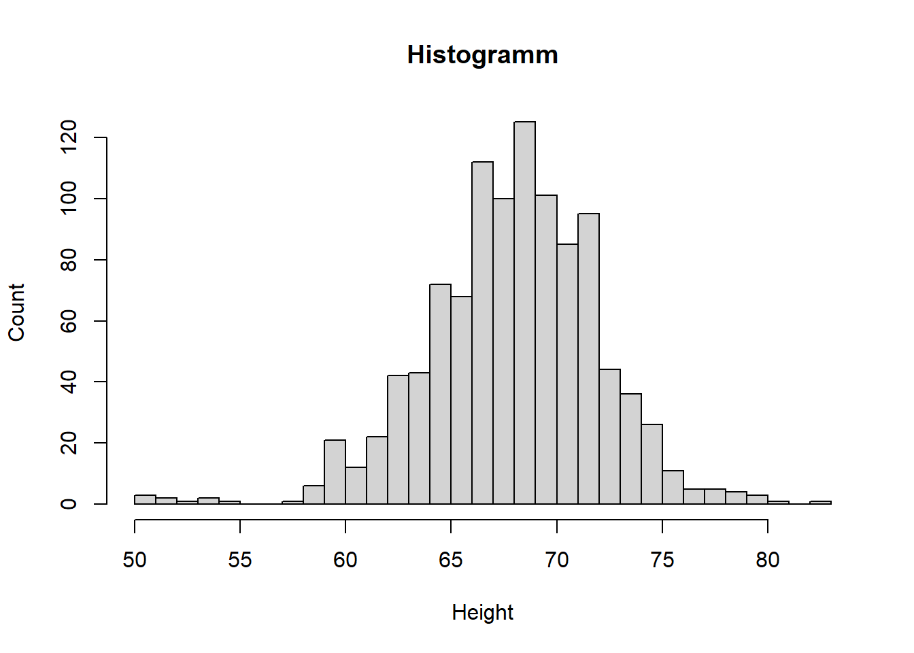
Во-первых, диапазон данных составляет от 55 до 81, но, возможно, что более важно, он узнает, что большинство, более 95%, имеют размер от 63 до 75 дюймов.
Во-вторых, высота близка к симметричной - около 69 дюймов.
Также обратите внимание, что, суммируя подсчеты, ET мог бы получить очень хорошие аппроксимации доли данных в любом интервале.
Таким образом, в нем содержится почти вся информация , которую мы предоставили с помощью CDF. Мы предоставляем почти всю информацию, содержащуюся в необработанных данных, которые составляют 708 высот, всего с 23 ячейками. Так почему же это приблизительное значение? Какую информацию мы теряем? Обратите внимание, что все значения в каждом интервале обрабатываются как одинаковые при вычислении высоты ячейки. Так, например, гистограмма не различает между 64, 64,1 и 64,2 дюймами. Учитывая, что эти различия почти незаметны глазу, в данном конкретном случае практические последствия незначительны.
Каждое непрерывное распределение имеет функцию кумулятивного распределения (CDF). CDF определяет долю данных ниже заданного значения a для всех значений a:
Любой непрерывный набор данных имеет CDF, а не только обычные распределения. Например, данные о росте мужчин, которые мы использовали в предыдущем разделе, имеют следующий CDF:
my_data <- heights$height
a <- seq(min(my_data), max(my_data), length = 100) # define range of values spanning the dataset
cdf_function <- function(x) { # computes prob. for a single value
mean(my_data <= x)
}
cdf_values <- sapply(a, cdf_function)
plot(a, cdf_values)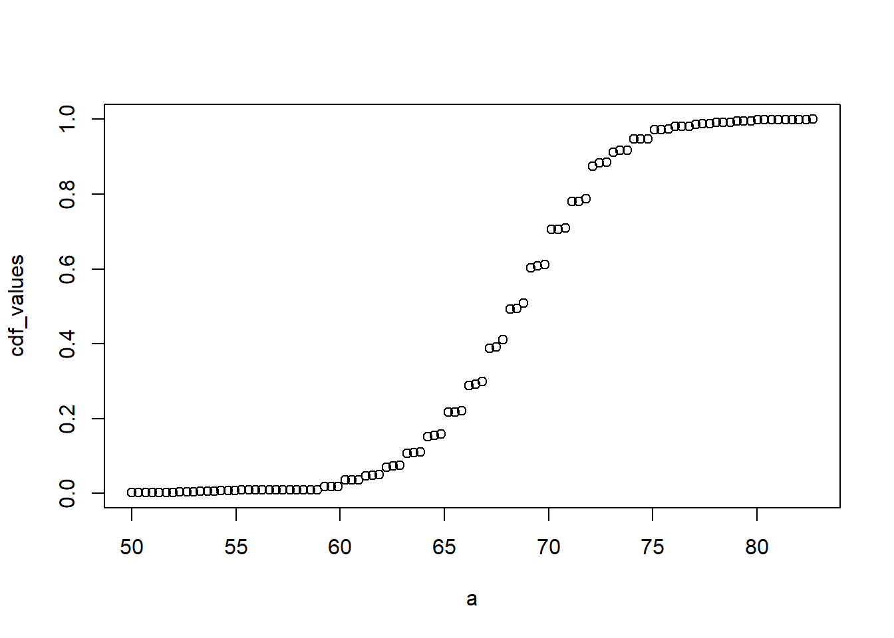
Как определено выше, этот график CDF для роста мужчин имеет значения a роста по оси x и долю учащихся с ростом, равным этому значению или ниже (F(a)), по оси y.
CDF необходим для вычисления вероятностей, связанных с непрерывными данными. В непрерывном наборе данных вероятность определенного точного значения не является информативной, поскольку большинство записей уникальны. Например, в данных о росте учащихся только один человек сообщил о росте в 68,8976377952726 дюймов, но многие учащиеся округлили аналогичный рост до 69 дюймов. Если бы мы вычислили точные вероятности значений, мы бы обнаружили, что быть ровно 69 дюймами гораздо более вероятно, чем иметь точную высоту, не являющуюся целым числом, что не соответствует нашему пониманию того, что высота непрерывна. Вместо этого мы можем использовать CDF для получения полезной сводки, такой как вероятность того, что рост учащегося составляет от 68,5 до 69,5 дюймов.
Для наборов данных, которые не являются нормальными, CDF можно рассчитать вручную, определив функцию для вычисления приведенной выше вероятности. Затем эта функция может быть применена к диапазону значений по всему диапазону набора данных для вычисления CDF. Учитывая набор данных my_data, CDF может быть вычислен и нанесен на график следующим образом:
CDF определяет ту долю данных, которая ниже порогового значения a. Чтобы определить соотношение приведенных выше значений, мы вычисляем:
\(1-F(a)\)
Чтобы определить соотношение значений между a и b, мы вычисляем:
\(F(b) - F(a)\)
Обратите внимание, что CDF может помочь вычислить вероятности. Вероятность наблюдения случайно выбранного значения между a и b равна доле значений между a и b , которую мы вычисляем с помощью CDF.
Ключевые моменты
Графики smooth density можно рассматривать как гистограммы, где ширина ячейки чрезвычайно или бесконечно мала. Функция сглаживания оценивает истинный непрерывный тренд данных с учетом доступной выборки точек данных.
Степенью плавности можно управлять с помощью аргумента в функции построения графика. (Функции для построения графиков мы изучим позже.)
В то время как гистограмма представляет собой сводку без допущений, график smooth density формируется на основе предположений и выбора, который вы делаете как аналитик данных.
Ось y масштабируется таким образом, чтобы площадь под кривой плотности в сумме равнялась 1. Это означает, что интерпретация значений по оси y не является простой. Чтобы определить долю данных между двумя значениями, вычислите площадь под плавной кривой плотности в области между этими значениями.
Преимущество сглаженных плотностей перед гистограммами заключается в том, что плотности легче сравнивать визуально.
Еще одно замечание о гистограммах
Обратите внимание, что выбор ширины ячейки оказывает определяющее влияние на форму. Не существует “правильного” выбора для binwidth, и иногда вы можете получить представление о данных, поэкспериментировав с binwidths.
Textfile
РАФАЭЛЬ ИРИЗАРРИ:
Графики smooth density похожи на гистограммы, но эстетически более привлекательны. Вот как выглядит сглаженный график плотности для наших данных о росте мужчин.
Обратите внимание, что у нас больше нет острых краев на границах интервала и что многие локальные пики были удалены. Также обратите внимание, что масштаб оси y изменился с количества на нечто новое, называемое плотностью. Чтобы понять smooth density, мы должны разобраться в оценках, тему, которую мы рассмотрим позже. Однако мы приводим эвристическое объяснение , которое поможет вам понять основы, и таким образом вы сможете использовать этот полезный инструмент визуализации данных и научиться его интерпретировать.
Основная новая концепция, которую вы должны понять , заключается в том, что мы предполагаем, что наш список наблюдаемых значений наблюдаемых высот берется из гораздо, гораздо большего списка ненаблюдаемых значений. Итак, в случае роста мужчин, вы можете себе представить , что наши списки роста студентов взяты из гипотетического списка, содержащего все высоты всех студентов мужского пола во всем мире, измеренные очень точно.
Итак, в качестве примера давайте предположим, что у нас их миллион. Этот список значений, как и любой другой список значений, имеет распределение. И это действительно то, о чем мы хотим сообщить ET, поскольку это гораздо более общий вопрос. К сожалению, мы этого не видим. Однако мы можем сделать предположение, которое, возможно, поможет нам приблизиться. Поскольку мы предполагаем, что у нас есть миллион значений, измеренных очень точно, мы можем построить гистограмму с очень-очень маленькими ячейками. Это поможет нам понять, что такое плавные плотности.
Предполагается, что если мы сделаем это, то последовательные ячейки будут одинаковыми. Это то, что мы подразумеваем под плавностью. У нас нет больших скачков от корзины к корзине. Вот гипотетическая гистограмма с размером ячейки 1 из гипотетического списка из 1 миллиона значений. И вот что происходит, когда мы делаем контейнеры все меньше и меньше. Вы можете видеть, что края начинают исчезать, а гистограмма становится более плавной. Для этой гипотетической ситуации плавная плотность - это, по сути, кривая, проходящая через верхнюю часть столбцов гистограммы , когда ячейки очень, очень малы. Вы можете видеть это на графике в виде синей кривой. Чтобы кривая не зависела от гипотетического размера из гипотетического списка мы вычисляем кривую по шкале частот , а не по шкале подсчета. ОК.
А теперь вернемся к реальности. В нашем примере у нас нет миллионов измерений. Вместо этого у нас есть 708, и мы не можем построить гистограмму с очень-очень маленькими ячейками. Итак, как мы можем оценить эту гипотетический smooth density , которую мы увидели бы, если бы увидели все измерения? Итак, что мы собираемся сделать, так это начать с построения гистограммы с нашими данными, вычисляя частоты, а не количество, и используя размер ячейки, соответствующий нашим данным, чтобы гистограмма выглядела следующим образом. Поскольку это небольшая выборка, мы получаем негладкие колебания этих высот. Чтобы сгладить гистограмму, что мы собираемся сделать, мы начнем с того, что сохраним высоту полосы гистограммы, показанной здесь , с небольшими точками. Мы сохраняем эти пункты. А теперь мы нарисуем плавную кривую, проходящую через верхнюю часть этих столбцов гистограммы. Это синяя кривая. И мы получаем то, что мы называем smooth density. Вот как выглядит конечный продукт.
library(dslabs)
library(tidyverse)── Attaching core tidyverse packages ──────────────────────── tidyverse 2.0.0 ──
✔ dplyr 1.1.4 ✔ readr 2.1.5
✔ forcats 1.0.0 ✔ stringr 1.5.1
✔ ggplot2 3.5.1 ✔ tibble 3.2.1
✔ lubridate 1.9.4 ✔ tidyr 1.3.1
✔ purrr 1.0.4
── Conflicts ────────────────────────────────────────── tidyverse_conflicts() ──
✖ dplyr::filter() masks stats::filter()
✖ dplyr::lag() masks stats::lag()
ℹ Use the conflicted package (<http://conflicted.r-lib.org/>) to force all conflicts to become errorslibrary(ggplot2)
data("heights")
mens_height <- heights %>% filter(sex == "Male")
mens_height %>% ggplot(aes(height)) +
geom_density(fill = "green", alpha = 0.3)+
theme_minimal()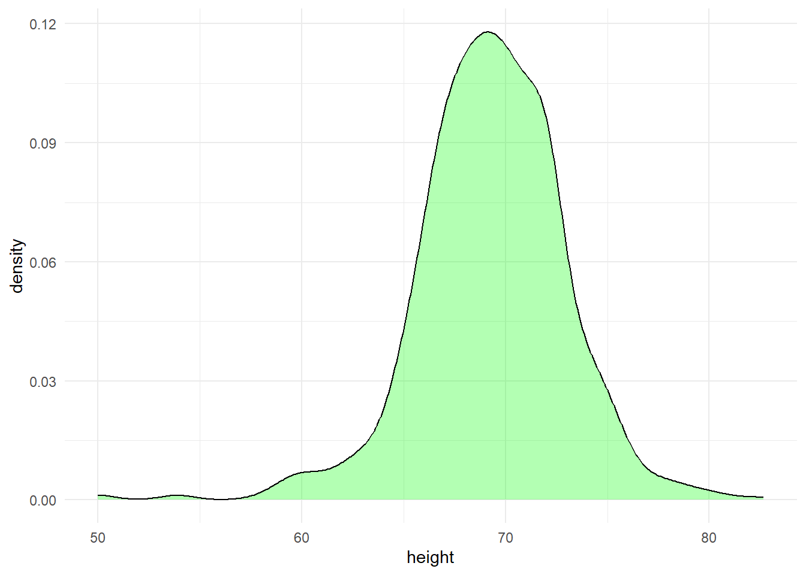
Прежде чем мы продолжим, обратите внимание, что плавность - это относительный термин. Мы действительно можем контролировать плавность кривой, которая определяет плавную плотность с помощью параметра в функции, параметра GG plot , который вычисляет плавную плотность. Вот два примера, использующие разные степени сглаживания на одной и той же гистограмме. Слева мы видим более неровную кривую. Он быстро поднимается и опускается. А справа мы видим кривую, которая поднимается вверх, а затем плавно опускается вниз. Нам нужно сделать этот выбор с осторожностью, так как результирующая визуализация может изменить нашу интерпретацию данных. Мы должны выбрать степень плавности, которую мы можем защитить как репрезентативную для базовых данных. Что касается роста, то у нас действительно есть основания полагать, что доля людей с одинаковым ростом должна быть примерно одинаковой.
Например, пропорция, равная 72 дюймам , должна быть больше похожа на пропорцию 71 дюйм , чем на пропорцию, равную 78 или 65. Это подразумевает, что кривая должна быть довольно плавной, больше похожей на пример справа, чем на пример слева. Всегда имейте в виду, что, хотя гистограмма представляет собой сводку без допущений, плавная плотность основана на предположениях и выборе , которые вы делаете как аналитик данных. Наконец, чтобы иметь возможность интерпретировать графики плотности, нам нужно понимать единицы измерения оси y. Мы указываем, что интерпретация оси y гладкого графика плотности не является простой. Он масштабируется таким образом, что площадь под кривой плотности увеличивается до 1. Итак, если вы представите, что формируете контейнер с основанием длиной в 1 единицу. Значение по оси y указывает нам долю значений в этой ячейке. Но это верно только в том случае, если ячейка имеет размер 1. Для других интервалов размера наилучшим способом определения доли данных в этом интервале является вычисление доли от общей площади, содержащейся в нем в этот промежуток времени.
Вот пример, если мы возьмем соотношение значений между 65 и 68, оно будет равно доле графика, который находится в той синей области , которую мы вам показываем прямо здесь. Доля этой области составляет около 0,31, что означает, что около 31% наших значений находятся в диапазоне от 65 до 68 дюймов. Теперь, когда мы это понимаем, мы готовы использовать плавную плотность в качестве обобщения. Для этого набора данных мы были бы вполне удовлетворены предположением о гладкости. И поэтому мы делимся с ET эстетически приятной фигурой, которую вы могли бы использовать, чтобы понять наши данные о росте мужчин. В качестве заключительного замечания мы отмечаем, что преимущество плавных плотностей перед гистограммами заключается в том, что это облегчает сравнение двух распределений. Во многом это связано с тем, что неровные края гистограммы создают беспорядок, поэтому, когда мы сравниваем две гистограммы, их немного трудно увидеть.
Вот пример того, как это выглядит, когда вы используете графики плотности. При правильном аргументе ggplot автоматически закрашивает пересекающиеся области разными цветами. Таким образом, очень легко получить представление о том, что представляют собой эти два дистрибутива.
data("heights")
library(ggplot2)
library(tidyverse)
heights %>% ggplot(aes(height, fill = sex))+
geom_density(alpha = 0.25)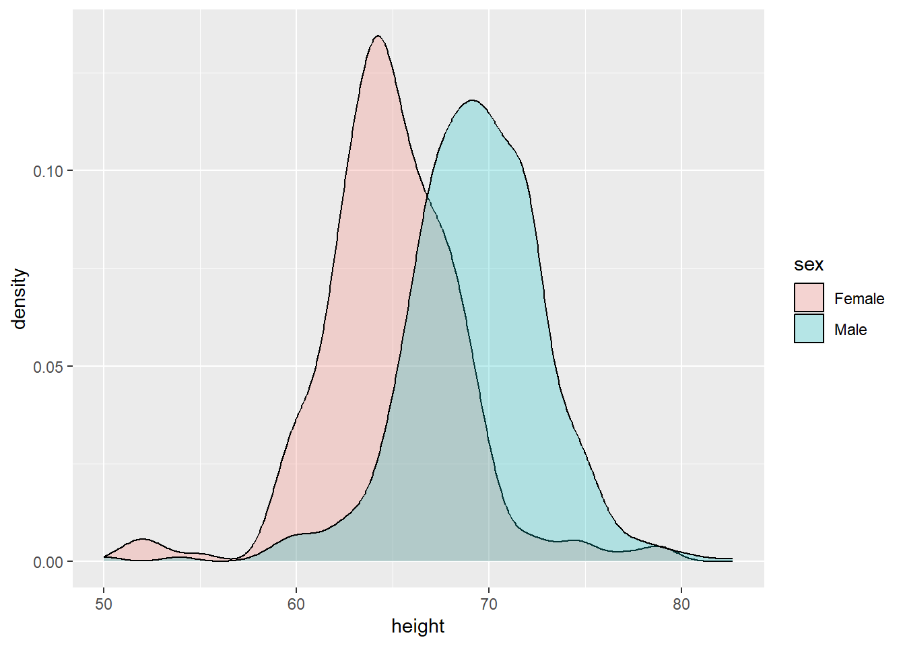
Ключевые моменты
Нормальное распределение:
Сосредоточен вокруг одного значения - mean
Симметричен относительно mean
Полностью определяется его mean() и sd()
Всегда имеет одинаковую долю наблюдений в пределах заданного расстояния от среднего значения (например, 95% в пределах 2 Q).
Стандартное отклонение - это среднее расстояние между значением и среднестатистическим значением. Вычислите среднее значение, используя функцию mean(). Рассчитайте стандартное отклонение с помощью функции sd() или вручную.
Стандартные единицы измерения описывают, на сколько стандартных отклонений то или иное значение отличается от среднего. z-балл, или количество стандартных отклонений, на которые наблюдение отклоняется от среднего значения :
\[ Z = \frac {x-\mu}{\sigma} \tag{1}\]
Вычислите стандартные единицы измерения с помощью функции scale().
Важно: чтобы вычислить долю значений, удовлетворяющих определенному условию, используйте функцию mean() для логического вектора. Поскольку значение TRUE преобразуется в 1, а значение FALSE - в 0, взятие среднего значения этого вектора дает долю значения TRUE.
Уравнение для нормального распределения
Нормальное распределение математически определяется по следующей формуле для любого среднего значения и стандартного отклонения :
\[\mbox{Pr}(a < x < b) = \int_a^b \frac{1}{\sqrt{2\pi}\sigma} e^{-\frac{1}{2}\left( \frac{x-\mu}{\sigma} \right)^2} \, dx \tag{2}\]
ПРИМЕЧАНИЕ: Среднее значение и стандартное отклонение, полученные с помощью приведенного ниже кода, составляют 69,31 и 3,61 соответственно. Эти значения отображаются в видео, но немного отличаются от аудио.
# define x as vector of male heights
library(tidyverse)
library(dslabs)
data(heights)
index <- heights$sex=="Male"
x <- heights$height[index]
# calculate the mean and standard deviation manually
average <- sum(x)/length(x)
SD <- sqrt(sum((x - average)^2)/length(x))
# built-in mean and sd functions - note that the audio and printed values disagree
average <- mean(x)
SD <- sd(x)
c(average = average, SD = SD) average SD
69.314755 3.611024 # calculate standard units
z <- scale(x)
# calculate proportion of values within 2 SD of mean
mean(abs(z) < 2)[1] 0.9495074Примечание о функции sd()
Встроенная функция R sd() вычисляет стандартное отклонение, но делит его на длину (x)-1 вместо длины(x). Когда длина списка велика, эта разница незначительна, и вы можете использовать встроенную функцию sd(). В противном случае вам следует произвести вычисления вручную. Для этой серии курсов предположим, что вам следует использовать функцию sd(), если только вам не скажут этого не делать.
РАФАЭЛЬ ИРИЗАРРИ:Гистограммы и графики плотности дают отличное представление о распределении, но можем ли мы обобщить еще больше? Мы часто видим, что среднее значение и стандартное отклонение используются в качестве сводной статистики для списка чисел - сводки из двух чисел. Чтобы понять, что представляют собой эти сводки и почему они так широко используются, нам нужно понять нормальное распределение.
Нормальное распределение, также известное как колоколообразная кривая и как распределение Гаусса, является одним из самых известных математических понятий в истории. Причина этого заключается в том, что приблизительно нормальные распределения возникают во многих ситуациях. Примерами могут служить выигрыши в азартных играх, рост, вес, кровяное давление, результаты стандартизированных тестов и погрешность экспериментальных измерений. Этому есть объяснения, но мы объясним это позже. Здесь мы сосредоточимся на том, как нормальное распределение помогает нам обобщать данные. Вместо использования данных нормальное распределение определяется с помощью математической формулы. Давайте посмотрим, что это такое.
\[\mbox{Pr}(a < x < b) = \int_a^b \frac{1}{\sqrt{2\pi}\sigma} e^{-\frac{1}{2}\left( \frac{x-\mu}{\sigma} \right)^2} \, dx\]
Для любого интервала a и b соотношение значений в интервале может быть вычислено с помощью этой формулы. Вам не нужно запоминать или понимать детали формулы. У нас будет R-код, который вычислит это для нас, но обратите внимание, что он полностью определяется всего двумя параметрами -
mиs. Остальные символы в формуле представляют концы интервала,aиb, и известные математические константы, \(\pi\) и \(e\). Эти два параметра,mиs, называются средним значением - также называемымmean, вот почему мы используем буквуm- и стандартным отклонением распределения соответственно. Распределение симметричное, с центром в среднем, и большинство значений - около 95% - находятся в пределах двух стандартных отклонений от среднего значения.Тот факт, что распределение определяется всего двумя параметрами , подразумевает, что если набор данных аппроксимируется нормальным распределением, вся информация, необходимая для описания этого распределения , может быть закодирована всего в двух числах - среднем и стандартном отклонении, которые мы сейчас определили для произвольного списка чисел. Для списка чисел, содержащего вектор, который мы будем называть x, среднее значение просто определяется как сумма x, деленная на длину x. Вот код, который вы используете в R, и стандартное отклонение определяется по следующей формуле. Это квадратный корень из суммы разностей между значениями и среднеквадратичным значением, деленным на длину. Вы можете думать об этом как о среднем расстоянии между значениями и их средним значением. Давайте вычислим среднее значение и стандартное отклонение для роста мужчин, которые мы сохраним в объекте с именем x, используя этот код. Здесь можно использовать готовые функции mean и SD.
Стандартные единицы измерения
Для данных, которые являются приблизительно нормальными, стандартные единицы измерения описывают количество стандартных отклонений наблюдения от среднего значения. Стандартные единицы измерения обозначаются переменной и также известны как z.
Для любого значения из нормального распределения со средним значением и стандартным отклонением значение в стандартных единицах равно:
\[z = \frac{x-\mu}{\sigma}\]
Стандартные единицы измерения полезны по многим причинам. Обратите внимание, что формула для нормального распределения упрощается путем подстановки в показатель z степени:
\[\mbox{Pr}(a < x < b) = \int_a^b \frac{1}{\sqrt{2\pi}\sigma} e^{-\frac{1}{2}z^2} \, dx\]
Когда z = 0, нормальное распределение находится на максимуме, это среднее значение \(\mu\) . Функция определена как симметричная вокруг .
Нормальное распределение z-баллов называется стандартным нормальным распределением и определяется с помощью \(\mu = 0\) и \(\sigma = 0\).
Z-баллы полезны для быстрой оценки того, является ли наблюдение средним или экстремальным. Z-баллы, близкие к 0, являются средними. Z-баллы выше 2 или ниже -2 значительно выше или ниже среднего значения, а z-баллы выше 3 или ниже -3 встречаются крайне редко.
Ниже мы узнаем больше о контрольных значениях z-балла и соответствующих им вероятностях.
Code: Converting to standard units
Функция масштабирования преобразует вектор приблизительно нормально распределенных значений в z-баллы.
library(tidyverse)
library(dslabs)
data(heights)
index <- heights$sex=="Male"
x <- heights$height[index]
z <- scale(x)
head(z, 8) [,1]
[1,] 1.5744137
[2,] 0.1897648
[3,] -0.3640948
[4,] 1.2974839
[5,] -2.3026033
[6,] -0.6410246
[7,] 0.7436243
[8,] 0.7436243Вы можете вычислить долю наблюдений, которые находятся в пределах 2 стандартных отклонений от среднего значения, следующим образом:
mean(abs(z) < 2)[1] 0.9495074The 68-95-99.7 Rule
Нормальное распределение связано с правилом 68-95-99.7. Это правило описывает вероятность наблюдения событий в пределах определенного числа стандартных отклонений от среднего значения.

Функция распределения вероятностей для нормального распределения определяется таким образом, что:
Около 68% наблюдений будут находиться в пределах одного стандартного отклонения от среднего значения \(\mu \pm \sigma\). В стандартных единицах измерения это эквивалентно z-score .
\(\mid z \mid \leq 1\)


Около 95% наблюдений будут находиться в пределах двух стандартных отклонений от среднего значения \(\mu \pm 2\sigma\). В стандартных единицах измерения это эквивалентно z-баллу .
\(\mid z \mid \leq 2\)
Мы узнаем, как вычислить эти точные вероятности в следующем разделе, а также вероятности для других интервалов.
pnorm ()Ключевые моменты:
Нормальное распределение имеет математически определенный CDF, который может быть вычислен в R с помощью функции pnorm().
pnorm(a, avg, s) дает значение CDF для нормального распределения, определяемого средним значением avg и стандартным отклонением s.
Мы говорим, что случайная величина нормально распределена со средним значением и стандартными отклонениями, если аппроксимация pnorm(a, avg, s) выполняется для всех значений a.
Если мы хотим использовать нормальное приближение для высоты, мы можем оценить распределение просто по среднему значению и стандартному отклонению наших значений.
Если мы будем рассматривать данные о высоте как дискретные, а не категориальные, мы увидим, что эти данные не очень полезны, поскольку целочисленные значения встречаются чаще, чем ожидалось, из-за округления. Это называется дискретизацией.
При округленных данных нормальная аппроксимация особенно полезна при вычислении вероятностей интервалов длиной 1, которые включают ровно одно целое число.
Заданный мужской рост x:
library(tidyverse)
library(dslabs)
data(heights)
x <- heights %>% filter(sex=="Male") %>% pull(height)
head(x,20) [1] 75 70 68 74 61 67 72 72 69 68 69 66 75 67 66 64 70 73 72 69Мы можем оценить вероятность того, что мужчина выше 70,5 дюймов с:
1 - pnorm(70.5, mean(x), sd(x))[1] 0.371369# постройте график распределения точных высот в данных
plot(prop.table(table(x)), xlab = "a = Height in inches", ylab = "Pr(x = a)")
# вероятности в фактических данных в диапазонах длины 1, содержащих целое число
mean(x <= 68.5) - mean(x <= 67.5)[1] 0.114532mean(x <= 69.5) - mean(x <= 68.5)[1] 0.1194581mean(x <= 70.5) - mean(x <= 69.5)[1] 0.1219212# вероятности в нормальном приближении хорошо совпадают
pnorm(68.5, mean(x), sd(x)) - pnorm(67.5, mean(x), sd(x))[1] 0.1031077pnorm(69.5, mean(x), sd(x)) - pnorm(68.5, mean(x), sd(x))[1] 0.1097121pnorm(70.5, mean(x), sd(x)) - pnorm(69.5, mean(x), sd(x))[1] 0.1081743# вероятности в фактических данных в других диапазонах также не соответствуют нормальному приближению
mean(x <= 70.9) - mean(x <= 70.1)[1] 0.02216749pnorm(70.9, mean(x), sd(x)) - pnorm(70.1, mean(x), sd(x))[1] 0.08359562РАФАЭЛЬ ИРИЗАРРИ:
В модуле визуализации данных мы ввели нормальное распределение в качестве полезного приближения ко многим естественным распределениям, включая распределение высоты. Кумулятивное распределение для нормального распределения определяется математической формулой, которая в R может быть получена с помощью функции
pnorm. Мы говорим, что случайная величина нормально распределена со средним значением, avg, и стандартным отклонением, s, если ее распределение вероятностей определяется значениемf из a, равнымpnorma, average, s. Это и есть код. Это полезно, потому что, если мы хотим использовать нормальное приближение , скажем, для роста, нам не нужен весь набор данных, чтобы ответить на такие вопросы, как, какова вероятность того, что случайно выбранный студент выше 70,5 дюймов. Нам просто нужен средний рост и стандартное отклонение. Тогда мы можем использовать этот фрагмент кода, 1 минус среднее значениеpnorm 70,5отx, sd от x. И это дает нам ответ0,37. Нормальное распределение получено математически.Помимо вычисления среднего значения и стандартного отклонения, мы не используем данные для его определения. Также определено нормальное распределение для непрерывных переменных. Это не описано для дискретных переменных. Однако для практикующих специалистов по обработке данных практически все, что мы делаем , связано с данными, которые, с технической точки зрения, являются дискретными. Например, мы могли бы считать наши данные о взрослых категориальными , а каждый конкретный рост - уникальной категорией. Распределение вероятностей тогда определялось бы долей учащихся, сообщивших о каждой из этих уникальных высот.
Вот как выглядел бы такой сюжет. Это была бы функция распределения для этих категорий. Таким образом, каждый сообщенный рост получает вероятность , определяемую долей учащихся, сообщивших об этом. Теперь, в то время как большинство студентов округляли свой рост с точностью до дюйма, другие сообщали значения с гораздо большей точностью. Например, студент сообщил, что его рост составляет 69,6850393700787. Что это значит? Что это за очень, очень точное число? Что ж, оказывается, это 177 сантиметров. Итак, студент преобразовал его в дюймы, скопировал и вставил результат в то место, где он должен был сообщить о своем росте. Вероятность, присвоенная этой высоте, составляет около 0,001. Это 1 к 708. Однако вероятность для 70 дюймов составляет 0,12. Это намного выше, чем было сообщено при использовании этого другого значения. Но действительно ли имеет смысл думать, что вероятность быть ровно 70 дюймов настолько выше, чем вероятность быть 69,68? Очевидно, что для целей анализа данных гораздо полезнее рассматривать этот результат как непрерывную числовую переменную. Но имейте в виду, что очень немногие люди, возможно, вообще никто, имеют рост ровно 70 дюймов. Но скорее, чтобы люди округлились с точностью до дюйма. При непрерывных распределениях вероятность сингулярного значения даже не определена. Например, не имеет смысла спрашивать , какова вероятность того, что нормально распределенное значение равно 70. Вместо этого мы определяем вероятности для интервалов. Поэтому вместо этого мы могли бы спросить, какова вероятность того, что кто -то находится между 69,99 и 70,01. В таких случаях, как высота, в которых данные округлены, нормальная аппроксимация особенно полезна , если мы имеем дело с интервалами, которые включают ровно одно круглое число. Так, например, нормальное распределение полезно для приблизительного определения доли учащихся , сообщивших о результатах в диапазоне от 69,5 до 70,5.
Вот еще три примера.
Посмотрите на цифры, о которых сообщается. При этом используются данные, фактические данные, а не аппроксимация. Теперь посмотрите, что мы получаем, когда используем аппроксимацию. Мы получаем почти одинаковые значения. Для этих конкретных интервалов весьма полезна нормальная аппроксимация. Однако аппроксимация не так полезна для других интервалов. Например, те, которые не содержат целого числа. Вот два примера. Если мы используем эти два интервала, опять же, это данные, посмотрите теперь на приближения с нормальным распределением. Они не настолько хороши. В общем, мы называем эту ситуацию дискретизацией. Хотя истинное распределение высот является непрерывным, сообщаемые высоты, как правило, чаще встречаются при дискретных значениях, в данном случае из-за округления. До тех пор, пока мы знаем, как справляться с этой реальностью, нормальное приближение все еще может быть очень полезным инструментом.
Пропорции Гистограммы и графики плотности дают отличное представление о распределении. Но можем ли мы подвести еще один итог? Мы часто видим, что среднее значение и стандартное отклонение используются в качестве сводной статистики: сводка из двух чисел! Чтобы понять, что представляют собой эти сводки и почему они так широко используются, нам нужно понять нормальное распределение.
Нормальное распределение, также известное как колоколообразная кривая и как распределение Гаусса, является одним из самых известных математических понятий в истории. Причина этого заключается в том, что во многих ситуациях имеет место приблизительно нормальное распределение. Примерами могут служить выигрыши в азартных играх, рост, вес, кровяное давление, результаты стандартизированных тестов и ошибки экспериментальных измерений. Часто визуализация данных необходима для подтверждения того, что наши данные соответствуют нормальному распределению.
Здесь мы сосредоточимся на том, как нормальное распределение помогает нам обобщать данные и может быть полезно на практике.
Одним из способов использования нормального распределения является то, что его можно использовать для аппроксимации распределения списка чисел без доступа ко всему списку. Мы продемонстрируем это с помощью набора данных о высотах.
Загрузите набор данных о высоте и создайте вектор x только с мужскими высотами:
library(dslabs)
data(heights)
x <- heights$height[heights$sex == "Male"]Какая доля данных составляет от 69 до 72 дюймов (выше 69, но короче или равна 72)?
Пропорция находится в диапазоне от 0 до 1. Используйте функцию mean в своем коде. Помните, что вы можете использовать среднее значение для вычисления доли элементов логического вектора, которые являются истинными.
mean(x <= 72) - mean(x <= 69)[1] 0.3337438Предположим, все, что вы знаете о данных о росте из предыдущего упражнения, - это среднее значение и стандартное отклонение и что их распределение аппроксимируется нормальным распределением. Мы можем вычислить среднее значение и стандартное отклонение следующим образом:
library(dslabs)
data(heights)
x <- heights$height[heights$sex=="Male"]
avg <- mean(x)
stdev <- sd(x)
avg[1] 69.31475stdev[1] 3.611024Предположим, у вас есть только avg и stdev ниже, но нет доступа к x, можете ли вы приблизительно определить долю данных, которая составляет от 69 до 72 дюймов?
Учитывая нормальное распределение со средним значением mu и сигмой стандартного отклонения, вы можете рассчитать долю наблюдений, меньшую или равную определенному значению, с помощью pnorm(значение, mu, сигма). Обратите внимание, что это CDF для нормального распределения. Мы узнаем гораздо больше о pnorm позже в серии курсов, но вы также можете узнать больше сейчас с помощью ?pnorm.
Используйте нормальное приближение, чтобы оценить пропорцию - долю данных, которая составляет от 69 до 72 дюймов. Обратите внимание, что вы не можете использовать x в своем коде, только avg и stdev.
Также обратите внимание, что у R есть функция, которая может оказаться здесь очень полезной - ознакомьтесь с функцией pnorm .
avg <- mean(x)
stdev <- sd(x)
pnorm(72,avg,stdev)- pnorm(69,avg,stdev)[1] 0.3061779Обратите внимание, что приближение, рассчитанное во втором вопросе, очень близко к точному расчету в первом вопросе. Нормальное распределение было полезным приближением для этого случая.
Однако такое приближение не всегда полезно. Примером могут служить более экстремальные значения, часто называемые “хвостами” распределения. Давайте рассмотрим пример. Мы можем вычислить соотношение высот между 79 и 81.
library(dslabs)
data(heights)
x <- heights$height[heights$sex == "Male"]
mean(x > 79 & x <= 81)[1] 0.004926108Используйте нормальное приближение, чтобы оценить соотношение высот между 79 и 81 дюймом и сохранить его в объекте под названием approx.
Сообщите, во сколько раз больше фактическая доля по сравнению с приблизительной.
library(dslabs)
data(heights)
x <- heights$height[heights$sex == "Male"]
exact <- mean(x > 79 & x <= 81)
exact[1] 0.004926108approx <- pnorm(81,mean(x), sd(x))- pnorm(79,mean(x), sd(x))
approx[1] 0.003051617exact/approx[1] 1.614261Повторите расчеты, выполненные в предыдущем вопросе, для роста Леброна Джеймса: 6 футов 8 дюймов. В НБА насчитывается около 150 игроков, а не 10, которые, по крайней мере, такого роста.
Сообщите предполагаемую долю людей ростом как минимум с Леброна, которые играют в НБА.
p <- 1 - pnorm(6*12 + 8, 69, 3)
N <- round(p * 10^9)
150/N[1] 0.001220842Definition of quantiles
Квантили - это точки отсечения, которые делят набор данных на интервалы с заданными вероятностями. q квантиль - это значение, при котором q% наблюдений равны или меньше этого значения.
Использование функции квантиля
Учитывая данные набора данных и желаемый квантиль q, вы можете найти q-й квантиль данных с помощью:
quantile(data,q)
Percentiles
Процентили - это квантили, которые делят набор данных на 100 интервалов, каждый с вероятностью 1%. Вы можете определить все процентили данных набора данных следующим образом:
data <- c(1:1000, 2)
p <- seq(0.01, 0.99, 0.01)
quantile(data, p) 1% 2% 3% 4% 5% 6% 7% 8% 9% 10% 11% 12% 13% 14% 15% 16% 17% 18% 19% 20%
10 20 30 40 50 60 70 80 90 100 110 120 130 140 150 160 170 180 190 200
21% 22% 23% 24% 25% 26% 27% 28% 29% 30% 31% 32% 33% 34% 35% 36% 37% 38% 39% 40%
210 220 230 240 250 260 270 280 290 300 310 320 330 340 350 360 370 380 390 400
41% 42% 43% 44% 45% 46% 47% 48% 49% 50% 51% 52% 53% 54% 55% 56% 57% 58% 59% 60%
410 420 430 440 450 460 470 480 490 500 510 520 530 540 550 560 570 580 590 600
61% 62% 63% 64% 65% 66% 67% 68% 69% 70% 71% 72% 73% 74% 75% 76% 77% 78% 79% 80%
610 620 630 640 650 660 670 680 690 700 710 720 730 740 750 760 770 780 790 800
81% 82% 83% 84% 85% 86% 87% 88% 89% 90% 91% 92% 93% 94% 95% 96% 97% 98% 99%
810 820 830 840 850 860 870 880 890 900 910 920 930 940 950 960 970 980 990 Quartiles
Квартили делят набор данных на 4 части, каждая из которых с вероятностью 25%. Они равны 25-му, 50-му и 75-му процентилям. 25-й процентиль также известен как 1-й квартиль, 50-й процентиль также известен как медиана, а 75-й процентиль также известен как 3-й квартиль.
Функция summary() возвращает минимум, квартили и максимум вектора.
Examples
library(dslabs)
data(heights)
summary(heights$height) Min. 1st Qu. Median Mean 3rd Qu. Max.
50.00 66.00 68.50 68.32 71.00 82.68 Find the percentiles of heights$height:
p <- seq(0.01, 0.99, 0.01)
percentiles <- quantile(heights$height, p)
head(percentiles, 8) 1% 2% 3% 4% 5% 6% 7% 8%
59.00000 60.00000 60.00000 61.00000 62.00000 62.00000 62.28869 63.00000 Убедитесь, что 25-й и 75-й процентили соответствуют 1-му и 3-му квартилям. Обратите внимание, что функция quantile() возвращает именованный вектор. Вы можете получить доступ к 25-му и 75-му процентилям следующим образом (адаптируйте код для других значений процентилей):
percentiles[names(percentiles) == "25%"]25%
66 percentiles[names(percentiles) == "75%"]75%
71 Поиск квантилей с помощью qnorm
Definition of qnorm
qnorm() функция дает теоретическое значение квантиля с вероятностью p наблюдения значения, равного или меньшего этого значения квантиля при нормальном распределении со средним значением mu и стандартным отклонением sigma:
qnorm(p, mu, sigma)
По умолчанию mu=0 и sigma=1. Следовательно, вызов qnorm() без аргументов дает квантили для стандартного нормального распределения.
qnorm(p)
Напомним, что квантили определяются таким образом, что p - это вероятность случайного наблюдения, меньшая или равная квантилю.
Relation to pnorm
Функция pnorm() дает вероятность того, что значение из стандартного нормального распределения будет меньше или равно z-балльному значению z. Рассмотрим:
pnorm(-1.96)[1] 0.0249979qnorm(0.02499)[1] -1.960135pnorm(qnorm(0.025))[1] 0.025Theoretical quantiles
Вы можете использовать qnorm() для определения теоретических квантилей набора данных: то есть теоретического значения квантилей при условии, что набор данных соответствует нормальному распределению. Запустите функцию qnorm() с желаемыми вероятностями p, средним значением mu и сигмой стандартного отклонения.
Предположим, что рост мужчин соответствует нормальному распределению со средним значением 69 дюймов и стандартным отклонением в 3 дюйма. Теоретическими квантилями являются:
p <- seq(0.01, 0.99, 0.01)
theoretical_quantiles <- qnorm(p, 69, 3)
head(theoretical_quantiles,10) [1] 62.02096 62.83875 63.35762 63.74794 64.06544 64.33568 64.57263 64.78479
[9] 64.97773 65.15535Теоретические квантили можно сравнить с квантилями выборки, определенными с помощью функции квантиля, чтобы оценить, соответствует ли выборка нормальному распределению.
Ключевые моменты
Квантиль-квантильные графики, или QQ-графики, используются для проверки того, хорошо ли аппроксимируются распределения нормальным распределением. Учитывая пропорцию , квантиль - это значение , такое , что доля значений в приведенных ниже данных равна . На QQ-графике квантили выборки в наблюдаемых данных сравниваются с теоретическими квантилями, ожидаемыми от нормального распределения. Если данные хорошо аппроксимированы нормальным распределением, то точки на QQ-графике будут располагаться вблизи линии идентичности (выборка = теоретическая). Вычислите выборочные квантили (наблюдаемые квантили) с помощью функции quantile(). Вычислите теоретические квантили с помощью функции qnorm(). qnorm() вычислит квантили для стандартного нормального распределения () по умолчанию, но он может вычислить квантили для любого нормального распределения \(\mu = 0, \sigma = 1\) по умолчанию, но он может вычислять квантили для любого нормального распределения с учетом аргументов mean() и sd(). Мы узнаем больше о qnorm() в курсе теории вероятностей. Обратите внимание, что позже в этой серии мы изучим альтернативные способы создания QQ-графиков с меньшим количеством кода.
# define x and z
library(tidyverse)
library(dslabs)
data(heights)
index <- heights$sex=="Male"
x <- heights$height[index]
z <- scale(x)
# proportion of data below 69.5
mean(x <= 69.5)[1] 0.5147783# calculate observed and theoretical quantiles
p <- seq(0.05, 0.95, 0.05)
observed_quantiles <-quantile(x, p)
theoretical_quantiles <- qnorm(p, mean = mean(x), sd = sd(x))
# make QQ-plot
plot(theoretical_quantiles, observed_quantiles)
abline(0,1)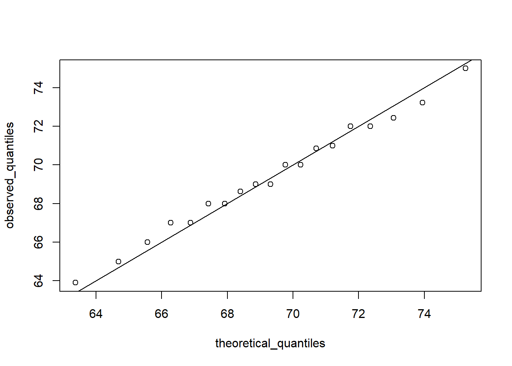
# make QQ-plot with scaled values
observed_quantiles <- quantile(z, p)
theoretical_quantiles <- qnorm(p)
plot(theoretical_quantiles, observed_quantiles)
abline(0,1)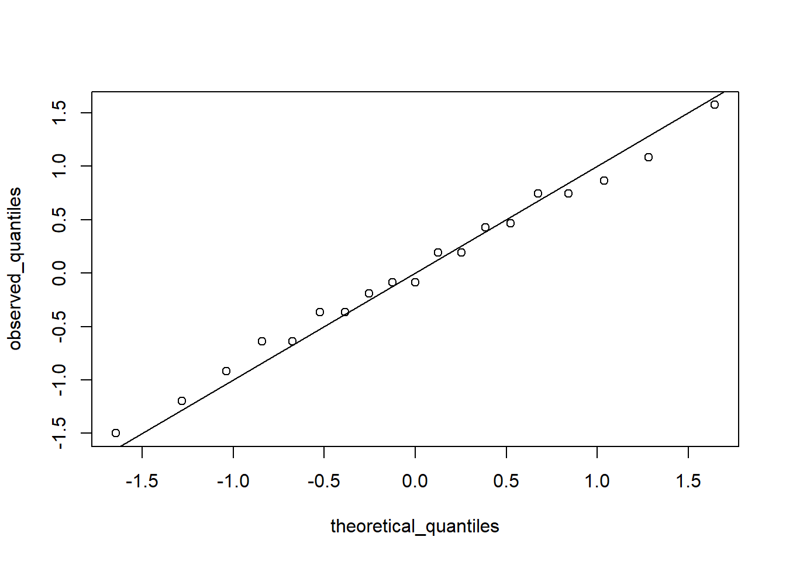
Ключевые моменты
Процентили - это квантили, полученные при определении p (0.01,0.02,…0/99) . Они суммируют значения, при которых определенный процент наблюдений равен или меньше этого значения.
50-й процентиль также известен как медиана.
Квартили - это 25-й, 50-й и 75-й процентили.
BOOK - Chapter 9 Visualizing data distributions
РАФАЭЛЬ ИРИЗАРРИ:
В этом коротком видео мы даем определение некоторым терминам, которые обычно используются при исследовательском анализе данных.
Процентили - это особые случаи квантилей, которые обычно используются. Процентили - это квантили, которые вы получаете , когда определяете p как 0,01, 0,02, вплоть до 0.99, 1%, 2%, 3%, и так далее. Вот почему мы называем их процентилями. Мы называем, например, случай, когда p равно 0,25, 25-м процентилем. Это дает нам цифру, для которой 25% других
данных приведены ниже.
Самый известный процентиль - 50-й, также известный как медиана.
Обратите внимание, что для нормального распределения медиана и среднее значение они одни и те же. Но, как правило, это не так.
Другим частным случаем, получившим название, являются квартили, которые получаются, когда мы устанавливаем значение p равным 0,25, 0,50 и 0,75.
При анализе данных часто важно знать количество измерений, которые у вас есть для каждой категории.
Определите переменную male, которая содержит высоту мужчины.
переменную female, которая содержит высоту female.
Сообщите длину каждой переменной.
library(dslabs)
data(heights)
male <- heights$height[heights$sex=="Male"]
female <- heights$height[heights$sex=="Female"]
length(male)[1] 812length(female)[1] 238Предположим, мы не можем построить график и хотим сравнить распределения бок о бок. Если количество точек данных велико, перечислять все цифры нецелесообразно. Более практичный подход заключается в том, чтобы посмотреть на процентили. Мы можем получить процентили, используя функцию quantile() следующим образом
library(dslabs)
data(heights)
head(quantile(heights$height, seq(.01, 0.99, 0.01)),8) 1% 2% 3% 4% 5% 6% 7% 8%
59.00000 60.00000 60.00000 61.00000 62.00000 62.00000 62.28869 63.00000 female_percentiles и male_percentiles. Затем создайте фрейм данных под названием df с этими двумя векторами в качестве столбцов. Названия столбцов должны быть female male и должны отображаться в указанном порядке. В качестве примера рассмотрим, что если вы хотите, чтобы фрейм данных содержал имена столбцов и оценки в таком порядке, вы делаете это следующим образом:df_ex <- data.frame(names = c("Jose", "Mary"), grades = c("B", "A"))df, распечатав его. Это даст некоторую информацию о том, чем отличается рост мужчин и женщин.female_percentiles <- quantile(female, seq(0.1,0.9,0.2))
male_percentiles <- quantile(male, seq(0.1,0.9,0.2))
df <- data.frame(female = female_percentiles, male = male_percentiles)
df female male
10% 61.00000 65.00000
30% 63.00000 68.00000
50% 64.98031 69.00000
70% 66.46417 71.00000
90% 69.00000 73.22751В предыдущих упражнениях мы видели, что среднее значение и медиана очень похожи, как и стандартное отклонение и MAD. Это ожидаемо, поскольку данные аппроксимируются нормальным распределением, которое обладает этим свойством.
Теперь предположим, что Гальтон допустил ошибку при вводе первого значения, забыв использовать десятичную точку. Вы можете имитировать эту ошибку, набрав:
library(HistData)
data(Galton)
x <- Galton$child
x_with_error <- x
x_with_error[1] <- x_with_error[1]*10Теперь в данных есть выброс, который не учитывается обычным приближением. Давайте посмотрим, как это влияет на среднее значение.
Instructions
Сообщите, на сколько дюймов в среднем вырастает человек после этой ошибки. В частности, сообщите о разнице между средним значением данных с ошибкой x_with_error и данными без ошибки x.
mean(x_with_error)-mean(x)[1] 0.5983836Мы видели, как выбросы могут повлиять на среднее значение. Но насколько большим может стать этот эффект? Это, конечно, зависит от размера выброса и размера набора данных.
Чтобы увидеть, как выбросы могут влиять на среднее значение набора данных, давайте напишем простую функцию, которая принимает размер выброса в качестве входных данных и возвращает среднее значение.
Instruction
Напишите функцию с именем error_avg, которая принимает значение k и возвращает среднее значение вектора x после того, как первая запись была изменена на k. Покажите результаты для k=10000 и k=-10000.
x <- Galton$child
error_avg <- function(k){
x[1] <- k
mean(x)
}
error_avg(1000)[1] 69.09957error_avg(-1000)[1] 66.9444ggplot2РАФАЭЛЬ ИРИЗАРРИ:
Мы начали эту серию видеороликов с того, что попросили описать рост студентов в ET. Однако мы описали только рост мужчин. Мы сделали это всего с двумя цифрами. Итак, чтобы дать полное представление о росте, нам все равно придется подвести итог росту женщин. Мы ожидаем, что они будут следовать нормальному распределению, как и мужчины. Однако предварительные графики показывают, что это приближение не столь полезно.
ggplot(heights,aes(height, fill = sex))+
geom_density(alpha = 0.4)+
facet_grid(sex~.)+
theme_minimal()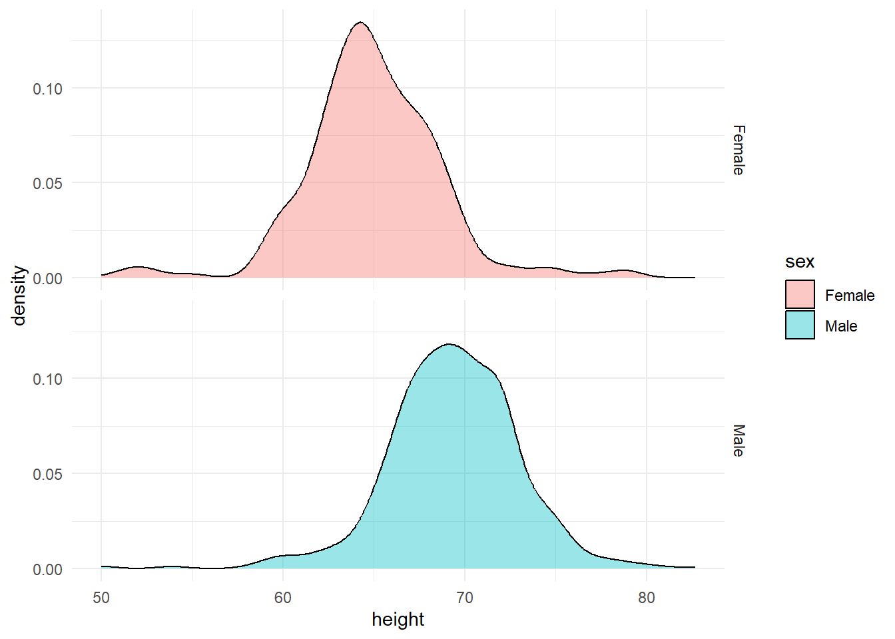
Мы можем видеть это на графике плотности или на графике q-q. Мы видим то, чего не видели у мужчин. График плотности имеет второй скачок в районе 67. Похоже на маленькое плечо. Также график q-q показывает, что самые высокие точки, как правило, выше, чем ожидалось при нормальном распределении.
p <- seq(0.01,0.99,0.01)
z_male <- scale(male)
q_m <- quantile(z_male, p)
q_m_nd <- qnorm(p, mean(z_male), sd(z_male))
qqplot(q_m_nd,z_male)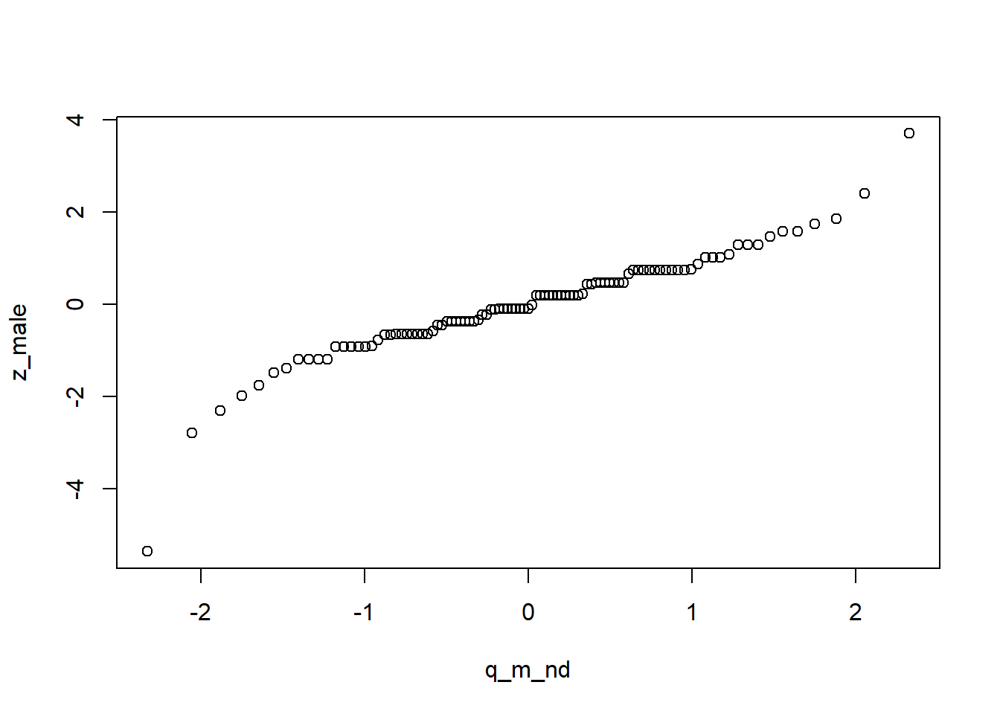
p <- seq(0.01,0.99,0.01)
z_female <- scale(female)
q_fem <- quantile(z_female, p)
q_fem_nd <- qnorm(p, mean(z_female), sd(z_female))
qqplot(q_fem_nd,z_female)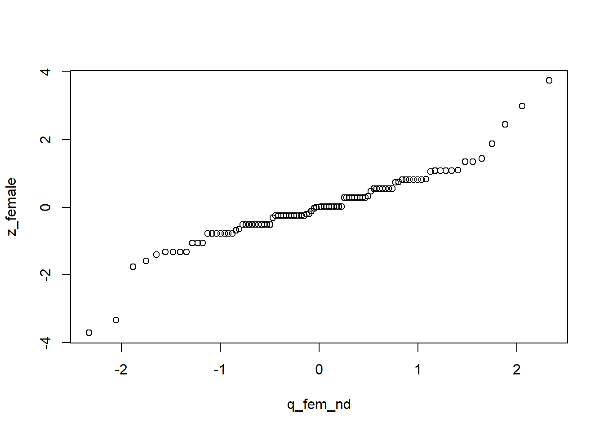
Поэтому, когда мы будем отчитываться перед ET, нам, возможно, потребуется предоставить гистограмму, а не просто среднее значение и стандартное отклонение для роста женщин. Что еще более важно, мы заметили то, чего не ожидали увидеть. Это напоминает нам цитату из Тьюки: “Величайшая ценность картины в том, что она заставляет нас замечать то, чего мы никогда не ожидали увидеть”. Если мы посмотрим на распределение роста других женщин из других источников, отличных от наших самооценок, мы увидим обнаружим, что они хорошо аппроксимированы для нормального распределения. Так почему же мы видим второй бугорок в наших данных? Почему мы видим так много необычных женщин, так много женщин выше, чем ожидалось? Является ли наш класс обязательным для женской баскетбольной команды? Действительно ли женщины небольшого роста утверждают, что они выше, чем есть на самом деле? Другое, возможно, более вероятное объяснение заключается в том, что в форме, которую студенты использовали для ввода своего роста, интернет-форме, по умолчанию был указан пол женщины, и некоторые мужчины, возможно, указали свой рост, но забыли изменить переменную пола. В данном случае, в нашем наборе данных, некоторые значения, которые предположительно принадлежат женщинам, на самом деле являются мужскими. В любом случае, это хороший пример того, как визуализация данных помогла нам обнаружить потенциальный недостаток в наших данных.
Chapter 13 Probability
В азартных играх вероятность имеет очень интуитивное определение. Например, мы знаем, что это означает, что вероятность выпадения семи кубиков равна 1 к 6. Однако в других контекстах это не так. Сегодня теория вероятностей используется гораздо шире со словом
вероятность, обычно используемым в повседневном языке. Автоматическое заполнение Google списка “Каковы шансы” выдает нам: “родить близнецов”, “сегодня прошел дождь”, “в тебя ударила молния” и “заболеть раком”. Одна из целей этой части книги - помочь нам понять, насколько вероятность полезна для понимания и описания событий реального мира при выполнении анализа данных.Поскольку знание того, как вычислять вероятности, дает вам преимущество в азартных играх, на протяжении всей истории многие умные люди, включая таких известных математиков, как Кардано, Ферма и Паскаль, тратили время и энергию на обдумывание математических основ этих игр. В результате родилась теория вероятностей. Вероятность продолжает оставаться весьма полезной в современных азартных играх. Например, в покере мы можем вычислить вероятность выигрыша комбинации на основе карт на столе. Кроме того, казино полагаются на теорию вероятностей при разработке игр, которые почти наверняка гарантируют прибыль.
Теория вероятностей полезна во многих других контекстах и, в частности, в областях, которые зависят от данных, так или иначе затронутых случайностью. Все остальные главы этой части основаны на теории вероятностей. Таким образом, знание вероятности необходимо для науки о данных.
13.1 Дискретная вероятность
Мы начнем с рассмотрения некоторых основных принципов, связанных с категориальными данными. Подмножество вероятности называется дискретной вероятностью. Это поможет нам понять теорию вероятностей, которую мы позже представим для числовых и непрерывных данных, которая гораздо более распространена в приложениях науки о данных. Дискретная вероятность более полезна в карточных играх, и поэтому мы используем их в качестве примеров.
13.1.1 Относительная частота
Слово
probabilityиспользуется в повседневном языке. Ответить на вопросы о вероятности часто бывает сложно, если вообще возможно. Здесь мы обсуждаем математическое определение вероятности , которое позволяет нам дать точные ответы на определенные вопросы.Например, если у меня есть 2 красных шара и 3 синих внутри урны (в большинстве книг по теории вероятностей используется этот архаичный термин, поэтому и мы используем его) и я выбираю один наугад, какова вероятность выбора красного? Наша интуиция подсказывает нам, что ответ равен 2/5 или 40%. Точное определение можно дать, отметив, что существует пять возможных исходов, два из которых удовлетворяют условию, необходимому для события “выбери красный шар”. Поскольку каждый из пяти исходов имеет одинаковую вероятность наступления, мы приходим к выводу, что вероятность равна 0,4 для красного и 0,6 для синего цветов.
Более осязаемый способ представить вероятность события как долю случаев, когда событие происходит, когда мы повторяем эксперимент бесконечное число раз, независимо и при одних и тех же условиях.
13.1.2 Обозначения
Мы используем обозначение \(Pr(A)\) для обозначения вероятности события \(A\) . Мы используем самый общий термин событие (event) для обозначения того, что может произойти, когда что-то происходит случайно. В нашем предыдущем примере событием был “выбор красной бусины”. В политическом опросе, в ходе которого мы случайным образом называем 100 вероятных избирателей, примером события является “вызов 48 демократов и 52 республиканцев”.
В приложениях науки о данных мы часто будем иметь дело с непрерывными переменными. Эти события часто будут представлять собой что-то вроде “этот человек выше 6 футов”. В этом случае мы записываем события в более математической форме: \(X≥6\). Мы увидим больше таких примеров позже. Здесь мы сосредоточимся на категориальных данных.
13.1.3 Распределения вероятностей
Если мы знаем относительную частоту различных категорий, определить распределение для категориальных результатов относительно просто. Мы просто присваиваем вероятность каждой категории. В случаях, которые можно рассматривать как шарики в урне, для каждого типа шариков их пропорция определяет распределение.
Если мы случайным образом выбираем вероятных избирателей из числа населения, состоящего из 44% демократов, 44% республиканцев, 10% неопределившихся и 2% зеленых, то эти пропорции определяют вероятность для каждой группы. Распределение вероятностей равно:
Pr (выбор республиканца) = 0.44 Pr (выбор демократа) = 0.44 Pr (выбор неопределившегося) = 0.10 Pr (выбор зеленого цвета) = 0.02 13.2 Моделирование методом Монте-Карло для категориальных данных
Компьютеры предоставляют способ реального выполнения простого случайного эксперимента, описанного выше: выберите наугад шар из пакета, в котором три синих шара и два красных. Генераторы случайных чисел позволяют нам имитировать процесс случайного выбора.
Примером является
sampleфункция в R. Мы демонстрируем ее использование в приведенном ниже коде. Сначала мы используем функциюrepдля генерации urn:
beads <- rep(c("red", "blue"), times = c(2,3))
beads[1] "red" "red" "blue" "blue" "blue"а затем используйте
sample, чтобы выбрать шарик наугад:
sample(beads,1)[1] "blue"Эта строка кода выдает один случайный результат. Мы хотим повторить этот эксперимент бесконечное количество раз, но это невозможно повторять вечно. Вместо этого мы повторяем эксперимент достаточно большое количество раз, чтобы результаты были практически эквивалентны повторению вечно. Это пример Monte Carlo Симуляция.
Многое из того, что изучают специалисты по математической и теоретической статистике, о чем мы не рассказываем в этой книге, связано с предоставлением строгих определений “практически эквивалентного”, а также с изучением того, насколько близко большое количество экспериментов подводит нас к тому, что происходит в пределе. Далее в этом разделе мы предлагаем практический подход к определению того, что является “достаточно большим”.
Для выполнения нашего первого моделирования методом Монте-Карло мы используем функцию
replicate, которая позволяет нам повторять одну и ту же задачу любое количество раз. Здесь мы повторяем случайное событие \(B = 10 000\) раз:
B <- 10000
events <- replicate(B, sample(beads, 1))
head(events, 20) [1] "blue" "blue" "blue" "blue" "blue" "red" "blue" "blue" "red" "blue"
[11] "blue" "red" "blue" "red" "red" "blue" "red" "blue" "blue" "blue"Теперь мы можем увидеть, действительно ли наше определение согласуется с этим приближением моделирования методом Монте-Карло. Мы можем использовать
table, чтобы увидеть распределение:
tab <- table(events)
tabevents
blue red
5963 4037 и
prop.tableдает нам пропорции:
prop.table(tab)events
blue red
0.5963 0.4037 Приведенные выше цифры представляют собой оценочные вероятности, полученные в результате моделирования методом Монте-Карло. Статистическая теория, не рассматриваемая здесь, говорит нам, что поскольку B с увеличением размера оценки приближаются к 3/5 = .6 и 2/5 =.4.
Хотя это простой и не очень полезный пример, мы будем использовать моделирование методом Монте-Карло для оценки вероятностей в случаях, когда точные вычислить сложнее. Прежде чем углубляться в более сложные примеры, мы используем простые, чтобы продемонстрировать вычислительные инструменты, доступные в R.
13.2.1 Задание случайного начального значения
Прежде чем мы продолжим, мы кратко объясним следующую важную строку кода:
set.seed(1986)На протяжении всей этой книги мы используем генераторы случайных чисел. Это подразумевает, что многие из представленных результатов на самом деле могут измениться случайно, что в свою очередь предполагает, что замороженная версия книги может показать результат, отличный от того, который вы получаете при попытке закодировать, как показано в книге. На самом деле это нормально, поскольку результаты случайны и время от времени меняются. Однако, если вы хотите убедиться, что результаты будут точно такими же каждый раз, когда вы их запускаете, вы можете установить начальное значение R для генерации случайных чисел равным определенному числу. Выше мы установили его равным 1986. Мы хотим избежать использования одного и того же начального значения каждый раз. Популярный способ выбрать начальное значение - год, месяц, день. Например, мы выбрали 1986 год 20 декабря 2018 года: 2018−12−20=19862018−12−20=1986.
Вы можете узнать больше о настройке начального значения, просмотрев документацию:
13.2.2 С заменой и без замены
Функция
sampleимеет аргумент, который позволяет нам выбирать более одного элемента из урны. Однако по умолчанию этот выбор происходит без замены: после выбора шара она не кладется обратно в пакет. Обратите внимание, что происходит, когда мы просим случайным образом выбрать пять шаров:
sample(beads, 5)[1] "red" "blue" "blue" "blue" "red" sample(beads, 5)[1] "red" "red" "blue" "blue" "blue"sample(beads, 5)[1] "blue" "red" "blue" "red" "blue"Это приводит к перестановкам, в которых всегда есть три синих и две красных бусины. Если мы попросим выбрать шесть бусин, мы получим сообщение об ошибке: undefined
Однако функцию
sampleможно использовать напрямую, без использованияreplicate, для повторения того же эксперимента по выбору 1 из 5 шариков, непрерывно, при тех же условиях. Для этого мы выполняем выборку с заменой: верните шарик обратно в урну после его выбора. Мы можем сказатьsample, чтобы сделать это, изменивreplaceаргумент, который по умолчанию равенFALSE, наreplace = TRUE:
events <- sample(beads, B, replace = TRUE)
prop.table(table(events))events
blue red
0.6017 0.3983 Неудивительно, что мы получаем результаты, очень похожие на те, которые ранее были получены с помощью replicate.
13.3 Независимость
Мы говорим, что два события независимы, если результат одного не влияет на другое. Классический пример - подбрасывание монеты. Каждый раз, когда мы подбрасываем честную монету, вероятность выпадения орла равна 1/2, независимо от того, что показали предыдущие подбросы. То же самое верно, когда мы выбираем шарики из урны с заменой. В приведенном выше примере вероятность выпадения красного равна 0,40 независимо от предыдущих розыгрышей.
Многие примеры событий, которые не являются независимыми, взяты из карточных игр. Когда мы сдаем первую карту, вероятность выпадения короля равна 1/13, поскольку существует тринадцать возможностей: туз, двойка, тройка, …… Десятка, Валет, дама, король и туз. Теперь, если мы сдаем Короля за первую карту и не заменяем его в колоде, вероятность того, что вторая карта окажется королем, меньше, потому что осталось только три короля: вероятность равна 3 из 51. Следовательно, эти события не являются независимыми: первый результат повлиял на следующий.
Чтобы увидеть крайний случай несамостоятельных событий, рассмотрим наш пример случайного вытягивания пяти шариков без замены:
x <- sample(beads, 5)
x[1] "blue" "blue" "red" "blue" "red" Если вам нужно угадать цвет первой бусины, вы угадаете синий, поскольку вероятность синего цвета составляет 60%. Но если я покажу вам результат последних четырех исходов:
вы бы все еще угадали синий цвет? Конечно, нет. Теперь вы знаете, что вероятность красного равна 1, поскольку осталась только красная бусина. События не являются независимыми, поэтому вероятности меняются.
13.4 Условные вероятности
Когда события не являются независимыми, условные вероятности полезны. Мы уже видели пример условной вероятности: мы вычислили вероятность того, что вторая сданная карта является королем, учитывая, что первая была королем. В теории вероятности мы используем следующие обозначения:
\(Pr(Карта 2 - король∣Карта 1 - король)=3/5\)
Мы используем ∣∣ это сокращение от “учитывая, что” или “при условии, что”.
Когда два события, скажем \(A\) и \(B\) являются независимыми, мы имеем:
\(Pr(A∣B)=Pr(A)Pr(∣)=Pr()\)
Это математический способ сказать: тот факт, что \(B\) произошедшее не влияет на вероятность \(A\) . Фактически, это можно считать математическим определением независимости.
Если мы хотим узнать вероятность двух событий, скажем A и B при возникновении ситуации мы можем использовать правило умножения:
\(\mbox{Pr}(A \mbox{ and } B) = \mbox{Pr}(A)\mbox{Pr}(B \mid A)\)
Давайте возьмем блэкджек в качестве примера. В блэкджеке вам выдаются две случайные карты. После того, как вы увидите, что у вас есть, вы можете попросить еще. Цель состоит в том, чтобы подобраться к 21 очку ближе, чем дилер, не переходя на второй. Открытые карты стоят 10 очков, а тузы - 11 или 1 (на ваш выбор).
Итак, в игре в блэкджек, чтобы рассчитать шансы получить 21 очко, вытянув туза, а затем лицевую карту, мы вычисляем вероятность того, что первой выпадет туз, и умножаем на вероятность вытянуть лицевую карту или 10, учитывая, что первой выпал туз:
\(1/13×16/51≈0.0251/13×16/51≈0.025\)
Правило умножения также применимо к более чем двум событиям. Мы можем использовать индукцию для расширения для большего количества событий:
\(\mbox{Pr}(A \mbox{ and } B \mbox{ and } C) = \mbox{Pr}(A)\mbox{Pr}(B \mid A)\mbox{Pr}(C \mid A \mbox{ and } B)\)
Когда у нас есть независимые события, правило умножения становится проще:
\(\mbox{Pr}(A \mbox{ and } B \mbox{ and } C) = \mbox{Pr}(A)\mbox{Pr}(B)\mbox{Pr}(C)\)
Но мы должны быть очень осторожны, прежде чем использовать это, поскольку предположение о независимости может привести к очень разным и неправильным вычислениям вероятности, когда у нас на самом деле нет независимости.
В качестве примера представьте судебное дело, в котором подозреваемый был описан как имеющий усы и бороду. У обвиняемого есть усы и борода, и обвинение привлекает “эксперта” для дачи показаний о том, что у 1/10 мужчин есть бороды, а у 1/5 - усы, поэтому, используя правило умножения, мы приходим к выводу, что только \(1/10×1/5\) или 0,02 имеют и то, и другое.
Но для такого умножения нам нужно предположить независимость! Допустим, условная вероятность того, что у мужчины будут усы, при условии, что у него будет борода, равна .95. Таким образом, вероятность правильного вычисления намного выше: \(1/10×95/100=0.095\).
Правило умножения также дает нам общую формулу для вычисления условных вероятностей:
\(\mbox{Pr}(B \mid A) = \frac{\mbox{Pr}(A \mbox{ and } B)}{ \mbox{Pr}(A)}\)
Чтобы проиллюстрировать, как мы используем эти формулы и концепции на практике, мы приведем несколько примеров, связанных с карточными играми.
Правило сложения говорит нам, что:
\(\mbox{Pr}(A \mbox{ or } B) = \mbox{Pr}(A) + \mbox{Pr}(B) - \mbox{Pr}(A \mbox{ and } B)\)
Это правило интуитивно понятно: представьте диаграмму Венна. Если мы просто сложим вероятности, мы посчитаем пересечение дважды, поэтому нам нужно вычесть один экземпляр.

В нашем самом первом примере мы представили урну с пятью шариками. Напомним, что для вычисления распределения вероятностей одного розыгрыша мы просто перечислили все возможности. Их было 5, и поэтому для каждого события мы подсчитали, сколько из этих возможностей было связано с событием. Результирующая вероятность выбора синего шарика равна 3/5, потому что из пяти возможных исходов три были синими.
В более сложных случаях вычисления не столь просты. Например, какова вероятность того, что если я возьму пять карт без замены, то получу все карты одной масти, что в покере известно как “флеш”? В курсе дискретной вероятности вы изучаете теорию о том, как производить эти вычисления. Здесь мы сосредоточимся на том, как использовать R-код для вычисления ответов.
Сначала давайте создадим колоду карт. Для этого мы будем использовать функции expand.grid и paste . Мы используем paste для создания строк путем соединения строк меньшего размера. Для этого мы берем номер и масть карты и создаем название карты следующим образом:
number <- "Three"
suit <- "Hearts"
paste(number, suit)[1] "Three Hearts"paste также работает с парами векторов, выполняя операцию поэлементно:
paste(letters[1:5], as.character(1:5))[1] "a 1" "b 2" "c 3" "d 4" "e 5"Функция expand.grid выдает нам все комбинации элементов двух векторов. Например, если у вас синие и черные брюки и белые, серые и клетчатые рубашки, все ваши комбинации будут:
expand.grid(pants = c("blue", "black"), shirt = c("white", "grey", "plaid")) pants shirt
1 blue white
2 black white
3 blue grey
4 black grey
5 blue plaid
6 black plaidВот как мы создаем колоду карт:
suits <- c("Diamonds", "Clubs", "Hearts", "Spades")
numbers <- c("Ace", "Deuce", "Three", "Four", "Five", "Six", "Seven",
"Eight", "Nine", "Ten", "Jack", "Queen", "King")
deck <- expand.grid(number=numbers, suit=suits)
deck <- paste(deck$number, deck$suit)
deck [1] "Ace Diamonds" "Deuce Diamonds" "Three Diamonds" "Four Diamonds"
[5] "Five Diamonds" "Six Diamonds" "Seven Diamonds" "Eight Diamonds"
[9] "Nine Diamonds" "Ten Diamonds" "Jack Diamonds" "Queen Diamonds"
[13] "King Diamonds" "Ace Clubs" "Deuce Clubs" "Three Clubs"
[17] "Four Clubs" "Five Clubs" "Six Clubs" "Seven Clubs"
[21] "Eight Clubs" "Nine Clubs" "Ten Clubs" "Jack Clubs"
[25] "Queen Clubs" "King Clubs" "Ace Hearts" "Deuce Hearts"
[29] "Three Hearts" "Four Hearts" "Five Hearts" "Six Hearts"
[33] "Seven Hearts" "Eight Hearts" "Nine Hearts" "Ten Hearts"
[37] "Jack Hearts" "Queen Hearts" "King Hearts" "Ace Spades"
[41] "Deuce Spades" "Three Spades" "Four Spades" "Five Spades"
[45] "Six Spades" "Seven Spades" "Eight Spades" "Nine Spades"
[49] "Ten Spades" "Jack Spades" "Queen Spades" "King Spades" Построив колоду, мы можем дважды проверить, что вероятность выпадения короля на первой карте равна 1/13, вычислив долю возможных исходов, удовлетворяющих нашему условию:
kings <- paste("King", suits)
mean(deck %in% kings)[1] 0.07692308Теперь, как насчет условной вероятности того, что вторая карта окажется королем, учитывая, что первая была Королем? Ранее мы пришли к выводу, что если один король уже выбыл из колоды и их осталось 51, то эта вероятность равна 3/51. Давайте подтвердим это, перечислив все возможные исходы.
Для этого мы можем использовать permutations функцию из пакета gtools . Для любого списка размера n эта функция вычисляет все различные комбинации, которые мы можем получить при выборе r . Вот все способы, которыми мы можем выбрать два числа из списка, состоящего из 1,2,3:
library(gtools)
permutations(3, 2) [,1] [,2]
[1,] 1 2
[2,] 1 3
[3,] 2 1
[4,] 2 3
[5,] 3 1
[6,] 3 2Обратите внимание, что здесь важен порядок: 3,1 отличается от 1,3. Также обратите внимание, что (1,1), (2,2) и (3,3) не отображаются, потому что, как только мы выбираем число, оно не может появиться снова.
При желании мы можем добавить вектор. Если вы хотите увидеть пять случайных семизначных телефонных номеров из всех возможных (без повторов), вы можете ввести:
all_phone_numbers <- permutations(10, 7, v = 0:9)
n <- nrow(all_phone_numbers)
index <- sample(n, 5)
all_phone_numbers[index,] [,1] [,2] [,3] [,4] [,5] [,6] [,7]
[1,] 1 9 4 8 7 2 6
[2,] 5 8 6 9 7 1 0
[3,] 6 3 2 4 0 7 8
[4,] 1 8 6 3 5 4 7
[5,] 5 2 8 1 9 3 4Вместо используемых по умолчанию чисел от 1 до 10 используется то, что мы указали в разделе v: цифры от 0 до 9.
Чтобы вычислить все возможные способы, мы можем выбрать две карточки, когда важен порядок, мы вводим:
hands <- permutations(52, 2, v = deck)
head(hands,10) [,1] [,2]
[1,] "Ace Clubs" "Ace Diamonds"
[2,] "Ace Clubs" "Ace Hearts"
[3,] "Ace Clubs" "Ace Spades"
[4,] "Ace Clubs" "Deuce Clubs"
[5,] "Ace Clubs" "Deuce Diamonds"
[6,] "Ace Clubs" "Deuce Hearts"
[7,] "Ace Clubs" "Deuce Spades"
[8,] "Ace Clubs" "Eight Clubs"
[9,] "Ace Clubs" "Eight Diamonds"
[10,] "Ace Clubs" "Eight Hearts" Это матрица с двумя столбцами и 2652 строками. С помощью матрицы мы можем получить первую и вторую карточки следующим образом:
first_card <- hands[,1]
second_card <- hands[,2]Теперь случаи, в которых первая рука была королем, можно вычислить следующим образом:
kings <- paste("King", suits)
sum(first_card %in% kings)[1] 204Чтобы получить условную вероятность, мы вычисляем, какая из них имеет короля на второй карте:
sum(first_card%in%kings & second_card%in%kings) / sum(first_card%in%kings)[1] 0.05882353что в точности равно 3/51, как мы уже выяснили. Обратите внимание, что приведенный выше код эквивалентен:
mean(first_card%in%kings & second_card%in%kings) / mean(first_card%in%kings)[1] 0.05882353которая использует mean вместо sum и является R-версией:
\(\frac{\mbox{Pr}(A \mbox{ and } B)}{ \mbox{Pr}(A)}\)
Как насчет того, чтобы порядок не имел значения? Например, в блэкджеке, если в первом розыгрыше вам выпадает туз и лицевая карта, это называется Natural 21 и вы выигрываете автоматически. Если бы мы хотели вычислить вероятность того, что это произойдет, мы бы перечислили комбинации, а не перестановки, поскольку порядок не имеет значения.
combinations(3,2) [,1] [,2]
[1,] 1 2
[2,] 1 3
[3,] 2 3Во второй строке результат не включает (2,1), поскольку (1,2) уже было перечислено. То же самое относится к (3,1) и (3,2).
Итак, чтобы вычислить вероятность выпадения Natural 21 в блэкджеке, мы можем сделать это:
aces <- paste("Ace", suits)
aces[1] "Ace Diamonds" "Ace Clubs" "Ace Hearts" "Ace Spades" facecard <- c("King", "Queen", "Jack", "Ten")
facecard <- expand.grid(number = facecard, suit = suits)
facecard <- paste(facecard$number, facecard$suit)
hands <- combinations(52, 2, v = deck)
mean(hands[,1] %in% aces & hands[,2] %in% facecard)[1] 0.04826546В последней строке мы предполагаем, что Туз идет первым. Это только потому, что мы знаем, что способ combination перечисляет возможности, и этот случай будет указан первым. Но на всякий случай мы могли бы написать это и получить тот же ответ:
mean((hands[,1] %in% aces & hands[,2] %in% facecard) |
(hands[,2] %in% aces & hands[,1] %in% facecard))[1] 0.04826546Вместо того, чтобы использовать combinations для вывода точной вероятности естественного числа 21, мы можем использовать метод Монте-Карло для оценки этой вероятности. В этом случае мы вытягиваем две карты снова и снова и отслеживаем, сколько 21-х мы получаем. Мы можем использовать пример функции для вытягивания двух карт без замен:
hand <- sample(deck,2)
hand[1] "Ace Hearts" "Seven Clubs"А затем проверить, если одна карта Туз и другая карта номиналом 10. Двигаясь вперед, мы включаем в 10, когда мы говорим карту. Теперь нам нужно проверить обе возможности:
(hands[1] %in% aces & hands[2] %in% facecard) |
(hands[2] %in% aces & hands[1] %in% facecard)[1] FALSEЕсли мы повторим это 10 000 раз, то получим очень хорошее приближение вероятности естественного 21.
Давайте начнем с написания функции, которая рисует стрелку и возвращает значение TRUE, если мы получаем 21. Функции не нужны никакие аргументы, поскольку она использует объекты, определенные в глобальной среде.
blackjack <- function(){
hand <- sample(deck, 2)
(hand[1] %in% aces & hand[2] %in% facecard) |
(hand[2] %in% aces & hand[1] %in% facecard)
}
blackjack()[1] TRUEЗдесь нам действительно нужно проверить обе возможности: Туз первый или Туз второй, потому что мы не используем combinations функцию. Функция возвращает, TRUE если мы получаем 21 и FALSE в противном случае:
Теперь мы можем сыграть в эту игру, скажем, 10 000 раз:
B <- 10000
results <- replicate(B, blackjack())
mean(results)*100[1] 4.68В этом разделе мы опишем два популярных примера с дискретной вероятностью: задачу Монти Холла и задачу о дне рождения. Мы используем R для иллюстрации математических концепций.
В 1970-х годах было игровое шоу под названием “Давайте заключим сделку”, и Монти Холл был ведущим. В какой-то момент игры участникам было предложено выбрать одну из трех дверей. За одной дверью был приз. За другими дверями была коза, чтобы показать участнику, что он проиграл. После того, как участник выберет дверь, прежде чем сообщить, содержит ли выбранная дверь приз, Монти Холл откроет одну из двух оставшихся дверей и покажет участнику, что за этой дверью нет приза. Затем он спрашивал:“Ты хочешь поменяться дверями?” Что бы ты сделал?
Мы можем использовать вероятность, чтобы показать, что если вы придерживаетесь первоначального выбора двери, ваши шансы выиграть приз остаются 1 к 3. Однако, если вы переключитесь на другую дверь, ваши шансы на выигрыш удвоятся до 2 к 3! Это кажется нелогичным. Многие люди ошибочно думают, что оба шанса равны 1 к 2, поскольку вы выбираете между двумя вариантами. Вы можете посмотреть подробное математическое объяснение в Khan Academy Monty Holl Problem или прочитать в Википедии. Ниже мы используем моделирование методом Монте-Карло, чтобы увидеть, какая стратегия лучше. Обратите внимание, что этот код написан длиннее, чем следовало бы для педагогических целей.
Давайте начнем со стратегии stick:
B <- 10000
monty_hall <- function(strategy){
doors <- as.character(1:3)
prize <- sample(c("car", "goat", "goat"))
prize_door <- doors[prize == "car"]
my_pick <- sample(doors, 1)
show <- sample(doors[!doors %in% c(my_pick, prize_door)],1)
stick <- my_pick
stick == prize_door
switch <- doors[!doors%in%c(my_pick, show)]
choice <- ifelse(strategy == "stick", stick, switch)
choice == prize_door
}
stick <- replicate(B, monty_hall("stick"))
mean(stick)[1] 0.3315switch <- replicate(B, monty_hall("switch"))
mean(switch)[1] 0.6678По мере написания кода мы отмечаем, что строки, начинающиеся с my_pick и show, не оказывают никакого влияния на последнюю логическую операцию, если мы все равно придерживаемся нашего первоначального выбора. Из этого мы должны понять, что вероятность равна 1 к 3, с чего мы и начали. Когда мы переключаемся, оценка методом Монте-Карло подтверждает расчет 2/3. Это помогает нам получить некоторое представление, показывая, что мы устраняем дверь, show которая определенно не является выигрышной в результате нашего выбора. Мы также видим, что если мы не сделаем правильный выбор при первом выборе, вы выиграете: 1 - 1/3 = 2/3.
Предположим, вы находитесь в классе с 50 людьми. Если мы предположим, что это случайно выбранная группа из 50 человек, какова вероятность того, что по крайней мере у двух человек один и тот же день рождения? Хотя она несколько продвинута, мы можем вывести это математически. Мы сделаем это позже. Здесь мы используем моделирование методом Монте-Карло. Для простоты предположим, что 29 февраля никто не родился. На самом деле это не сильно меняет ответ.
Во-первых, обратите внимание, что дни рождения могут быть представлены в виде чисел от 1 до 365, поэтому выборку из 50 дней рождения можно получить следующим образом:
n <- 50
bdays <- sample(1:365, n, replace = TRUE)
head(bdays,15) [1] 292 326 172 279 360 63 38 62 307 41 7 116 283 160 163Чтобы проверить, есть ли в этом конкретном наборе из 50 человек хотя бы двое с одинаковым днем рождения, мы можем использовать функцию, duplicatedкоторая возвращает TRUE всякий раз, когда элемент вектора является дубликатом. Вот пример:
duplicated(c(1,2,3,1,4,3,5))[1] FALSE FALSE FALSE TRUE FALSE TRUE FALSEЧтобы проверить, есть ли в этом конкретном наборе из 50 человек хотя бы двое с одинаковым днем рождения, мы можем использовать функцию, duplicatedкоторая возвращает TRUE всякий раз, когда элемент вектора является дубликатом. Вот пример:
any(duplicated(bdays))[1] TRUEВ данном случае мы видим, что это действительно произошло. По крайней мере, у двух человек был один и тот же день рождения.
Чтобы оценить вероятность общего дня рождения в группе, мы повторяем этот эксперимент, отбирая наборы из 50 дней рождения снова и снова:
B <- 10000
same_birthday <- function(n){
bdays <- sample(1:365, n, replace=TRUE)
any(duplicated(bdays))
}
results <- replicate(B, same_birthday(50))
mean(results)[1] 0.9708Ожидали ли вы, что вероятность будет такой высокой?
Люди склонны недооценивать эти вероятности. Чтобы получить представление о том, почему она так высока, подумайте о том, что происходит, когда размер группы приближается к 365. На данном этапе у нас заканчиваются дни, и вероятность равна единице.
Допустим, мы хотим использовать эти знания, чтобы поспорить с друзьями о том, что у двух человек в группе людей будет один и тот же день рождения. Когда шансы превышают 50%? Превышают 75%?
Давайте создадим справочную таблицу. Мы можем быстро создать функцию для вычисления этого для любого размера группы:
compute_prob <- function(n, B=10000){
results <- replicate(B, same_birthday(n))
mean(results)
}Используя функцию sapply, мы можем выполнять поэлементные операции над любой функцией:
n <- seq(1,60)
prob <- sapply(n, compute_prob)
prob [1] 0.0000 0.0034 0.0076 0.0147 0.0261 0.0388 0.0571 0.0782 0.0968 0.1103
[11] 0.1428 0.1675 0.1887 0.2326 0.2493 0.2803 0.3168 0.3514 0.3722 0.4116
[21] 0.4564 0.4732 0.5171 0.5449 0.5656 0.5890 0.6191 0.6497 0.6679 0.7114
[31] 0.7375 0.7581 0.7709 0.7844 0.8155 0.8315 0.8431 0.8642 0.8760 0.8917
[41] 0.8985 0.9140 0.9269 0.9337 0.9439 0.9496 0.9509 0.9602 0.9678 0.9694
[51] 0.9764 0.9769 0.9792 0.9842 0.9848 0.9879 0.9908 0.9907 0.9924 0.9943Теперь мы можем составить график предполагаемых вероятностей того, что у двух людей будет один и тот же день рождения в группе размером n:
library(tidyverse)
prob <- sapply(n, compute_prob)
qplot(n, prob)+
theme_minimal()Warning: `qplot()` was deprecated in ggplot2 3.4.0.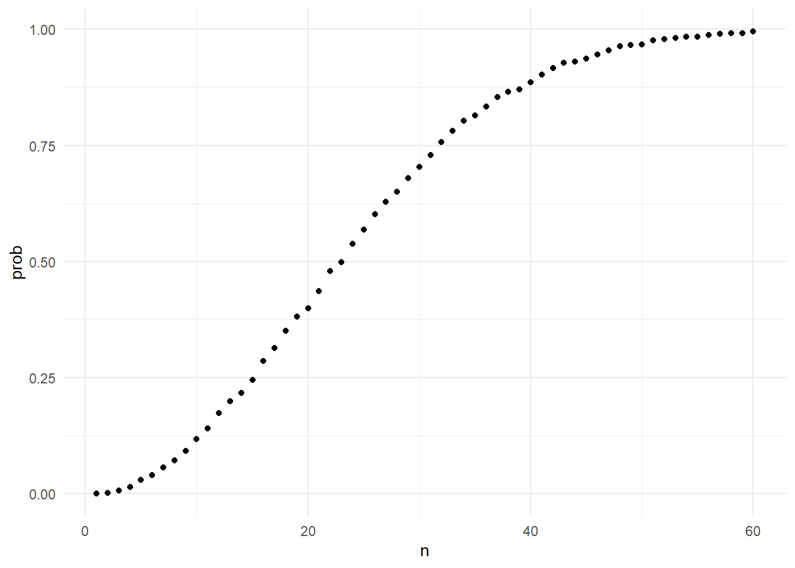
Теперь давайте вычислим точные вероятности, а не будем использовать приближения по методу Монте-Карло. Мы не только получаем точный ответ с помощью математики, но и вычисления выполняются намного быстрее, поскольку нам не нужно проводить эксперименты.
Чтобы упростить математику, вместо вычисления вероятности того, что это произойдет, мы вычислим вероятность того, что этого не произойдет. Для этого мы используем правило умножения.
Давайте начнем с первого лица. Вероятность того, что у человека 1 уникальный день рождения, равна 1. Вероятность того, что у человека 2 уникальный день рождения, учитывая, что у человека 1 он уже был, равна 364/365. Тогда, учитывая, что у первых двух человек уникальные дни рождения, у человека 3 остается 363 дня на выбор. Мы продолжаем этот путь и находим, что шансы всех 50 человек на уникальный день рождения равны:
Мы можем написать функцию, которая делает это для любого числа:
exact_prob <- function(n){
prob_unique <- seq(365,365-n+1)/365
1 - prod( prob_unique)
}
eprob <- sapply(n, exact_prob)
qplot(n, prob) + geom_line(aes(n, eprob), col = "red")+
theme_minimal()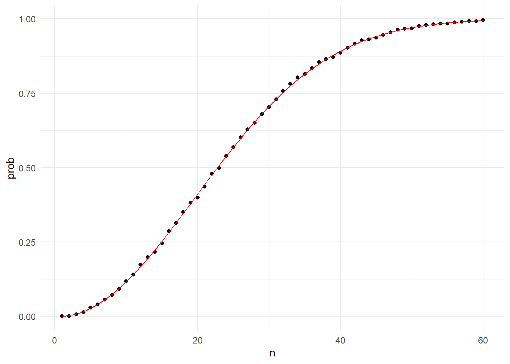
Этот график показывает, что моделирование методом Монте-Карло дало очень хорошую оценку точной вероятности. Если бы не было возможности вычислить точные вероятности, мы все равно смогли бы точно оценить вероятности.
Теория, описанная здесь, требует бесконечного повторения экспериментов. На практике мы не можем этого сделать. В приведенных выше примерах мы использовали B=10,000. Эксперименты методом Монте-Карло показали, что это дает точные оценки. Чем больше это число, тем точнее становится оценка, пока приближение не станет настолько хорошим, что ваш компьютер не сможет заметить разницу. Но в более сложных вычислениях 10 000 может быть и близко недостаточно. Кроме того, для некоторых вычислений 10 000 экспериментов могут оказаться неосуществимыми с вычислительной точки зрения. На практике мы не будем знать, каков ответ, поэтому мы не будем знать, точна ли наша оценка методом Монте-Карло. Мы знаем, что чем больше B, тем лучше аппроксимация. Но насколько большой она должна быть? На самом деле это сложный вопрос, и ответ на него часто требует углубленной теоретической подготовки в области статистики.
Один из практических подходов, который мы опишем здесь, заключается в проверке стабильности оценки. Ниже приведен пример с задачей о дне рождения для группы из 25 человек.
B <- 10^seq(1, 5, len = 100)
compute_prob <- function(B, n=25){
same_day <- replicate(B, same_birthday(n))
mean(same_day)
}
prob <- sapply(B, compute_prob)
qplot(log10(B), prob, geom = "line")+
theme_minimal()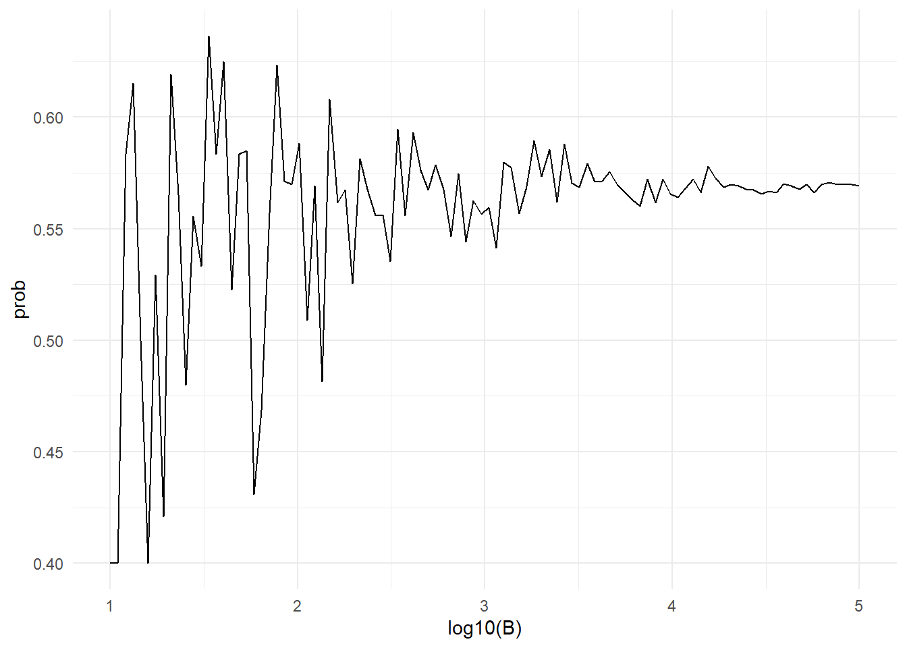
На этом графике мы можем видеть, что значения начинают стабилизироваться (то есть они изменяются менее 0,01) около 1000. Обратите внимание, что точная вероятность, которую мы знаем в данном случае, равна 0,569.
Один шар будет извлечен случайным образом из коробки, содержащей: 3 голубых шара, 5 пурпурных шаров и 7 желтых шаров. Какова вероятность того, что шар будет голубым?
Какова вероятность того, что шар не будет голубым?
Вместо того, чтобы брать только одну ничью, подумайте о двух ничьих. Вы берете вторую ничью, не возвращая первую ничью в поле. Мы называем это выборкой без замены. Какова вероятность того, что первый рисунок будет голубым, а второй - нет?
Теперь повторите эксперимент, но на этот раз, сделав первый снимок и записав цвет, верните его в коробку и встряхните коробку. Мы называем это выборкой с заменой. Какова вероятность того, что первый рисунок будет голубым, а второй - нет?
Два события A и B независимы, если \(\mbox{Pr}(A \mbox{ and } B) = \mbox{Pr}(A) P(B)\). В какой ситуации розыгрыши независимы?
Вы не заменяете ничью.
Вы заменяете ничью.
Ни то, ни другое
Оба
Допустим, вы вытащили из коробки 5 шариков с заменой, и все они были желтыми. Какова вероятность того, что следующий шарик будет желтым?
Если вы шесть раз бросите 6-гранный кубик, какова вероятность того, что вы не увидите 6?
Две команды, скажем, “Селтикс” и “Кэвс”, проводят серию из семи матчей. “Кэвс” - лучшая команда, и у них 60% шансов на победу в каждой игре. Какова вероятность того, что “Селтикс” выиграют хотя бы одну игру?
Создайте симуляцию методом Монте-Карло, чтобы подтвердить свой ответ на предыдущую задачу. Используйте B <- 10000 симуляции. Подсказка: используйте следующий код для генерации результатов первых четырех игр:
celtic_wins <- sample(c(0,1), 4, replace = TRUE, prob = c(0.6, 0.4))
celtic_wins[1] 1 0 1 1“Селтикс” должны выиграть одну из этих 4 игр.
10. Две команды, скажем, Cavs и Warriors, играют в серии чемпионатов из семи игр. Следовательно, первая, выигравшая четыре игры, выигрывает серию. Команды одинаково хороши, поэтому у каждой из них есть шансы на победу в каждой игре 50 на 50. Если Cavs проиграют первую игру, какова вероятность того, что они выиграют серию?
11. Подтвердите результаты предыдущего вопроса с помощью моделирования методом Монте-Карло.
12. Две команды, A и B мы играем в серию из семи игр. Команда A лучше, чем команда B и имеет p>0,5 вероятность выигрыша в каждой игре. Задано значение p, вероятность победы в серии для команды - аутсайдера B может быть вычислена с помощью следующей функции, основанной на моделировании методом Монте-Карло:
prob_win <- function(p){
B <- 10000
result <- replicate(B, {
b_win <- sample(c(1,0), 7, replace = TRUE, prob = c(1-p, p))
sum(b_win)>=4
})
mean(result)
}
prob_win(0.5)[1] 0.5016Используйте функциюsapply, чтобы вычислить вероятность, назовите ее Pr выигрышем для p <- seq(0.5, 0.95, 0.025). Затем нанесите результат на график.
13. Повторите упражнение выше, но теперь зафиксируйте вероятность на p <- 0.75 и вычислите вероятность для разных длин серий: лучшая из 1 игры, 3 игр, 5 игр,… В частности, N <- seq(1, 25, 2). Подсказка: используйте эту функцию:
prob_win <- function(N, p=0.75){
B <- 10000
result <- replicate(B, {
b_win <- sample(c(1,0), N, replace = TRUE, prob = c(1-p, p))
sum(b_win)>=(N+1)/2
})
mean(result)
}В разделе 12.2.2 мы объяснили, почему при обобщении списка числовых значений, таких как высоты, нецелесообразно строить распределение, определяющее пропорцию для каждого возможного результата. Аналогично, для случайной величины, которая может принимать любое значение в непрерывном множестве, невозможно присвоить положительные вероятности бесконечному числу возможных значений. Здесь мы описываем, как математически определить распределения для непрерывных случайных величин, и полезные приближения, часто используемые при анализе данных.
library(tidyverse)
library(dslabs)
data(heights)
x <- heights %>% filter(sex=="Male") %>% pull(height)и определил эмпирическую кумулятивную функцию распределения (eCDF) как
F <- function(a) mean(x<=a)которая для любого значения a дает долю значений в списке, x которые меньше или равны a.
Давайте свяжем eCDF с вероятностью, задав вопрос: если я выберу одного из студентов мужского пола наугад, какова вероятность того, что он выше 70,5 дюймов? Поскольку у каждого учащегося одинаковые шансы быть выбранным, ответ на этот вопрос эквивалентен доле учащихся ростом более 70,5 дюймов. Используя eCDF, мы получаем ответ, набрав:
1 - F(70)[1] 0.3768473CDF - это версия eCDF, которая присваивает теоретические вероятности для каждого a вместо пропорций, вычисленных на основе данных. Хотя, как мы только что продемонстрировали, пропорции, вычисленные на основе данных, можно использовать для определения вероятностей случайной величины. В частности, CDF для случайного результата X определяет для любого числа a , вероятность наблюдения значения , большего , чем a .
F(a)=Pr(X) ,,
Как только CDF определен, мы можем использовать его для вычисления вероятности любого подмножества значений. Например, вероятность того, что учащийся окажется между ростом a и высотой b , равна:
\(\mbox{Pr}(a < X \leq b) = F(b)-F(a)\)
Поскольку таким образом мы можем вычислить вероятность любого возможного события, CDF определяет распределение вероятностей.
Математический результат, который на самом деле очень полезен на практике, заключается в том, что для большинства CDF мы можем определить функцию, вызвать ее f(x) это позволяет нам построить CDF с использованием исчисления, подобного этому:
\(F(b) - F(a) = \int_a^b f(x)\,dx\)
f(x) упоминается как функция плотности вероятности. Интуиция подсказывает, что даже для непрерывных результатов мы можем определить крошечные интервалы, почти такие же маленькие, как точки, которые имеют положительные вероятности. Если мы представим размер этих интервалов как основание прямоугольника, то функция плотности вероятности f определяет высоту прямоугольника таким образом, чтобы суммирование площадей этих прямоугольников приближало вероятность F(b)−F(a) . Эта сумма может быть записана как сумма Реймана, аппроксимируемая интегралом:

Примером такого непрерывного распределения является нормальное распределение. Как мы видели в 12.4 функция плотности вероятности задается:
\[f(x) = e^{-\frac{1}{2}\left( \frac{x-m}{s} \right)^2}\]
Кумулятивное распределение для нормального распределения определяется математической формулой, которая в R может быть получена с помощью функции pnorm. Мы говорим, что случайная величина распределяется нормально со средним значением m и стандартным отклонением s , если ее распределение вероятностей определяется:
{F(a) = pnorm(a, m, s)}
Это полезно, потому что, если мы хотим использовать обычное приближение, скажем, для определения роста, нам не нужен весь набор данных для ответа на такие вопросы, как: какова вероятность того, что случайно выбранный студент выше 70 дюймов? Нам просто нужны средняя высота и стандартное отклонение:
m <- mean(x)
s <- sd(x)
1 - pnorm(70.5, m, s)[1] 0.371369Нормальное распределение выводится математически: нам не нужны данные для его определения. Для практикующих специалистов по обработке данных почти все, что мы делаем, связано с данными. Данные всегда, с технической точки зрения, дискретны. Например, мы могли бы рассматривать наши данные о росте как категориальные, где каждый конкретный рост относится к уникальной категории. Распределение вероятностей определяется долей студентов, сообщивших о каждом росте. Вот график этого распределения вероятностей:

В то время как большинство студентов округлили свой рост до ближайшего дюйма, другие сообщили значения с большей точностью. Один студент сообщил, что его рост равен 69,6850393700787, что составляет 177 сантиметров. Вероятность, присвоенная этой высоте, равна 0,001, или 1 к 812. Вероятность для 70 дюймов намного выше и составляет 0,106, но действительно ли имеет смысл считать, что вероятность того, что размер ровно 70 дюймов отличается от 69,6850393700787? Очевидно, что для целей анализа данных гораздо полезнее рассматривать этот результат как непрерывную числовую переменную, имея в виду, что очень немногие люди, или, возможно, ни один из них, не имеют роста ровно в 70 дюймов, и что причина, по которой мы получаем больше значений в 70, заключается в том, что люди округляются с точностью до ближайшего дюйма.
При непрерывных распределениях вероятность сингулярного значения даже не определена. Например, не имеет смысла спрашивать, какова вероятность того, что нормально распределенное значение равно 70. Вместо этого мы определяем вероятности для интервалов. Таким образом, мы могли бы спросить, какова вероятность того, что кто-то находится в диапазоне от 69,5 до 70,5.
В таких случаях, как высота, в которых данные округлены, нормальная аппроксимация особенно полезна, если мы имеем дело с интервалами, включающими ровно одно круглое число. Например, нормальное распределение полезно для аппроксимации доли студентов, сообщающих значения в интервалах, подобных следующим трем:
mean(x <= 68.5) - mean(x <= 67.5)[1] 0.114532mean(x <= 69.5) - mean(x <= 68.5)[1] 0.1194581mean(x <= 70.5) - mean(x <= 69.5)[1] 0.1219212Обратите внимание, насколько близко мы подходим к нормальному приближению:
pnorm(68.5, m, s) - pnorm(67.5, m, s) [1] 0.1031077pnorm(69.5, m, s) - pnorm(68.5, m, s) [1] 0.1097121pnorm(70.5, m, s) - pnorm(69.5, m, s) [1] 0.1081743Однако аппроксимация не так полезна для других интервалов. Например, обратите внимание, как аппроксимация нарушается, когда мы пытаемся оценить:
mean(x <= 70.9) - mean(x<=70.1)[1] 0.02216749pnorm(70.9, m, s) - pnorm(70.1, m, s)[1] 0.08359562В общем, мы называем эту ситуацию дискретизация. Хотя истинное распределение высот является непрерывным, сообщаемые высоты, как правило, чаще встречаются при дискретных значениях, в данном случае из-за округления. До тех пор, пока мы знаем, как справляться с этой реальностью, нормальное приближение все еще может быть очень полезным инструментом.
Для категориальных распределений мы можем определить вероятность категории. Например, выпавший кубик, назовем его X может быть 1, 2, 3, 4, 5 или 6. Вероятность 4 определяется как: \(\mbox{Pr}(X=4) = 1/6\)
Затем CDF можно легко определить:
\[ F(4) = \mbox{Pr}(X\leq 4) = \mbox{Pr}(X = 4) + \mbox{Pr}(X = 3) + \mbox{Pr}(X = 2) + \mbox{Pr}(X = 1) \]
Хотя для непрерывных распределений вероятность единственного значения Pr(X=x) не определено, существует теоретическое определение, которое имеет аналогичную интерпретацию. Плотность вероятности при x определяется как функция f(a) такая, что:
\(F(a) = \mbox{Pr}(X\leq a) = \int_{-\infty}^a f(x)\, dx\)
Для тех, кто знаком с математикой, помните, что интеграл связан с суммой: это сумма столбцов с шириной, приближающейся к 0. Если вы не знакомы с математикой, вы можете подумать о f(x) как кривая, для которой площадь под этой кривой равна значению a , дает вам вероятность Pr(X≤a) .
Например, чтобы использовать нормальное приближение для оценки вероятности того, что кто-то будет выше 76 дюймов, мы используем:
1 - pnorm(76, m, s)[1] 0.03206008что математически является серой областью ниже:

Кривая, которую вы видите, представляет собой плотность вероятности для нормального распределения. В R мы получаем это с помощью функции dnorm.
Хотя может быть не сразу очевидно, почему полезно знать о плотностях вероятности, понимание этой концепции будет важно для тех, кто хочет подогнать модели к данным, для которых недоступны предопределенные функции.
R предоставляет функции для генерации нормально распределенных результатов. В частности, rnorm функция принимает три аргумента: размер, среднее значение (по умолчанию 0) и стандартное отклонение (по умолчанию 1) и выдает случайные числа. Вот пример того, как мы могли бы генерировать данные, похожие на наши заявленные высоты:
x <- heights %>% filter(sex=="Male") %>% pull(height)
n <- length(x)
m <- mean(x)
s <- sd(x)
simulated_heights <- rnorm(n, m, s)Неудивительно, что распределение выглядит нормальным:
simulated_heights_df <- data.frame(height_nd = rnorm(n, m, s))
ggplot(simulated_heights_df,aes(height_nd)) +
geom_histogram(color = "black")+
theme_minimal()`stat_bin()` using `bins = 30`. Pick better value with `binwidth`.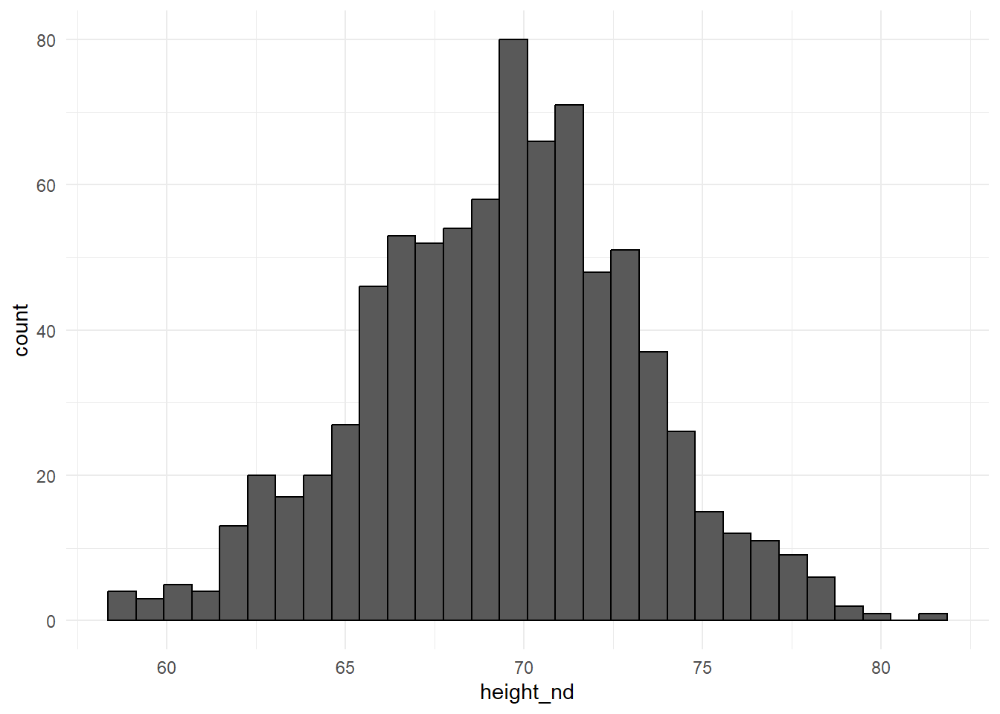
Это одна из наиболее полезных функций в R, поскольку она позволит нам генерировать данные, имитирующие естественные события, и отвечать на вопросы, связанные с тем, что может произойти случайно, путем моделирования методом Монте-Карло.
Если, например, мы выберем случайным образом 800 мужчин, каково распределение самых высоких людей? Насколько редко встречаются люди с ростом в семь футов в группе из 800 мужчин? Следующее моделирование методом Монте-Карло помогает нам ответить на этот вопрос:
B <- 10000
tallest <- replicate(B, {
simulated_data <- rnorm(800, m, s)
max(simulated_data)
})Встречается довольно редко:
mean(tallest >= 7*12)[1] 0.0209Вот результирующее распределение:

Обратите внимание, что это выглядит ненормально.
Нормальное распределение - не единственное полезное теоретическое распределение. Другими непрерывными распределениями, с которыми мы можем столкнуться, являются t Стьюдента, хи-квадрат, экспоненциальное, гамма, бета и бета-биномиальное. R предоставляет функции для вычисления плотности, квантилей, кумулятивных функций распределения и для генерации симуляций методом Монте-Карло. R использует соглашение, которое позволяет нам запоминать названия, а именно использует буквы d, q, p и r перед сокращением для обозначения распределения. Мы уже видели функции dnorm, pnorm и rnorm для нормального распределения. Функции qnorm дают нам квантили. Поэтому мы можем нарисовать распределение, подобное этому:
x <- seq(-4, 4, length.out = 100)
qplot(x, f, geom = "line", data = data.frame(x, f = dnorm(x)))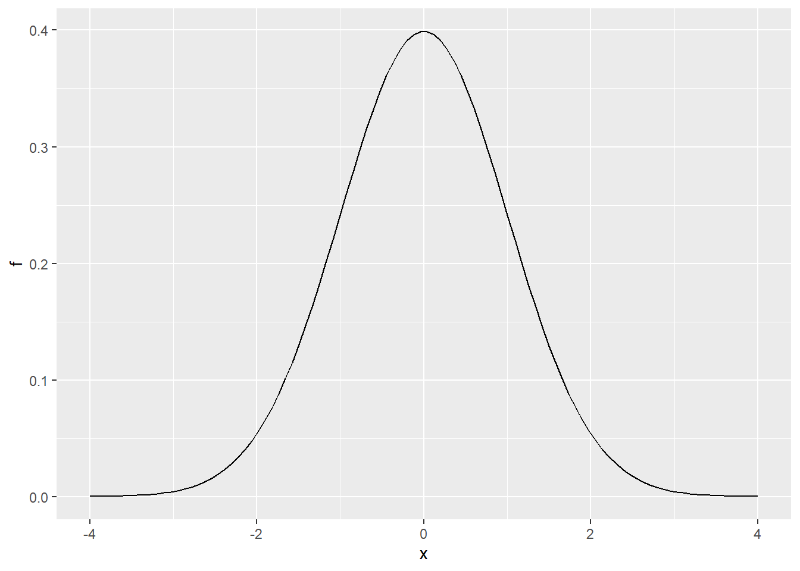
Предположим, что распределение роста женщин приближено к нормальному распределению со средним значением 64 дюйма и стандартным отклонением 3 дюйма. Если мы выберем женщину наугад, какова вероятность того, что она ростом 5 футов или ниже?
Предположим, что распределение роста женщин аппроксимируется нормальным распределением со средним значением 64 дюйма и стандартным отклонением 3 дюйма. Если мы выберем женщину наугад, какова вероятность того, что она 6 футов или выше?
Предположим, что распределение роста женщин приближено к нормальному распределению со средним значением 64 дюйма и стандартным отклонением 3 дюйма. Если мы выберем женщину наугад, какова вероятность того, что ее рост составляет от 61 до 67 дюймов?
Повторите упражнение, описанное выше, но переведите все значения в сантиметры. То есть умножьте каждый рост, включая стандартное отклонение, на 2,54. Каков ответ на данный момент?
Обратите внимание, что ответ на вопрос не меняется при изменении единиц измерения. Это имеет смысл, поскольку стандартные отклонения от среднего для элемента в списке не зависят от того, какие единицы измерения мы используем. На самом деле, если вы присмотритесь повнимательнее, то заметите, что 61 и 67 находятся на расстоянии 1 SD от среднего значения. Вычислите вероятность того, что случайно выбранная, нормально распределенная случайная величина находится в пределах 1 SD от среднего значения.
Чтобы увидеть математические расчеты, объясняющие, почему ответы на вопросы 3, 4 и 5 одинаковы, предположим, что у нас есть случайная величина со средним значением m и стандартная ошибка Предположим, мы задаем вопрос о вероятности X быть меньше или равно a. Помните, что по определению, a является (a−m)/s стандартные отклонения вдали от среднего значения m. Вероятность равна:
\(\mbox{Pr}(X \leq a)\)
Теперь мы вычитаем μс обеих сторон, а затем разделите обе стороны на σ :
\(\mbox{Pr}\left(\frac{X-m}{s} \leq \frac{a-m}{s} \right)\)
Величина слева является стандартной случайной величиной. Ее среднее значение равно 0, а стандартная ошибка равна 1. Мы будем называть ее Z :
\(\mbox{Pr}\left(Z \leq \frac{a-m}{s} \right)\)
Итак, независимо от единиц измерения, вероятность X ≤ a совпадает с вероятностью того, что стандартная нормальная переменная меньше (a−m)/s . Если mu - среднее значение и sigma - стандартная ошибка, какой из следующих R-кодов даст нам правильный ответ в любой ситуации:
mean(X<=a)pnorm((a - m)/s)pnorm((a - m)/s, m, s)pnorm(a)Представьте, что распределение взрослых мужчин приблизительно нормальное с ожидаемым значением 69 и стандартным отклонением 3. Какого роста мужчина в 99-м процентиле? Подсказка: используйте qnorm.
Распределение баллов IQ приблизительно соответствует нормальному распределению. Среднее значение равно 100, а стандартное отклонение равно 15. Предположим, вы хотите узнать распределение самого высокого IQ по всем выпускным классам, если в вашем школьном округе родилось по 10 000 человек в каждом. Запустите моделирование методом Монте-Карло с B=1000 получением 10 000 баллов IQ и сохранением самого высокого. Составьте гистограмму.
ggplot2 / 2.2 Customizing PlotsКлючевые моменты
В ggplot2 графики создаются путем добавления слоев к объекту ggplot: DATA %>% ggplot() + LAYER_1 + LAYER_2 + … + LAYER_N. Слой геометрии определяет тип графика и принимает формат geom_X, где X - тип графика. Эстетические отображения описывают, как свойства данных связаны с особенностями графика (положение оси, цвет, размер и т.д.).
Определите эстетические отображения с помощью функции aes(). aes() использует имена переменных из компонента object (например, total, а не murders$total). geom_point() создает диаграмму рассеяния и требует эстетических отображений x и y. geom_text() и geom_label() добавляют текст к диаграмме рассеяния и требуют эстетического отображения x, y и меток. Чтобы определить, какие эстетические отображения требуются для геометрии, прочтите файл справки по этой геометрии. Вы можете добавлять слои с различными эстетическими отображениями к одному и тому же графику.
library(tidyverse)
library(dslabs)
data(murders)
#|
murders %>% ggplot() +
geom_point(aes(x = population/10^6, y = total))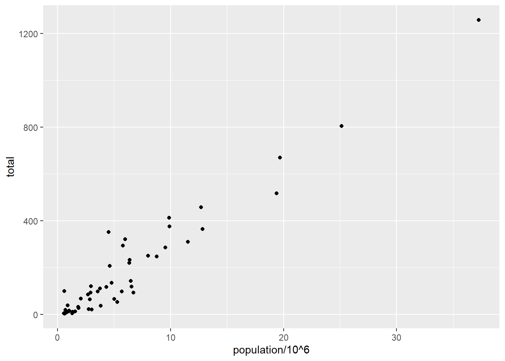
# add points layer to predefined ggplot object
p <- ggplot(data = murders)
p + geom_point(aes(population/10^6, total))
# add text layer to scatterplot
p + geom_point(aes(population/10^6, total)) +
geom_text(aes(population/10^6, total, label = abb))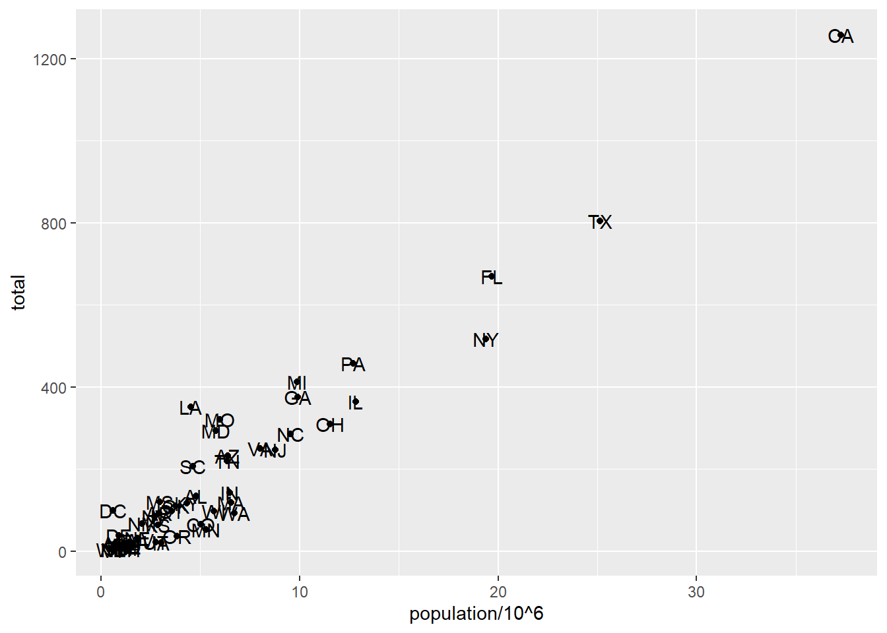
Ключевые моменты
Преобразуйте ось x в логарифмический масштаб с помощью scale_x_continuous(trans = "log10") или scale_x_log10(). Аналогичные функции существуют и для оси y.
Добавьте заголовки осей с помощью функций xlab() и ylab(). Добавьте заголовок графика с помощью функции ggtitle().
Добавьте цветовое отображение, которое окрашивает точки с помощью переменной, определив аргумент col в aes(). Чтобы раскрасить все точки одинаково, определите col вне aes().
Добавьте линию с геометрией geom_abline(). geom_abline() принимает аргументы slope (по умолчанию = 1) и intercept (по умолчанию = 0). Измените цвет с помощью col или color и тип линии с помощью lty. Размещение линейного слоя после точечного слоя приведет к наложению линии поверх точек. Чтобы наложить точки на линию, поместите линейный слой перед точечным слоем. Существует множество дополнительных способов настройки вашего графика, которые можно найти в документации ggplot2, шпаргалке или в Интернете. Например, вы можете изменить заголовок легенды с помощью scale_color_discrete().
# define p
library(tidyverse)
library(dslabs)
data(murders)
p <- murders %>% ggplot(aes(population/10^6, total, label = abb))
# log base 10 scale the x-axis and y-axis
p + geom_point(size = 3) +
geom_text(nudge_x = 0.05) +
scale_x_continuous(trans = "log10") +
scale_y_continuous(trans = "log10")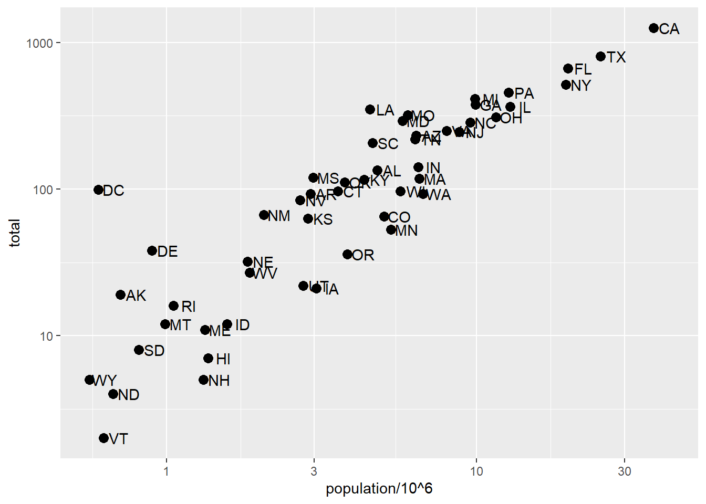
# efficient log scaling of the axes
p + geom_point(size = 3, alpha = 0.4, col = 'darkgreen') +
geom_text(nudge_x = 0.075) +
scale_x_log10() +
scale_y_log10() +
theme_minimal()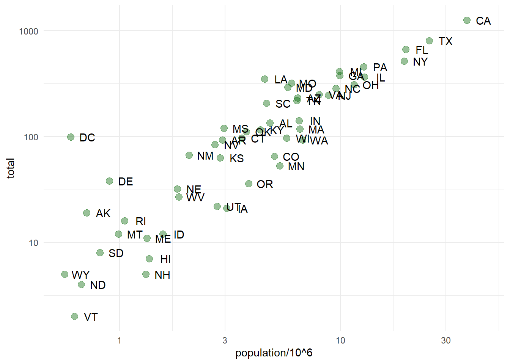
p + geom_point(size = 3) +
geom_text(nudge_x = 0.075) +
scale_x_log10() +
scale_y_log10() +
xlab("Population in millions (log scale)") +
ylab("Total number of murders (log scale)") +
ggtitle("US Gun Murders in 2010")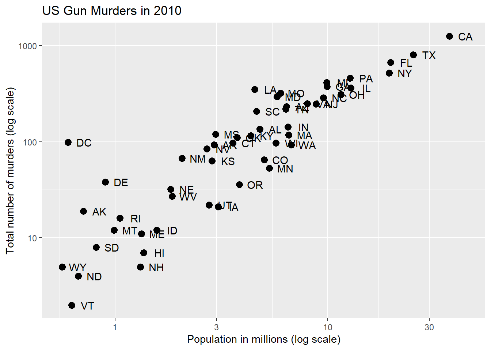
# redefine p to be everything except the points layer
p <- murders %>%
ggplot(aes(population/10^6, total, label = abb)) +
geom_text(nudge_x = 0.075) +
scale_x_log10() +
scale_y_log10() +
xlab("Population in millions (log scale)") +
ylab("Total number of murders (log scale)") +
ggtitle("US Gun Murders in 2010")
# make all points blue
p + geom_point(size = 3, color = "blue")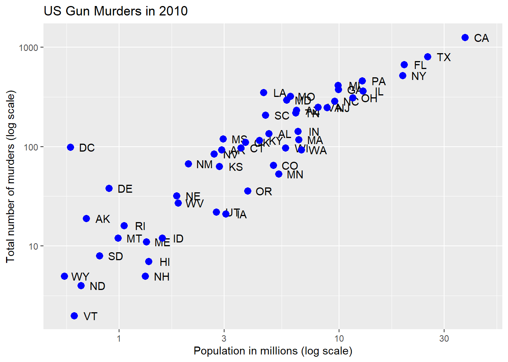
# color points by region
p + geom_point(aes(col = region), size = 3)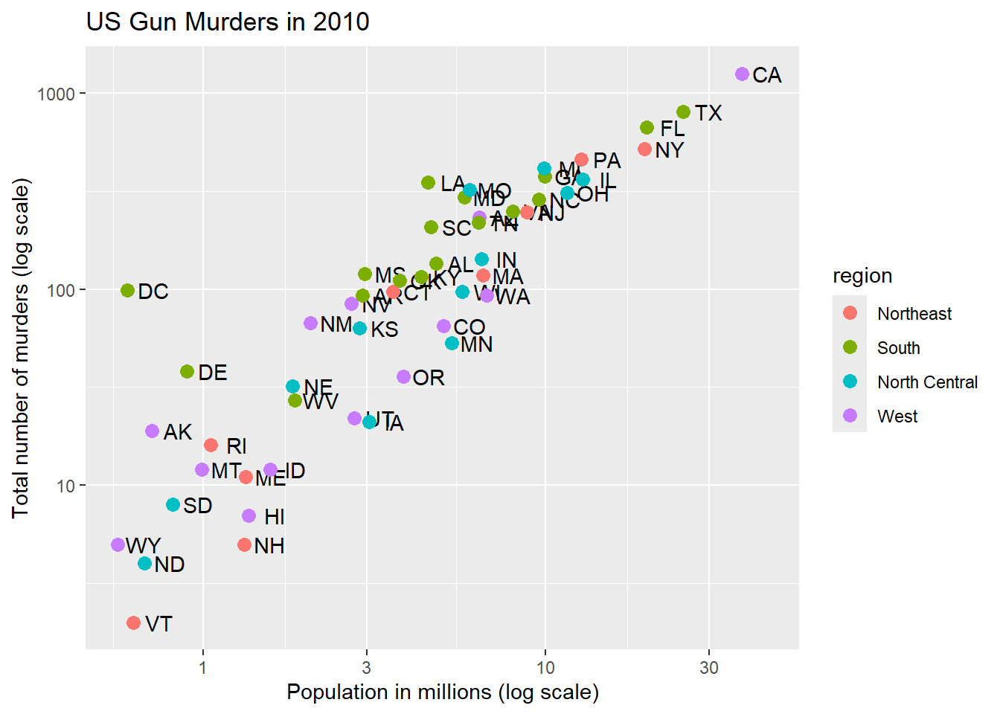
# define average murder rate
r <- murders %>%
summarize(rate = sum(total) / sum(population) * 10^6) %>%
pull(rate)
# basic line with average murder rate for the country
p <- p + geom_point(aes(col = region), size = 3) +
geom_abline(intercept = log10(r)) # slope is default of 1
# change line to dashed and dark grey, line under points
p +
geom_abline(intercept = log10(r), lty = 2, color = "darkgrey") +
geom_point(aes(col = region), size = 3)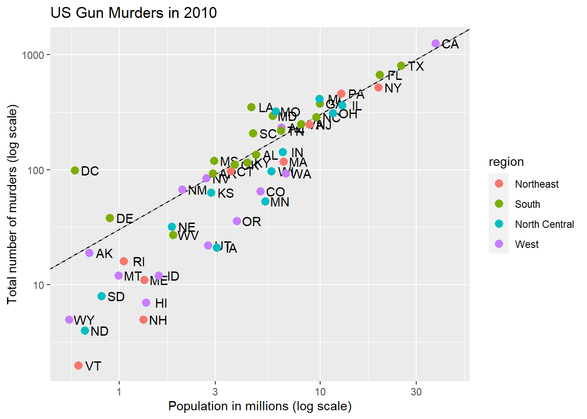
p + scale_color_discrete(name = "Region") # capitalize legend title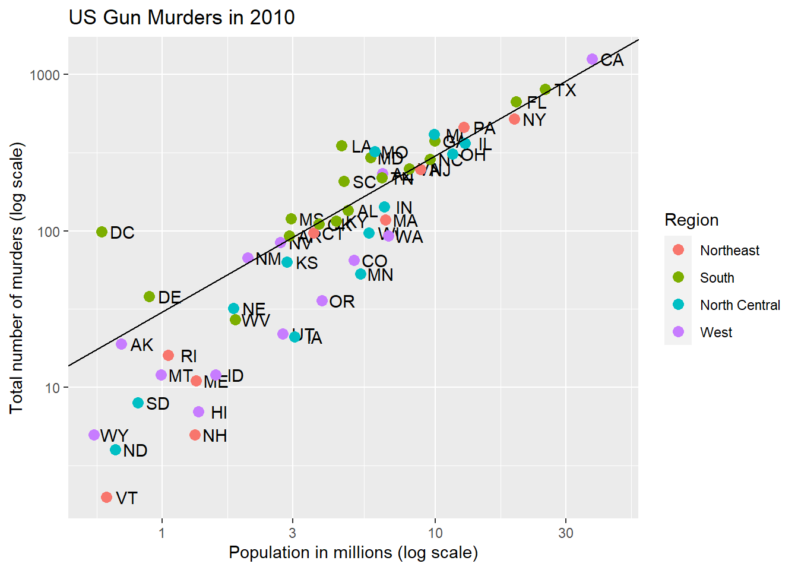
Ключевые моменты
Стиль графика ggplot можно изменить с помощью функции theme(). Пакет ggthemes добавляет дополнительные темы. Пакет ggrepel включает в себя геометрию, которая отталкивает текстовые метки, гарантируя, что они не перекрываются друг с другом: geom_text_repel().
# theme used for graphs in the textbook and course
library(dslabs)
ds_theme_set()
# themes from ggthemes
library(ggthemes)
p + theme_economist() # style of the Economist magazine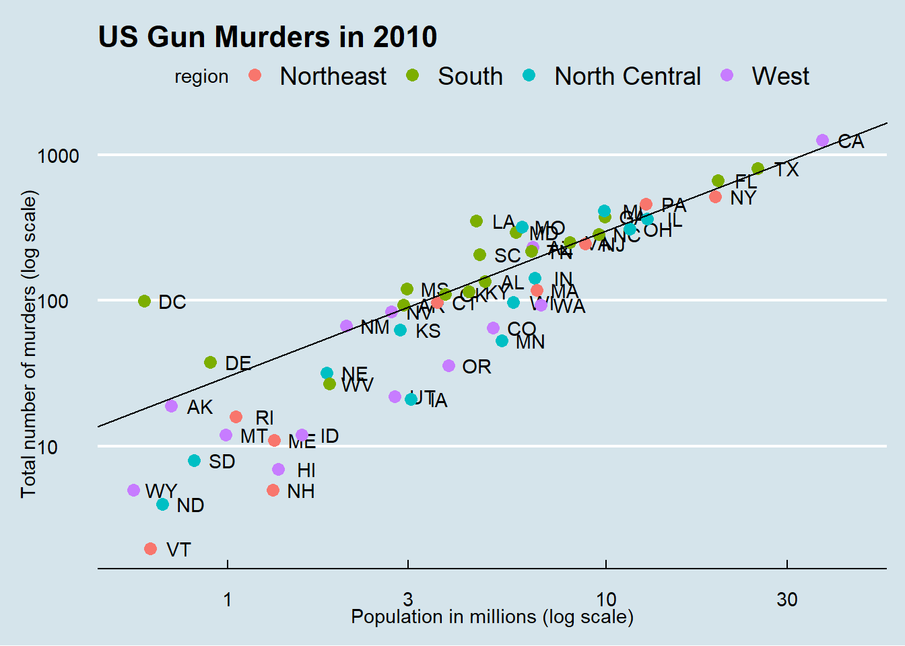
p + theme_fivethirtyeight() # style of the FiveThirtyEight website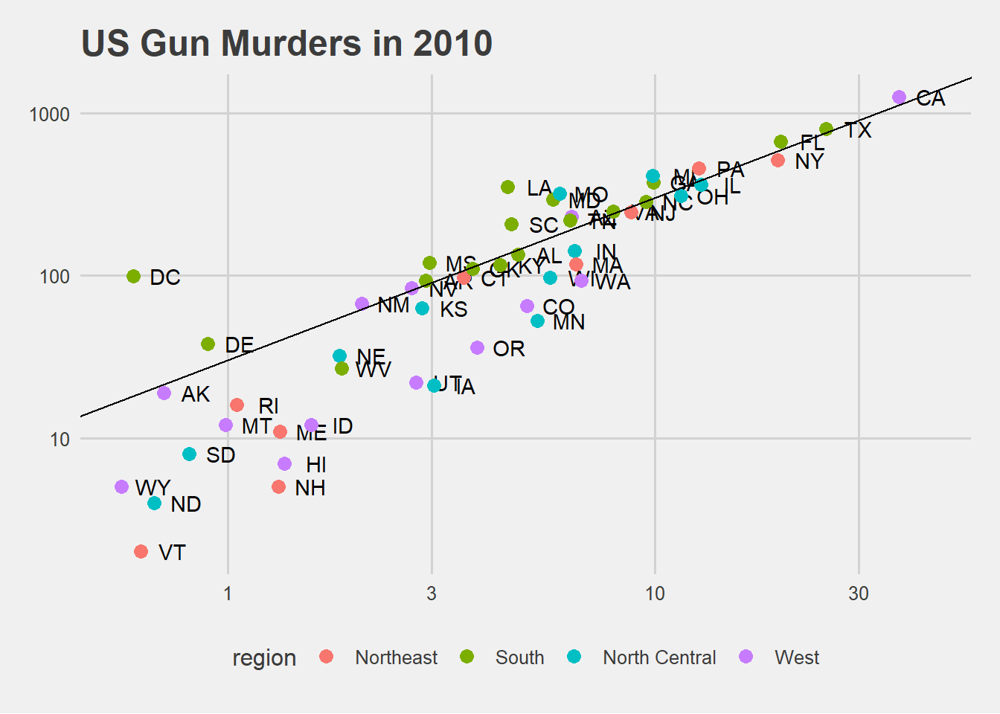
# load libraries
library(tidyverse)
library(ggrepel)
library(ggthemes)
library(dslabs)
data(murders)
# define the intercept
r <- murders %>%
summarize(rate = sum(total) / sum(population) * 10^6) %>%
.$rate
# make the plot, combining all elements
murders %>%
ggplot(aes(population/10^6, total, label = abb)) +
geom_abline(intercept = log10(r), lty = 2, color = "darkgrey") +
geom_point(aes(col = region), size = 3, alpha = 0.6) +
geom_text_repel() +
scale_x_log10() +
scale_y_log10() +
xlab("Population in millions (log scale)") +
ylab("Total number of murders (log scale)") +
ggtitle("US Gun Murders in 2010") +
scale_color_discrete(name = "Region") +
theme_grey()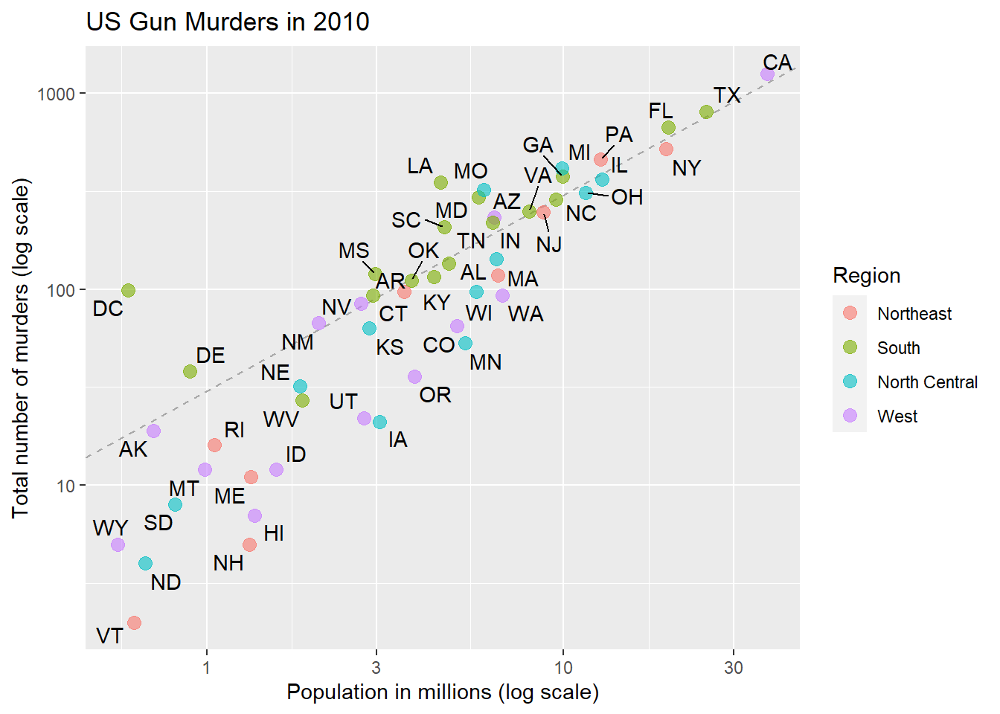
Ключевые точки
geom_histogram() создает гистограмму. Используйте аргумент bandwidth для изменения ширины ячеек, аргумент fill для изменения цвета заливки полосы и аргумент col для изменения цвета контура полосы.
geom_density() создает плавные графики плотности. Измените цвет заливки графика с помощью аргумента fill.
geom_qq() создает график квантиль-квантиль. Для этой геометрии требуется аргумент sample. По умолчанию данные сравниваются со стандартным нормальным распределением со средним значением 0 и стандартным отклонением 1. Это можно изменить с помощью аргумента dparams или масштабировать выборку данных. Графики могут быть расположены рядом друг с другом с помощью функции grid.arrange() из пакета gridExtra. Сначала создайте графики и сохраните их в объектах (p1, p2, …). Затем передайте объекты построения в grid.arrange().
# load heights data
library(tidyverse)
library(dslabs)
data(heights)
# define p
p <- heights %>%
filter(sex == "Male") %>%
ggplot(aes(x = height))
# basic histograms
p + geom_histogram()`stat_bin()` using `bins = 30`. Pick better value with `binwidth`.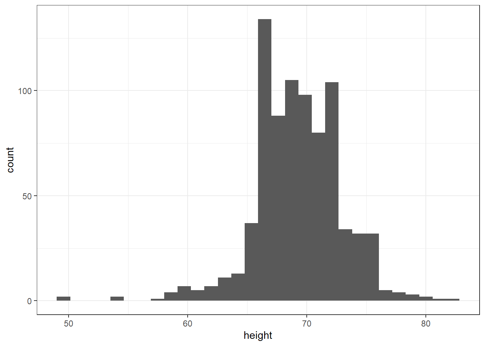
p + geom_histogram(binwidth = 1)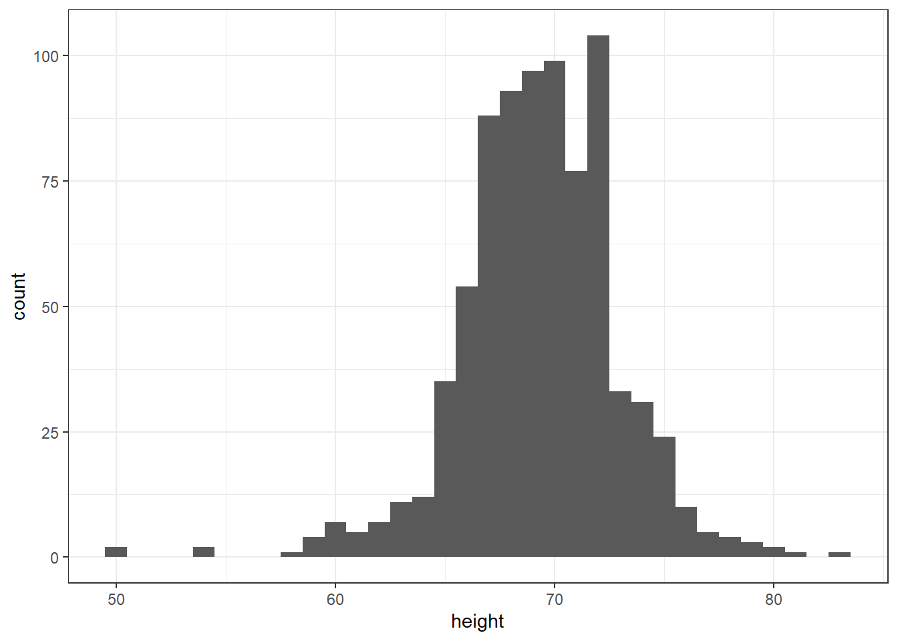
# histogram with blue fill, black outline, labels and title
p + geom_histogram(binwidth = 1, fill = "blue", col = "black", alpha = 0.5) +
xlab("Male heights in inches") +
ggtitle("Histogram")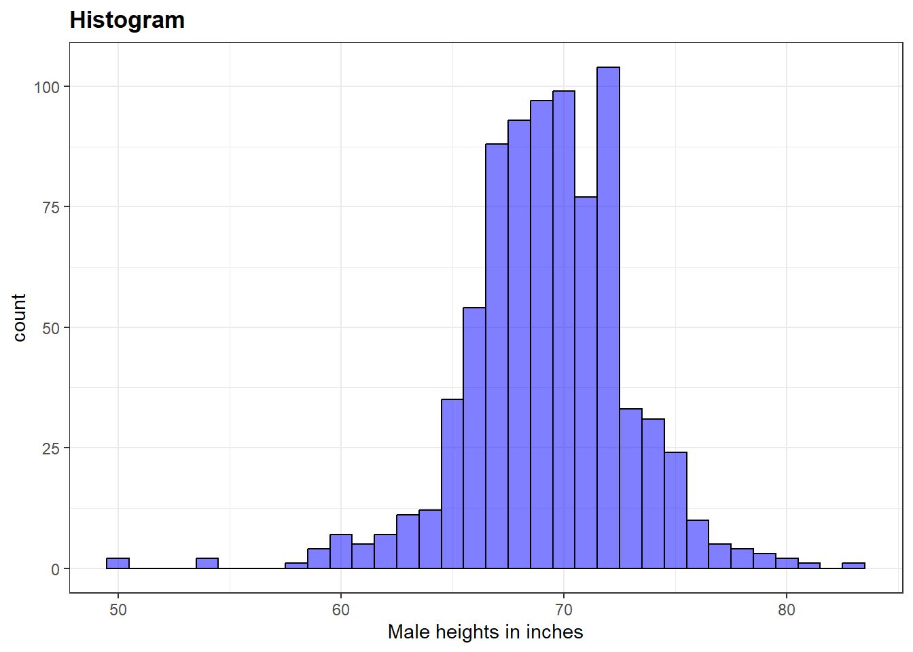
p + geom_density()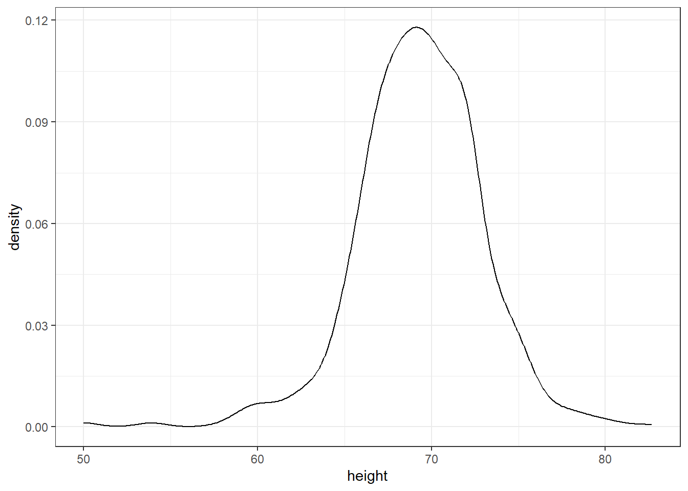
p + geom_density(fill = "blue", alpha = 0.5)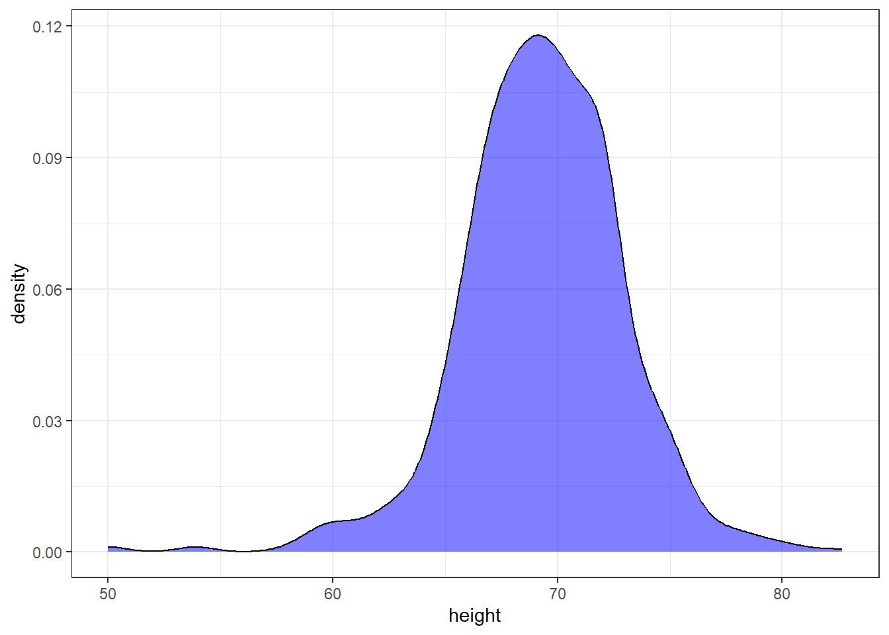
Теперь мы собираемся составить графики плотности для мужчин и женщин отдельно. Мы можем сделать это, используя аргумент group в сопоставлении aes. Поскольку каждой точке будет присвоена разная плотность в зависимости от переменной из набора данных, нам нужно сопоставить ее в рамках aes.
heights %>%
ggplot(aes(height, group = sex))+
geom_density()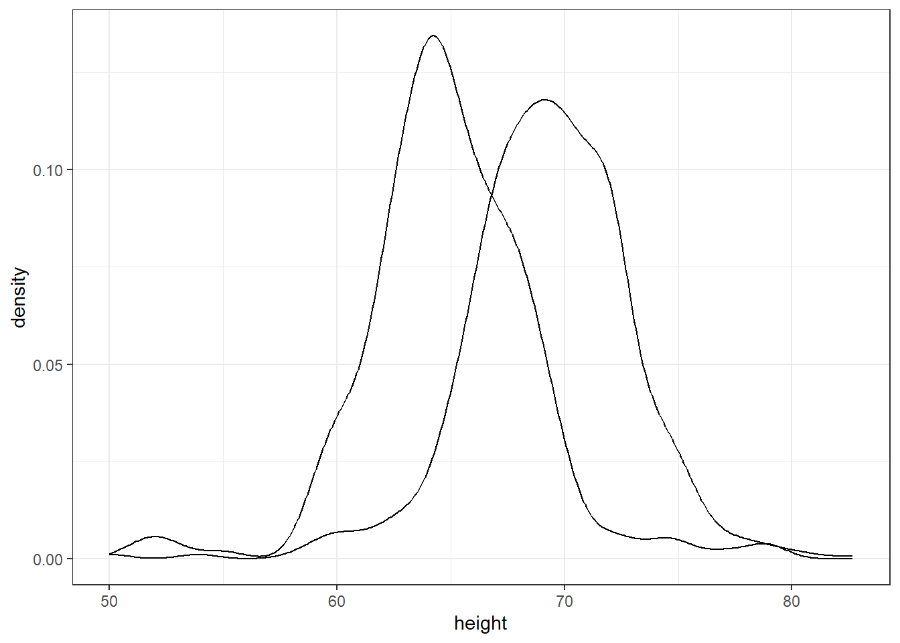
# basic QQ-plot
p <- heights %>% filter(sex == "Male") %>%
ggplot(aes(sample = height))
p + geom_qq()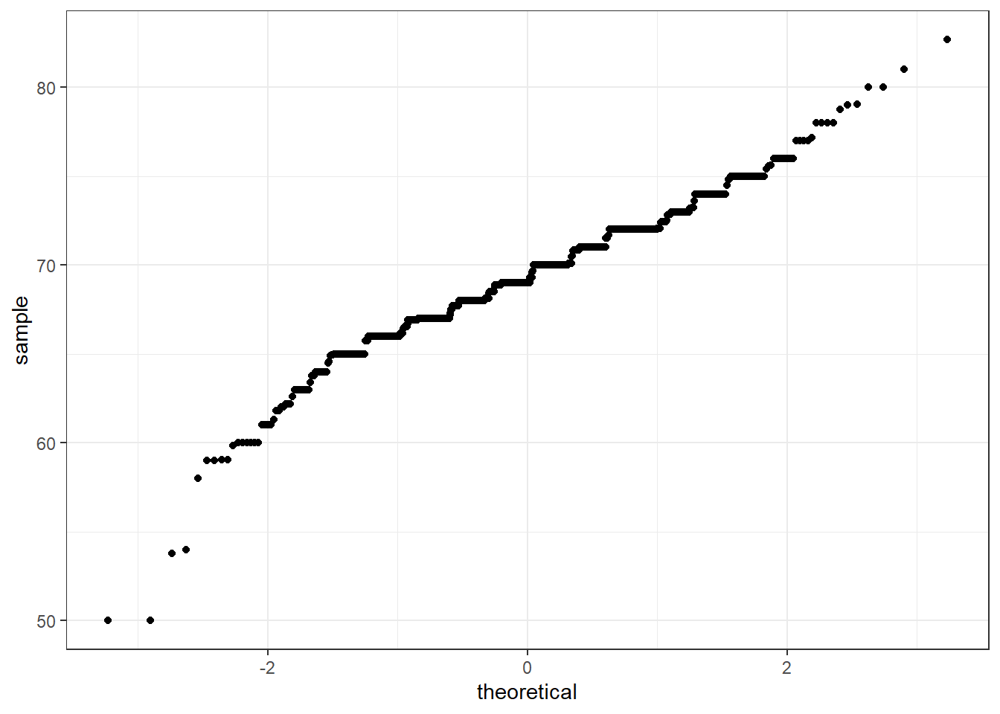
# QQ-plot against a normal distribution with same mean/sd as data
params <- heights %>%
filter(sex == "Male") %>%
summarize(mean = mean(height), sd = sd(height))
p + geom_qq(dparams = params) +
geom_abline()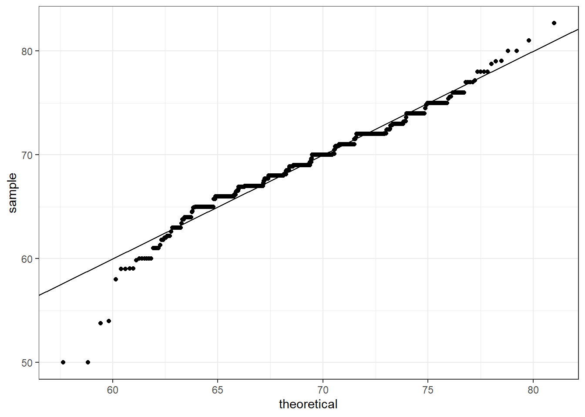
# QQ-plot of scaled data against the standard normal distribution
heights %>%
ggplot(aes(sample = scale(height))) +
geom_qq() +
geom_abline()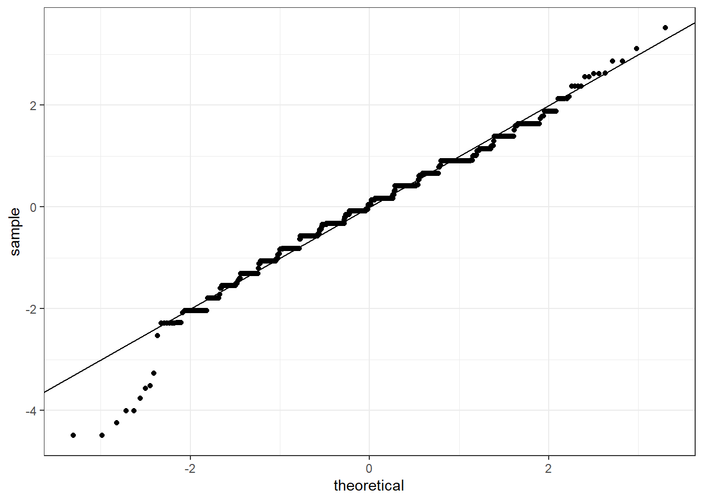
# define plots p1, p2, p3
p <- heights %>% filter(sex == "Male") %>% ggplot(aes(x = height))
p1 <- p + geom_histogram(binwidth = 1, fill = "blue", col = "black")
p2 <- p + geom_histogram(binwidth = 2, fill = "blue", col = "black")
p3 <- p + geom_histogram(binwidth = 3, fill = "blue", col = "black")
# arrange plots next to each other in 1 row, 3 columns
library(gridExtra)
Присоединяю пакет: 'gridExtra'Следующий объект скрыт от 'package:dplyr':
combinegrid.arrange(p1, p2, p3, ncol = 3)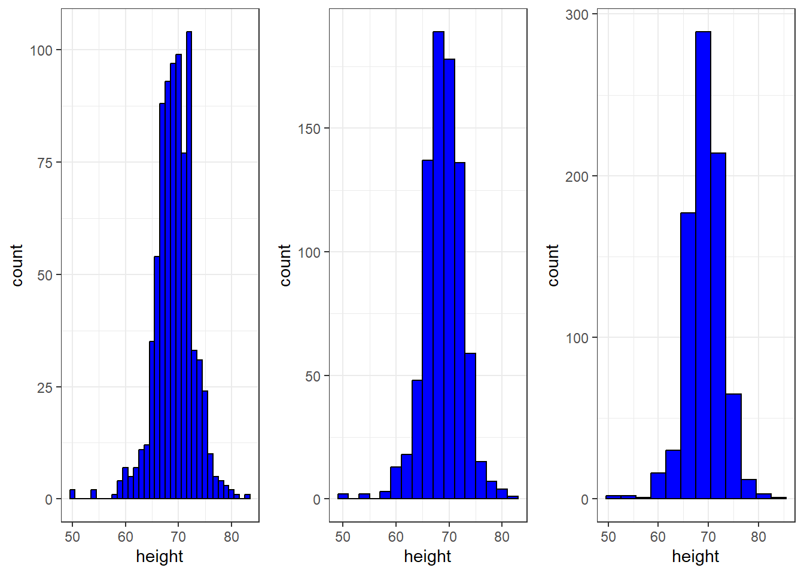
10.1 Case study: new insights on poverty
В разделе 3 вы ознакомитесь с тематическим исследованием, включающим данные Фонда Gapminder о тенденциях в мировом здравоохранении и экономике.
После завершения раздела 3 вы получите:
как Ханс Рослинг и Фонд Gapminder используют эффективную визуализацию данных для передачи тенденций, основанных на данных.
научитесь применять методы ggplot2 из предыдущего раздела для ответа на вопросы с использованием данных.
поймёте, как фиксированные масштабы на графиках могут облегчить сравнение. иметь возможность изменять графики для улучшения визуализации данных.
Ключевые моменты
Подборку статистических данных по мировому здравоохранению и экономике из проекта Gapminder можно найти в пакете dslabs в виде данных (gapminder).
У большинства людей есть неправильные представления о мировом здравоохранении и экономике, которые можно устранить, рассмотрев реальные данные.
# load and inspect gapminder data
library(dslabs)
data(gapminder)
head(gapminder) country year infant_mortality life_expectancy fertility
1 Albania 1960 115.40 62.87 6.19
2 Algeria 1960 148.20 47.50 7.65
3 Angola 1960 208.00 35.98 7.32
4 Antigua and Barbuda 1960 NA 62.97 4.43
5 Argentina 1960 59.87 65.39 3.11
6 Armenia 1960 NA 66.86 4.55
population gdp continent region
1 1636054 NA Europe Southern Europe
2 11124892 13828152297 Africa Northern Africa
3 5270844 NA Africa Middle Africa
4 54681 NA Americas Caribbean
5 20619075 108322326649 Americas South America
6 1867396 NA Asia Western Asia# compare infant mortality in Sri Lanka and Turkey
gapminder %>%
filter(year == 2015 & country %in% c("Sri Lanka", "Turkey")) %>%
select(country, infant_mortality) country infant_mortality
1 Sri Lanka 8.4
2 Turkey 11.6Ключевые моменты
Распространенное мировоззрение состоит в том, что мир разделен на две группы стран: Западный мир: высокая ожидаемая продолжительность жизни, низкий уровень рождаемости
Развивающийся мир: более низкая ожидаемая продолжительность жизни, более высокий коэффициент рождаемости
Данные Gapminder могут быть использованы для оценки достоверности этого представления.
Диаграмма зависимости ожидаемой продолжительности жизни от уровня рождаемости в 1962 году позволяет предположить, что эта точка зрения была обоснована в реальности 50 лет назад. Так ли это по-прежнему сегодня?
# basic scatterplot of life expectancy versus fertility
ds_theme_set() # set plot theme
filter(gapminder, year == 1962) %>%
ggplot(aes(fertility, life_expectancy)) +
geom_point()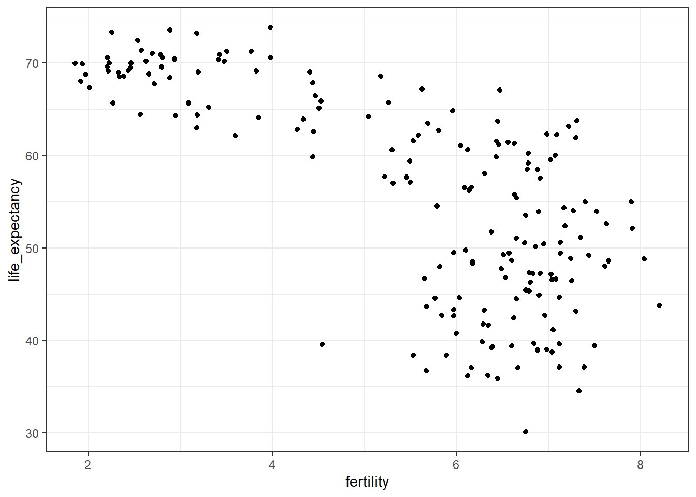
# add color as continent
filter(gapminder, year == 1962) %>%
ggplot(aes(fertility, life_expectancy, color = continent)) +
geom_point()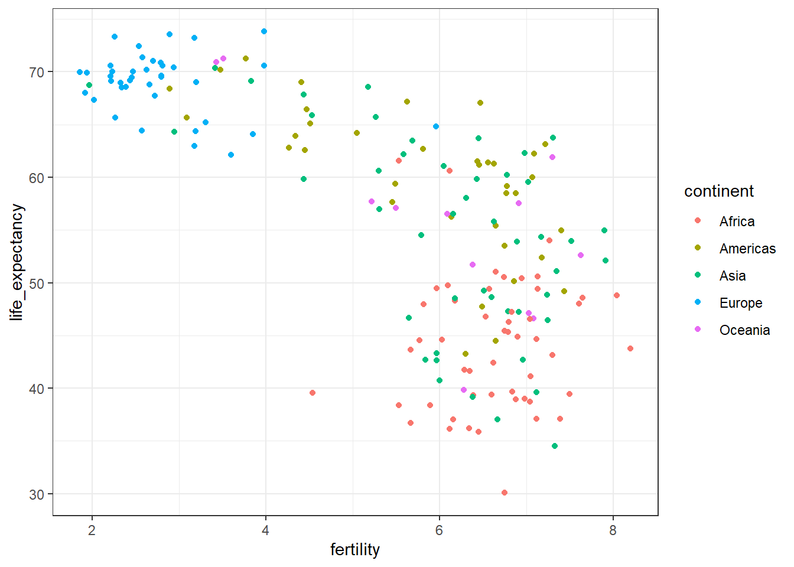
Ключевые моменты
faceting создает несколько параллельных графиков, стратифицированных по некоторой переменной. Это способ упростить сравнение.
Функция facet_grid() позволяет выполнять фасетирование по двум переменным, при этом строки фасетируются по одной переменной, а столбцы - по другой переменной.
Чтобы выполнить фасетирование только по одной переменной, используйте оператор dot в качестве другой переменной.
Функция `facet_wrap() выполняет фасетирование по одной переменной и автоматически оборачивает серию графиков таким образом, чтобы они имели читаемые размеры.
facet сохраняет оси фиксированными на всех графиках, облегчая сравнение между графиками. Полученные данные свидетельствуют о том, что в 2012 году противопоставление развивающегося и западного мировоззрения больше не имеет смысла.
# facet by continent and year
filter(gapminder, year %in% c(1962, 2012)) %>%
ggplot(aes(fertility, life_expectancy, col = continent)) +
geom_point() +
facet_grid(continent ~ year)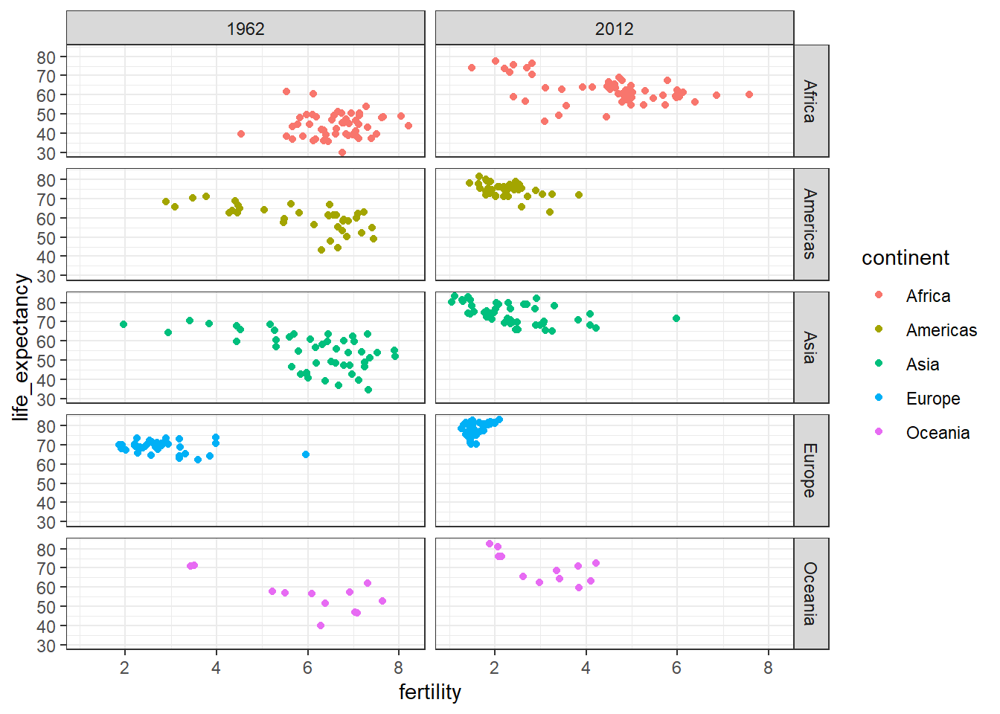
# facet by year only
filter(gapminder, year %in% c(1962, 2012)) %>%
ggplot(aes(fertility, life_expectancy, col = continent)) +
geom_point() +
facet_grid(. ~ year)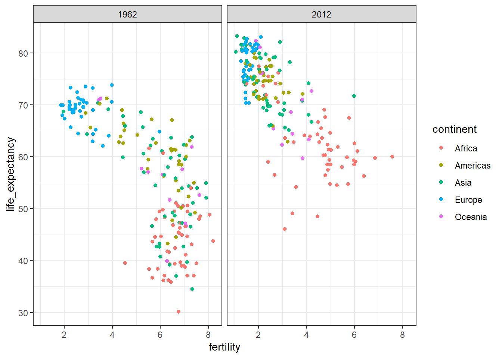
# facet by year, plots wrapped onto multiple rows
years <- c(1962, 1980, 1990, 2000, 2012)
continents <- c("Europe", "Asia")
gapminder %>%
filter(year %in% years & continent %in% continents) %>%
ggplot(aes(fertility, life_expectancy, col = continent)) +
geom_point() +
facet_wrap(~year)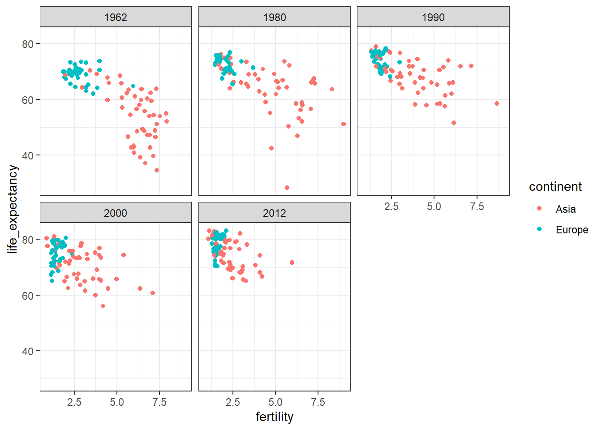
Ключевые моменты
Графики временных рядов показывают время по оси x и интересующую переменную по оси y.
Геометрия geom_line() соединяет соседние точки данных, образуя непрерывную линию.
Линейный график подходит, когда точки расположены на равном расстоянии друг от друга, плотно упакованы и взяты из одного ряда данных. Вы можете построить несколько линий на одном графике. Не забудьте сгруппировать или раскрасить по переменной, чтобы линии отображались независимо друг от друга. Маркировка обычно предпочтительнее условных обозначений. Однако условные обозначения создавать проще, и они отображаются по умолчанию.
Добавьте метку с помощью geom_text(), указав координаты, в которых метка должна появиться на графике.
# scatterplot of US fertility by year
gapminder %>%
filter(country == "United States") %>%
ggplot(aes(year, fertility)) +
geom_point()Warning: Removed 1 row containing missing values or values outside the scale range
(`geom_point()`).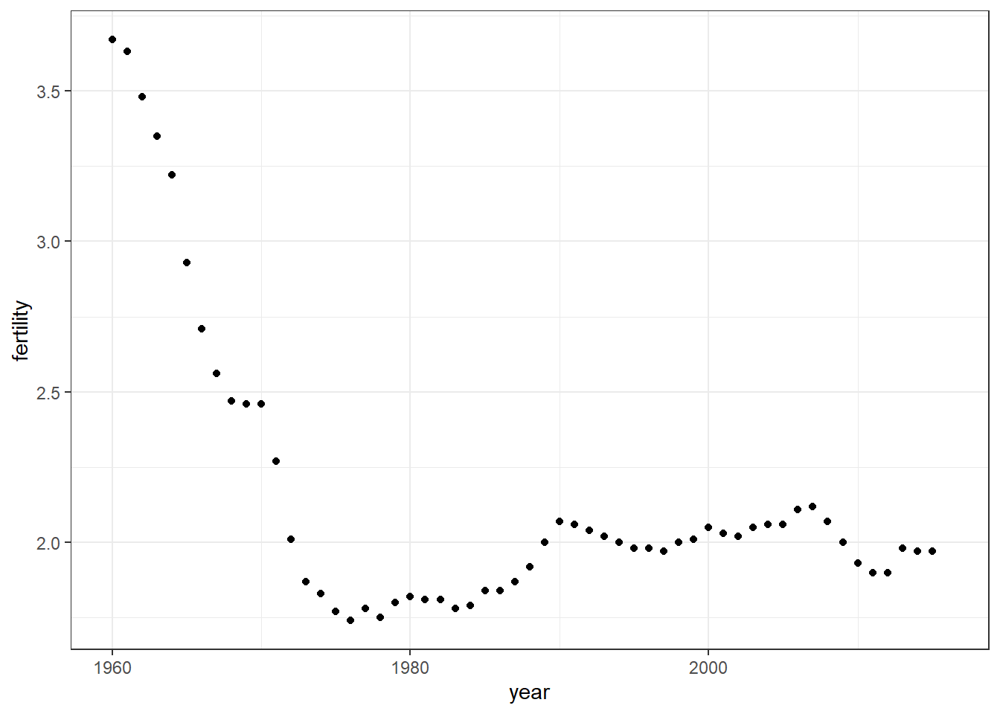
# line plot of US fertility by year
gapminder %>%
filter(country == "United States") %>%
ggplot(aes(year, fertility)) +
geom_line()Warning: Removed 1 row containing missing values or values outside the scale range
(`geom_line()`).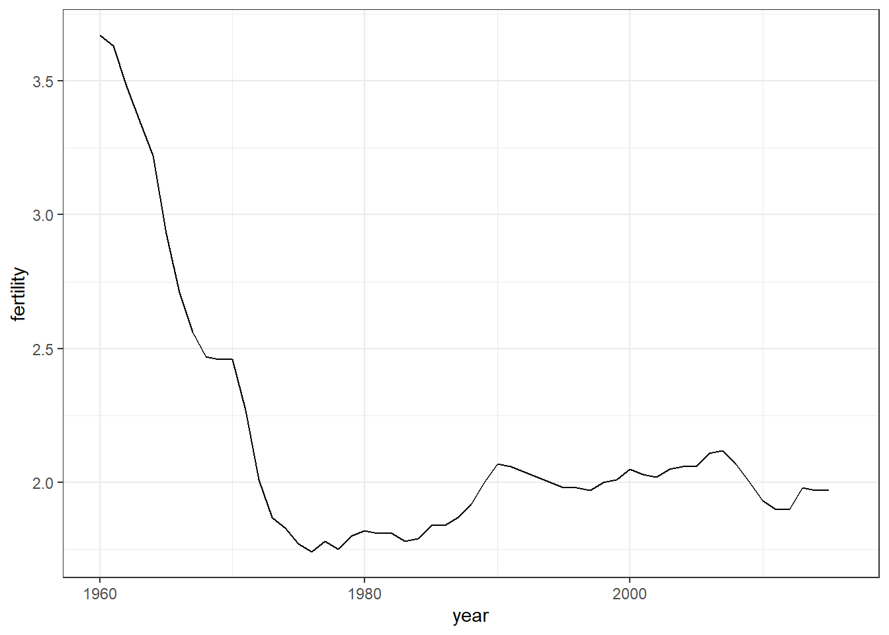
# line plot fertility time series for two countries- only one line (incorrect)
countries <- c("South Korea", "Germany")
gapminder %>% filter(country %in% countries) %>%
ggplot(aes(year, fertility)) +
geom_line()Warning: Removed 2 rows containing missing values or values outside the scale range
(`geom_line()`).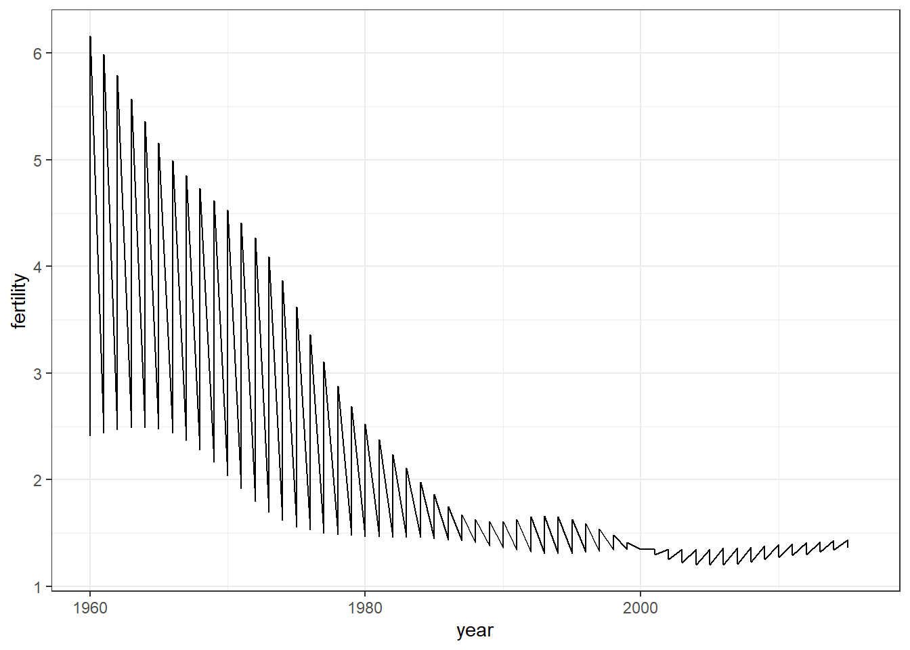
# line plot fertility time series for two countries - one line per country
gapminder %>% filter(country %in% countries) %>%
ggplot(aes(year, fertility, group = country)) +
geom_line()Warning: Removed 2 rows containing missing values or values outside the scale range
(`geom_line()`).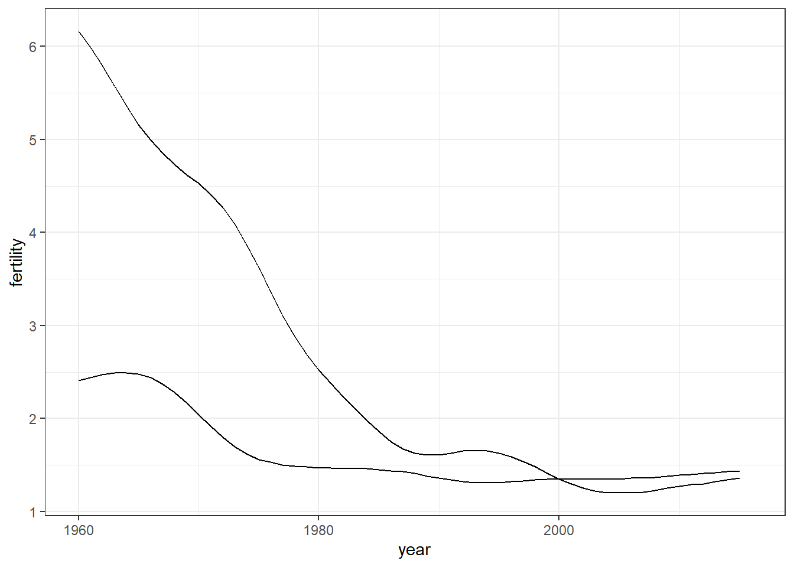
# fertility time series for two countries - lines colored by country
gapminder %>% filter(country %in% countries) %>%
ggplot(aes(year, fertility, col = country)) +
geom_line()Warning: Removed 2 rows containing missing values or values outside the scale range
(`geom_line()`).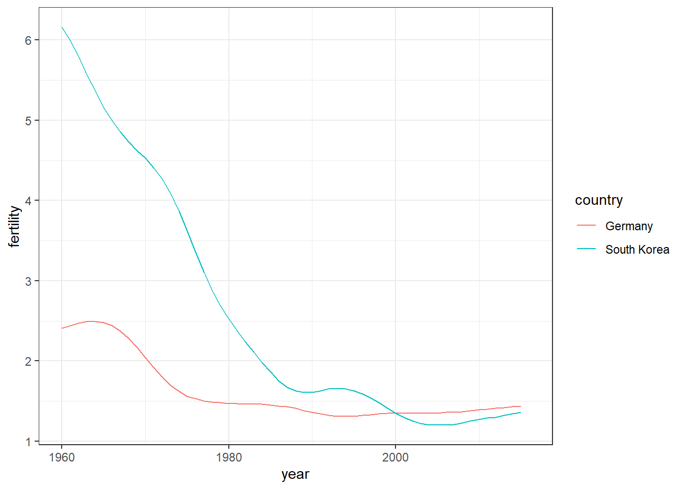
# life expectancy time series - lines colored by country and labeled, no legend
labels <- data.frame(country = countries, x = c(1975, 1965), y = c(60, 72))
gapminder %>% filter(country %in% countries) %>%
ggplot(aes(year, life_expectancy, col = country)) +
geom_line() +
geom_text(data = labels, aes(x, y, label = country), size = 5) +
theme(legend.position = "none")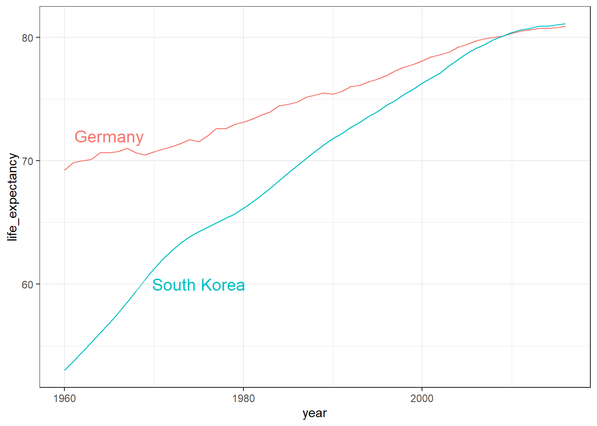
Ключевые моменты
Мы используем данные о ВВП для расчета дохода в долларах США в день с поправкой на инфляцию.
Логарифмические преобразования преобразуют мультипликативные изменения в аддитивные изменения.
Распространенными преобразованиями являются преобразование log base 2 и преобразование log base 10. Выбор базы зависит от диапазона данных. Натуральный лог не рекомендуется для визуализации, поскольку его трудно интерпретировать.
Режим распределения - это значение с наибольшей частотой. Режим нормального распределения - это среднее значение. Дистрибутив может иметь несколько локальных режимов.
Существует два способа использовать логарифмические преобразования на графиках: преобразовать данные перед построением графика или преобразовать оси графика. Логарифмические шкалы имеют то преимущество, что отображают исходные значения в виде меток осей, в то время как логарифмические преобразованные значения облегчают интерпретацию промежуточных значений между метками.
Масштабируйте ось x, используя слои scale_x_continuous() или scale_x_log10() в ggplot2. Аналогичные функции существуют и для оси y.
В 1970 году распределение доходов было бимодальным, что соответствовало дихотомическому мировоззрению Запада и развивающихся стран.
Примечание: в видео, когда указано, что неизвестное значение на логарифмической шкале равно 10 ^ 1,5, на самом деле оно должно быть 10 ^ 0,5
library(ggridges)
gapminder <- gapminder |> mutate(dollars_per_day = gdp/population/100000) |>
relocate(dollars_per_day, .before = infant_mortality)
ggplot(data = gapminder |> select(dollars_per_day, continent, region, year) |> filter(dollars_per_day <= 10) |>
group_by(continent,year) |> summarise(dollars_per_day = mean(dollars_per_day)),
aes(dollars_per_day, continent, color = continent, fill = continent)) +
geom_density_ridges(alpha = 0.5, bandwith = 2) +
theme_minimal() +
theme(legend.position = "none")`summarise()` has grouped output by 'continent'. You can override using the
`.groups` argument.Warning in geom_density_ridges(alpha = 0.5, bandwith = 2): Ignoring unknown
parameters: `bandwith`Picking joint bandwidth of 0.00471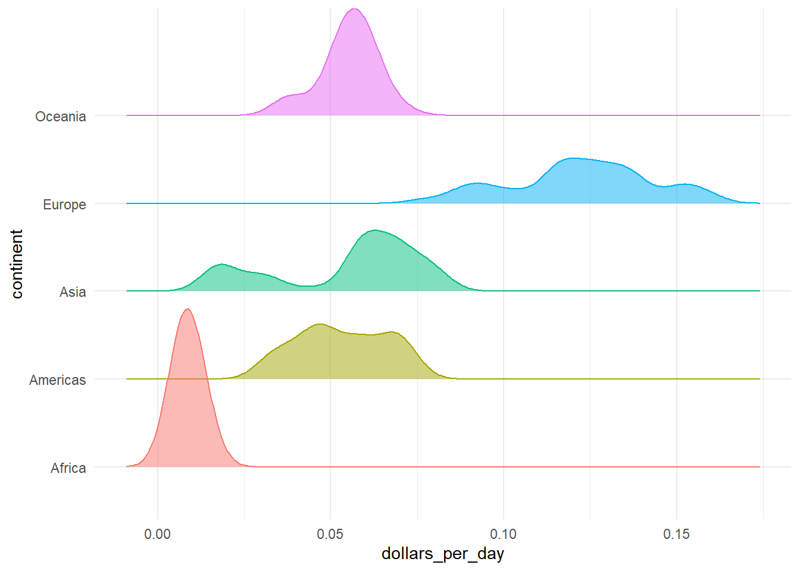
# add dollars per day variable
gapminder <- gapminder |>
mutate(dollars_per_day = gdp/population/365)
# histogram of dollars per day
past_year <- 1970
gapminder |>
filter(year == past_year & !is.na(gdp)) |>
ggplot(aes(dollars_per_day)) +
geom_histogram(binwidth = 1, color = "black", fill = "darkgreen", alpha = 0.6)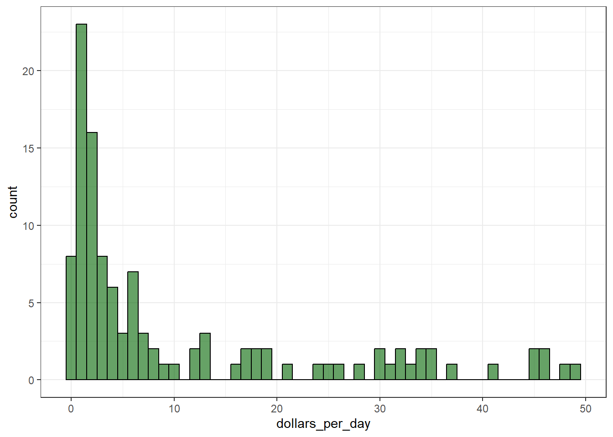
# repeat histogram with log2 scaled data
gapminder |>
filter(year == past_year & !is.na(gdp)) |>
ggplot(aes(log2(dollars_per_day))) +
geom_histogram(binwidth = 1, color = "black", fill = "darkgreen", alpha = 0.6)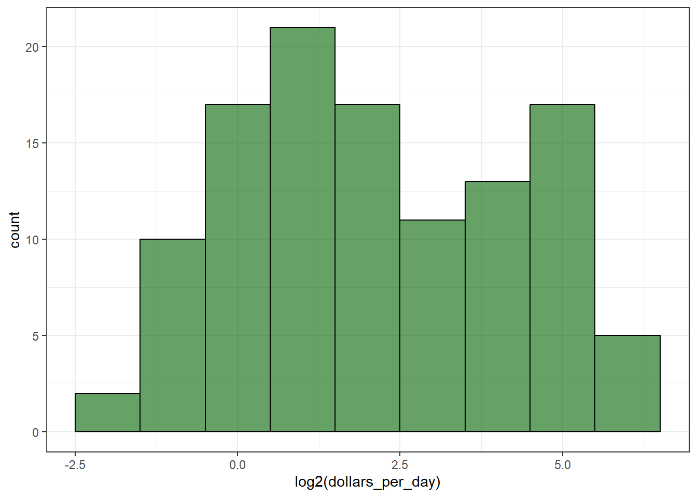
# repeat histogram with log2 scaled x-axis
gapminder |>
filter(year == past_year & !is.na(gdp)) |>
ggplot(aes(dollars_per_day)) +
geom_histogram(binwidth = 1, color = "black", fill = "darkgreen", alpha = 0.6) +
scale_x_continuous(trans = "log2")Ссылка на учебник http://rafalab.dfci.harvard.edu/dsbook/gapminder.html#comparing-multiple-distributions-with-boxplots-and-ridge-plots
Это видео соответствует разделу учебника о сравнении нескольких дистрибутивов с помощью boxplot. Обратите внимание, что многие boxplot из видео вместо этого являются точечными графиками в учебнике и что в учебнике построен другой boxplot. Также прочтите этот раздел, чтобы увидеть пример группировки факторов с помощью функции case_when.
Ключевые моменты
Создайте прямоугольные диаграммы, стратифицированные категориальной переменной, используя геометрию geom_boxplot().
Поверните метки оси, изменив тему с помощью element_text(). Вы можете изменить угол наклона и выравнивание текстовых меток (justification)
Рассмотрите возможность упорядочивания ваших коэффициентов по значимому значению с помощью функции reorder(), которая изменяет порядок уровней коэффициентов на основе связанного числового вектора. Это способ облегчить сравнение.
Покажите данные, добавив точки данных на boxplot с помощью слоя geom_point(). Это добавляет к вашему графику информацию, выходящую за рамки сводки из пяти чисел, но слишком много точек данных может запутать ваше сообщение.
# add dollars per day variable
gapminder <- gapminder |>
mutate(dollars_per_day = gdp/population/365)
# number of regions
length(levels(gapminder$region))[1] 22# boxplot of GDP by region in 1970
past_year <- 1970
p <- gapminder |>
filter(year == past_year & !is.na(gdp)) |>
ggplot(aes(region, dollars_per_day))
p + geom_boxplot()# rotate names on x-axis
p + geom_boxplot() +
theme(axis.text.x = element_text(angle = 90, hjust = 1))# by default, factor order is alphabetical
fac <- factor(c("Asia", "Asia", "West", "West", "West"))
levels(fac)[1] "Asia" "West"# reorder factor by the category means
value <- c(10, 11, 12, 6, 4)
fac <- reorder(fac, value, FUN = median)
levels(fac)[1] "West" "Asia"# reorder by median income and color by continent
p <- gapminder |>
filter(year == past_year & !is.na(gdp)) |>
mutate(region = reorder(region, dollars_per_day, FUN = median)) |> # reorder
ggplot(aes(region, dollars_per_day, fill = continent)) + # color by continent
geom_boxplot() +
theme(axis.text.x = element_text(angle = 90, hjust = 1)) +
xlab("")
p# log2 scale y-axis
p + scale_y_continuous(trans = "log2")# add data points
p + scale_y_continuous(trans = "log2") + geom_point(show.legend = FALSE)В разделе 4 рассматриваются некоторые общие принципы, которые могут служить руководством для эффективной визуализации данных.
После завершения раздела 4 вы научитесь:
понимать основные принципы эффективной визуализации данных.
поймите, как важно помнить о своей цели при выборе подхода к визуализации.
научитесь понимать принципы кодирования данных, включая положение, выровненные длины, углы, площадь, яркость и цветовой оттенок.
научитесь использовать методы, облегчающие сравнение, такие как использование общих осей, размещение визуальных подсказок для сравнения рядом друг с другом и эффективное использование цвета.
Есть 3 задания, в которых используется платформа DataCamp, чтобы вы могли попрактиковаться в своих навыках программирования. На платформе edX также есть 1 задание, которое позволит вам попрактиковаться в предварительном анализе данных.
Ключевые моменты
Мы стремимся предоставить некоторые общие рекомендации по эффективной визуализации данных.
Мы показываем примеры стилей построения, которых следует избегать, обсуждаем, как их улучшить, и используем эти примеры для объяснения основанных на исследованиях принципов эффективной визуализации.
Выбирая подход к визуализации, помните о своей цели и аудитории.
Ключевые моменты
Визуальные подсказки для кодирования данных включают положение, длину, угол, площадь, яркость и цветовой оттенок.
Предпочтительным способом отображения величин являются положение и длина, за которыми следуют углы, которые предпочтительнее площади.
Яркость и цвет еще труднее поддаются количественной оценке, но иногда могут быть полезны.
Круговые диаграммы (Pie charts) представляют визуальные сигналы как в виде углов, так и в виде площади, в то время как в виде пончиков используется только площадь. Люди не очень хороши в визуальной количественной оценке углов и еще хуже в количественной оценке площади. Поэтому следует избегать круговых и Donut charts - вместо них используйте Pie charts. Если вам необходимо создать круговую диаграмму, укажите проценты в качестве lables.
Bar plots представляют визуальные сигналы в виде положения и длины. Люди хороши в визуальной количественной оценке линейных показателей, что делает Bar plots хорошей альтернативой круговым или пончиковым диаграммам.
Ключевые моменты
При использовании линейчатых графиков всегда начинайте с 0. Ввод в заблуждение, если не начинать с 0, потому что bar plots подразумевают, что длина пропорциональна отображаемому количеству.
Отсечение оси y может привести к тому, что различия будут выглядеть больше, чем они есть на самом деле. При использовании позиции, а не длины, необязательно указывать 0 (scatter plot, dot plot, boxplot).
Ключевые моменты
Убедитесь, что в ваших визуализациях указаны правильные величины.
Например, если вы используете график, основанный на площади окружности, убедитесь, что площадь (а не радиус) пропорциональна величинам.
Ключевые моменты
dynamite plot - гистограмма средних значений по группам с полосами ошибок, обозначающими стандартные ошибки, - практически не дает информации о распределении.
Показывая данные, вы предоставляете зрителям дополнительную информацию о распределениях.
Jitter Дрожание - это добавление небольшого случайного сдвига к каждой точке, чтобы свести к минимуму количество перекрывающихся точек. Чтобы добавить дрожание, используйте геометрию geom_jitter() вместо geom_point(). (Смотрите пример ниже.)
library(tidyverse)
# dot plot showing the data
heights %>% ggplot(aes(sex, height)) + geom_point()# jittered, alpha blended point plot
heights %>% ggplot(aes(sex, height)) + geom_jitter(width = 0.05, alpha = 0.2)Ключевые моменты
Когда необходимо сравнить две группы, оптимально разместить их рядом на графике.
Используйте цвет для кодирования сравниваемых групп.
Подумайте о том, чтобы использовать палитру, подходящую для дальтоников, подобную той, что показана в этом видео.
color_blind_friendly_cols <- c("#999999", "#E69F00", "#56B4E9", "#009E73", "#F0E442", "#0072B2", "#D55E00", "#CC79A7")
p1 <- data.frame(x = 1:8, y = 1:8, col = as.character(1:8)) %>%
ggplot(aes(x, y, color = col)) +
geom_point(size = 5)
p1 + scale_color_manual(values = color_blind_friendly_cols)Чтобы построить график справа в упражнении из последнего набора оценок, нам пришлось изменить порядок уровней переменных состояний.
Переопределите state таким образом, чтобы уровни были переупорядочены по rate.
Выведите state и его уровни (используя levels), чтобы вы могли видеть, что вектор теперь переупорядочен по уровням.
library(dplyr)
library(ggplot2)
library(dslabs)
dat <- us_contagious_diseases %>%
filter(year == 1967 & disease=="Measles" & !is.na(population)) %>% mutate(rate = count / population * 10000 * 52 / weeks_reporting)
state <- dat$state
rate <- dat$count/(dat$population/10000)*(52/dat$weeks_reporting)
head(levels(reorder(state, rate)),10) [1] "Georgia" "District Of Columbia" "Connecticut"
[4] "Minnesota" "Louisiana" "New Hampshire"
[7] "Maryland" "Kansas" "New York"
[10] "Pennsylvania" Теперь мы собираемся еще немного настроить этот график, создав переменную скорости и изменив порядок по этой переменной.
Add a single line of code to the definition of the dat table that uses mutate to reorder the states by the rate variable.
The sample code provided will then create a bar plot using the newly defined dat.
library(dplyr)
library(ggplot2)
library(dslabs)
data(us_contagious_diseases)
dat <- us_contagious_diseases %>% filter(year == 1967 & disease=="Measles" & count>0 & !is.na(population)) %>%
mutate(rate = count / population * 10000 * 52 / weeks_reporting) %>%
mutate(state = reorder(state, rate))
dat %>% ggplot(aes(state, rate)) +
geom_bar(stat="identity") +
coord_flip()Чтобы дополнительно выяснить, является ли переезд в западный регион мудрым решением, давайте составим сводную таблицу показателей убийств по регионам, показав все пункты.
Order the regions by their median murder rate by using mutate and reorder.
Make a box plot of the murder rates by region.
Show all of the points on the box plot.
library(dplyr)
library(ggplot2)
library(dslabs)
data("murders")
murders %>% mutate(rate = total/population*100000) %>%
mutate(region = reorder(region,rate))%>%
ggplot(aes(region, rate, fill = region)) +
geom_boxplot() +
geom_point()
Ключевые моменты
Рассмотрите возможность использования Slope Chart диаграммы наклона или графика Бланда-Альтмана при сравнении одной переменной в два разных момента времени, особенно для небольшого числа наблюдений.
Диаграммы наклона используют угол для кодирования изменений.
Используйте geom_line() для создания Slope Chart. Это полезно при сравнении небольшого числа наблюдений.
График Бланда-Альтмана (график средней разности Тьюки, график МА) отображает разницу между условиями по оси y и среднее значение между условиями по оси x. Это более подходит для большого количества наблюдений, чем диаграммы наклона.
Code: Slope chart
library(tidyverse)
library(dslabs)
data(gapminder)
west <- c("Western Europe", "Northern Europe", "Southern Europe", "Northern America", "Australia and New Zealand")
dat <- gapminder %>%
filter(year %in% c(2010, 2015) & region %in% west & !is.na(life_expectancy) & population > 10^7)
dat %>%
mutate(location = ifelse(year == 2010, 1, 2),
location = ifelse(year == 2015 & country %in% c("United Kingdom", "Portugal"),location + 0.22, location),hjust = ifelse(year == 2010, 1, 0)) %>%
mutate(year = as.factor(year)) %>%
ggplot(aes(year, life_expectancy, group = country)) +
geom_line(aes(color = country), show.legend = FALSE) +
geom_text(aes(x = location, label = country, hjust = hjust), show.legend = FALSE) +
xlab("") +
ylab("Life Expectancy") 
Code: Bland-Altman plot
library(ggrepel)
dat %>%
mutate(year = paste0("life_expectancy_", year)) %>%
select(country, year, life_expectancy) %>%
spread(year, life_expectancy) %>%
mutate(average = (life_expectancy_2015 + life_expectancy_2010)/2,
difference = life_expectancy_2015 - life_expectancy_2010) %>%
ggplot(aes(average, difference, label = country)) +
geom_point() +
geom_text_repel() +
geom_abline(lty = 2) +
xlab("Average of 2010 and 2015") +
ylab("Difference between 2015 and 2010")
Ключевые моменты
Вакцины спасают миллионы жизней, но дезинформация заставила некоторых усомниться в безопасности вакцин. Полученные данные подтверждают, что вакцины безопасны и эффективны. Мы визуализируем данные о заболеваемости корью, чтобы продемонстрировать влияние программ вакцинации на уровень заболеваемости.
Пакет RColorBrewer предлагает несколько цветовых палитр. Последовательные цветовые палитры лучше всего подходят для данных, которые охватывают диапазон от высокого до низкого. Расходящиеся цветовые палитры лучше всего подходят для данных, которые расположены по центру и расходятся в сторону высоких или низких значений.
Геометрия geom_tile() создает сетку из цветных плиток.
Положение и длина являются более сильными сигналами для числовых значений, чем цвет, но иногда цвет может быть подходящим.
Code: Tile plot of measles rate by year and state
# import data and inspect
library(tidyverse)
library(dslabs)
data(us_contagious_diseases)
str(us_contagious_diseases)'data.frame': 16065 obs. of 6 variables:
$ disease : Factor w/ 7 levels "Hepatitis A",..: 1 1 1 1 1 1 1 1 1 1 ...
$ state : Factor w/ 51 levels "Alabama","Alaska",..: 1 1 1 1 1 1 1 1 1 1 ...
$ year : num 1966 1967 1968 1969 1970 ...
$ weeks_reporting: num 50 49 52 49 51 51 45 45 45 46 ...
$ count : num 321 291 314 380 413 378 342 467 244 286 ...
$ population : num 3345787 3364130 3386068 3412450 3444165 ...# assign dat to the per 10,000 rate of measles, removing Alaska and Hawaii and adjusting for weeks reporting
the_disease <- "Measles"
dat <- us_contagious_diseases %>%
filter(!state %in% c("Hawaii", "Alaska") & disease == the_disease) %>%
mutate(rate = count / population * 10000 * 52/weeks_reporting) %>%
mutate(state = reorder(state, rate))
# plot disease rates per year in California
dat %>% filter(state == "California" & !is.na(rate)) %>%
ggplot(aes(year, rate)) +
geom_line() +
ylab("Cases per 10,000") +
geom_vline(xintercept=1963, col = "blue")# tile plot of disease rate by state and year
dat %>% ggplot(aes(year, state, fill=rate)) +
geom_tile(color = "grey50") +
scale_x_continuous(expand = c(0,0)) +
scale_fill_gradientn(colors = RColorBrewer::brewer.pal(9, "Reds"), trans = "sqrt") +
geom_vline(xintercept = 1963, col = "blue") +
theme_minimal() + theme(panel.grid = element_blank()) +
ggtitle(the_disease) +
ylab("") +
xlab("")Code: Line plot of measles rate by year and state
# compute US average measles rate by year
avg <- us_contagious_diseases %>%
filter(disease == the_disease) %>% group_by(year) %>%
summarize(us_rate = sum(count, na.rm = TRUE)/sum(population, na.rm = TRUE)*10000)
# make line plot of measles rate by year by state
dat %>%
filter(!is.na(rate)) %>%
ggplot() +
geom_line(aes(year, rate, group = state), color = "grey50",
show.legend = FALSE, alpha = 0.2, size = 1) +
geom_line(mapping = aes(year, us_rate), data = avg, size = 1, col = "black") +
scale_y_continuous(trans = "sqrt", breaks = c(5, 25, 125, 300)) +
ggtitle("Cases per 10,000 by state") +
xlab("") +
ylab("") +
geom_text(data = data.frame(x = 1955, y = 50),
mapping = aes(x, y, label = "US average"), color = "black") +
geom_vline(xintercept = 1963, col = "blue")
Приведенный пример кода создает мозаичный график, показывающий уровень заболеваемости корью на душу населения. Мы собираемся изменить график плитки, чтобы вместо этого посмотреть на случаи оспы.
Modify the tile plot to show the rate of smallpox cases instead of measles cases.
Exclude years in which cases were reported in fewer than 10 weeks from the plot.
library(dplyr)
library(ggplot2)
library(RColorBrewer)
library(dslabs)
data(us_contagious_diseases)
the_disease = "Smallpox"
dat <- us_contagious_diseases %>%
filter(!state%in%c("Hawaii","Alaska") & disease == the_disease & weeks_reporting >= 10) %>%
mutate(rate = count / population * 10000) %>%
mutate(state = reorder(state, rate))
dat %>% ggplot(aes(year, state, fill = rate)) +
geom_tile(color = "grey50") +
scale_x_continuous(expand=c(0,0)) +
scale_fill_gradientn(colors = brewer.pal(9, "Reds"), trans = "sqrt") +
theme_minimal() +
theme(panel.grid = element_blank()) +
ggtitle(the_disease) +
ylab("") +
xlab("")Приведенный пример кода создает график временных рядов, показывающий уровень заболеваемости корью на душу населения в разбивке по штатам. Мы собираемся снова изменить этот график, чтобы вместо этого рассмотреть случаи натуральной оспы.
Измените пример кода для построения временных рядов, чтобы построить данные для натуральной оспы, а не для кори.
Еще раз, ограничьте график годами, в течение которых случаи были зарегистрированы по крайней мере за 10 недель.
library(dplyr)
library(ggplot2)
library(dslabs)
library(RColorBrewer)
data(us_contagious_diseases)
the_disease = "Smallpox"
dat <- us_contagious_diseases %>%
filter(!state%in%c("Hawaii","Alaska") & disease == the_disease & weeks_reporting >= 10) %>%
mutate(rate = count / population * 10000) %>%
mutate(state = reorder(state, rate))
avg <- us_contagious_diseases %>%
filter(disease==the_disease) %>% group_by(year) %>%
summarize(us_rate = sum(count, na.rm=TRUE)/sum(population, na.rm=TRUE)*10000)
dat %>% ggplot() +
geom_line(aes(year, rate, group = state), color = "grey50",
show.legend = FALSE, alpha = 0.2, size = 1) +
geom_line(mapping = aes(year, us_rate), data = avg, size = 1, color = "black") +
scale_y_continuous(trans = "sqrt", breaks = c(5,25,125,300)) +
ggtitle("Cases per 10,000 by state") +
xlab("") +
ylab("") +
geom_text(data = data.frame(x=1955, y=50), mapping = aes(x, y, label="US average"), color="black") +
geom_vline(xintercept=1963, col = "blue")Теперь мы рассмотрим показатели заболеваемости всеми болезнями в одном штате. Опять же, вы будете модифицировать пример кода для получения желаемого графика.
Для штата Калифорния составьте график временных рядов, показывающий показатели по всем заболеваниям.
Включайте только годы с отчетностью в 10 или более недель.
Используйте другой цвет для каждого заболевания.
Включите вашу функцию aes внутри ggplot, а не внутри вашего слоя geom.
library(dplyr)
library(ggplot2)
library(dslabs)
library(RColorBrewer)
data(us_contagious_diseases)
us_contagious_diseases %>% filter(state=="California" & weeks_reporting>=10) %>%
group_by(year, disease) %>%
summarize(rate = sum(count)/sum(population)*10000) %>%
ggplot(aes(year, rate, color = disease)) +
geom_line()
Теперь мы собираемся построить график временных рядов для показателей всех заболеваний в Соединенных Штатах. Для этого упражнения мы предоставили меньше примеров кода - вы можете ознакомиться с предыдущим упражнением, чтобы начать.
Вычислите rate в США, используя summary для суммирования по штатам. Назовите переменную rate.
Показатель в США по каждому заболеванию будет равен общему числу случаев, деленному на общую численность населения.
Не забудьте перевести в количество обращений на 10 000.
Вам нужно будет отфильтровать для !i s.na (population), чтобы получить все данные. Выделите каждое заболевание другим цветом.
library(dplyr)
library(ggplot2)
library(dslabs)
library(RColorBrewer)
data(us_contagious_diseases)
us_contagious_diseases %>% filter(!is.na(population)) %>%
group_by(year, disease) %>%
summarize(rate = sum(count)/sum(population)*10000) %>%
ggplot(aes(year, rate, color = disease)) +
geom_line()`summarise()` has grouped output by 'year'. You can override using the
`.groups` argument.“Титаник” был британским океанским лайнером, который столкнулся с айсбергом и затонул во время своего первого рейса в 1912 году из Соединенного Королевства в Нью-Йорк. Более 1500 из примерно 2224 пассажиров и членов экипажа погибли в результате аварии, что делает ее одной из крупнейших морских катастроф, когда-либо имевших место за пределами войны. На судне перевозился широкий круг пассажиров всех возрастов и обоих полов, от путешественников класса люкс в первом классе до иммигрантов низшего класса. Однако не у всех пассажиров были равные шансы выжить в результате аварии. Мы используем реальные данные о 891 пассажире, чтобы узнать, кто был на борту “Титаника” и у каких пассажиров было больше шансов выжить.
Библиотеки, опции и данные
Прежде чем продолжить, убедитесь, что вы установили пакет titanic.
Определите набор данных titanic, начиная с библиотеки titanic, с помощью следующего кода:
options(digits = 3) # report 3 significant digits
library(tidyverse)
library(titanic)
titanic <- titanic_train %>%
select(Survived, Pclass, Sex, Age, SibSp, Parch, Fare) %>%
mutate(Survived = factor(Survived),
Pclass = factor(Pclass),
Sex = factor(Sex))
str(titanic)'data.frame': 891 obs. of 7 variables:
$ Survived: Factor w/ 2 levels "0","1": 1 2 2 2 1 1 1 1 2 2 ...
$ Pclass : Factor w/ 3 levels "1","2","3": 3 1 3 1 3 3 1 3 3 2 ...
$ Sex : Factor w/ 2 levels "female","male": 2 1 1 1 2 2 2 2 1 1 ...
$ Age : num 22 38 26 35 35 NA 54 2 27 14 ...
$ SibSp : int 1 1 0 1 0 0 0 3 0 1 ...
$ Parch : int 0 0 0 0 0 0 0 1 2 0 ...
$ Fare : num 7.25 71.28 7.92 53.1 8.05 ...Составьте графики плотности населения по возрасту, сгруппированные по полу. Попробуйте поэкспериментировать с комбинациями faceting, alpha blending, stacking and using variable values on the y axis, чтобы ответить на следующие вопросы. На некоторые вопросы может быть легче ответить с помощью различных версий графика плотности.
titanic |>
ggplot(aes(Age, fill = Sex, alpha = 0.4)) +
geom_density()+
facet_grid(Sex~.)Warning: Removed 177 rows containing non-finite outside the scale range
(`stat_density()`).Use geom_qq() to make a QQ-plot of passenger age and add an identity line with geom_abline(). Filter out any individuals with an age of NA first. Use the following object as the dparams argument in geom_qq():
params <- titanic %>%
filter(!is.na(Age)) %>%
summarize(mean = mean(Age), sd = sd(Age))
params mean sd
1 29.7 14.5To answer the following questions, make barplots of the Survived and Sex variables using geom_bar(). Try plotting one variable and filling by the other variable. You may want to try the default plot, then try adding position = position_dodge() to geom_bar() to make separate bars for each group.
#plot 1 - survival filled by sex
titanic %>%
ggplot(aes(Survived, fill = Sex)) +
geom_bar()# plot 2 - survival filled by sex with position_dodge
titanic %>%
ggplot(aes(Survived, fill = Sex)) +
geom_bar(position = position_dodge())#plot 3 - sex filled by survival
titanic %>%
ggplot(aes(Sex, fill = Survived)) +
geom_bar()Explanation and Answer Code
A and B can be clearly seen in the barplot of survival status filled by sex. The count of survivors is lower than the count of non-survivors. The bar of survivors is more than half filled by females. Alternatively, the bars can be split by sex with position_dodge, showing the “Female, Survived” bar has a greater height than the “Male, survived” bar. C and D are more clearly seen in the barplot of sex filled by survival status, though they can also be determined from the first barplot. Most males did not survive, but most females did survive.
Make a density plot of age filled by survival status. Change the y-axis to count and set alpha = 0.2.
Which age group is the only group more likely to survive than die?
titanic |>
ggplot(aes(Age, y = after_stat(count), fill = Survived))+
geom_density(alpha = 0.5)Warning: Removed 177 rows containing non-finite outside the scale range
(`stat_density()`).Which age group is the only group more likely to survive than die? 0-8
Which age group had the most deaths? 18-30
Which age group had the highest proportion of deaths? 70-80
Filter the data to remove individuals who paid a fare of 0. Make a boxplot of fare grouped by survival status. Try a log2 transformation of fares. Add the data points with jitter and alpha blending.
titanic |>
filter(Fare != "0") |>
ggplot(aes(Fare, fill = Survived)) +
geom_boxplot()Which of the following are true?
Passengers who survived generally payed higher fares than those who did not survive.
The interquartile range for fares was smaller for passengers who survived.
The median fare was lower for passengers who did not survive.
Only one individual paid a fare around $500. That individual survived.
Most individuals who paid a fare around $8 did not survive.
The Pclass variable corresponds to the passenger class. Make three barplots. For the first, make a basic barplot of passenger class filled by survival. For the second, make the same barplot but use the argument position = position_fill() to show relative proportions in each group instead of counts. For the third, make a barplot of survival filled by passenger class using position = position_fill().
str(titanic)'data.frame': 891 obs. of 7 variables:
$ Survived: Factor w/ 2 levels "0","1": 1 2 2 2 1 1 1 1 2 2 ...
$ Pclass : Factor w/ 3 levels "1","2","3": 3 1 3 1 3 3 1 3 3 2 ...
$ Sex : Factor w/ 2 levels "female","male": 2 1 1 1 2 2 2 2 1 1 ...
$ Age : num 22 38 26 35 35 NA 54 2 27 14 ...
$ SibSp : int 1 1 0 1 0 0 0 3 0 1 ...
$ Parch : int 0 0 0 0 0 0 0 1 2 0 ...
$ Fare : num 7.25 71.28 7.92 53.1 8.05 ...titanic |> ggplot(aes(Pclass, fill = Survived)) +
geom_bar(alpha = 0.4)titanic |> ggplot(aes(Pclass, fill = Survived)) +
geom_bar(alpha = 0.4, position = position_fill())titanic |> ggplot(aes(Survived, fill = Pclass)) +
geom_bar(alpha = 0.4, position = position_fill())Which of the following are true?
There were more third class passengers than passengers in the first two classes combined.
There were the fewest passengers in first class, second-most passengers in second class, and most passengers in third class.
Survival proportion was highest for first class passengers, followed by second class. Third-class had the lowest survival proportion.
Most passengers in first class survived. Most passengers in other classes did not survive.
The majority of survivors were from first class. (Majority means over 50%.)
The majority of those who did not survive were from third class.
Create a grid of density plots for age, filled by survival status, with count on the y-axis, faceted by sex and passenger class.
titanic |>
ggplot(aes(Age, after_stat(count), fill = Survived)) +
geom_density(alpha = 0.5) +
facet_grid(Sex~Pclass)Warning: Removed 177 rows containing non-finite outside the scale range
(`stat_density()`).Which of the following are true?
The largest group of passengers was third-class males.
The age distribution is the same across passenger classes.
The gender distribution is the same across passenger classes.
Most first-class and second-class females survived.
Almost all second-class males did not survive, with the exception of children.